DCS: F-100D Manual

Disclaimer
This manual is work in progress. Not all items are completed, however included information should be accurate. If you find any inaccuracies please report them on our github.
Contents
-
Introduction
-
Cockpit
-
DCS
-
Systems
-
Procedures
- Extras
Contributions
This manual is open source and open for community contributions, if you wish to contribute please see the repository here.
Introduction ↵

F-100D Super Sabre
Welcome
Grinnelli Designs is proud to present our DCS: F-100D Super Sabre!
The North American F-100D Super Sabre occupies a unique place in aviation history. As the first United States Air Force fighter capable of sustained supersonic level flight, it represented a major leap beyond the legendary F-86 Sabre. Designed during the dawn of the supersonic age, and refined through years of operational experience, the F-100D evolved into one of the most important fighter-bombers of the Cold War, and became a mainstay of U.S. Air Force operations during the Vietnam War.
Our goal with the DCS: F-100D has been to recreate not only the appearance and performance of the Super Sabre, but also the experience of operating one. To achieve this, we began with an extensively researched cockpit and external model created from thousands of photographs, photogrammetry data, and laser scans of a preserved museum aircraft. Every switch, gauge, panel, and surface has been recreated with meticulous attention to detail, allowing you to step into a faithful representation of one of aviation's most iconic aircraft.
Beyond the visual model, we sought to capture the character of the Super Sabre itself. The F-100 was a pioneering aircraft that demanded skill and respect from its pilots. Its powerful swept-wing design delivered exceptional performance, but it also introduced handling characteristics that rewarded proper technique and punished complacency. Our flight model has been developed using actual short and long-period stability reports, and validated against the experiences of real F-100 pilots. From high-speed maneuvering to the unique low-speed behaviors that gave rise to the infamous "Sabre Dance", every effort has been made to reproduce the aircraft's handling as accurately as possible.
The DCS: F-100D goes far beyond a traditional aircraft simulation. Beneath the cockpit lies a deeply interconnected simulation of the aircraft's systems. The electrical system models realistic voltages, currents, and power consumption throughout the aircraft. The hydraulic system simulates hydro-mechanical fluid flow and physically modeled actuators. The thermodynamic engine model reproduces compressor stalls, surges, ignition characteristics, gearbox behavior, oil systems, and afterburner operation. Multiple engine and probe configurations are available, allowing pilots to experience the distinct operational characteristics of different Super Sabre variants.
Many of the systems you interact with are themselves physically simulated. Cockpit instruments feature realistic inertia, friction, and movement dynamics. The braking system models temperature accumulation, brake fade, and even smoke from overheated brakes. The AN/APR-25 Radar Homing and Warning system recreates radar signal behavior and generates unique audio indications based on detected threats. The result is an aircraft that behaves naturally under both normal and abnormal operating conditions, providing a level of immersion that extends far beyond switch-by-switch system replication.
Combat capability has received the same level of attention. The Super Sabre's four 20 mm M39 cannons, AIM-9 Sidewinders, AGM-45 Shrike missiles, rockets, bombs, and cluster munitions have been recreated in detail. The aircraft's fire control system combines ranging radar, a gyroscopic gunsight, and an early form of computer-assisted weapons delivery, providing a fascinating glimpse into the transition between purely manual and modern computerized attack systems. Configurable strike and gun cameras allow you to record your missions and review weapons employment after the fight, just as real pilots once did.
We have also sought to recreate some of the unique aspects of Super Sabre operations that are rarely represented in flight simulation. You can experience zero-length launch operations, customize instrument layouts to match different aircraft configurations, and fly with cockpit audio recorded from an actual F-100. Combined with our dynamic damage model and detailed systems simulation, these features help bring the aircraft's operational history to life.
A simulation of this depth naturally presents a learning challenge, and we believe learning should be just as rewarding as flying. This manual has been designed to serve both newcomers and experienced virtual pilots alike. Whether you are learning how to start the engine, understanding the aircraft's hydraulic systems, mastering the fire control computer, or studying advanced weapons employment, this manual is intended to guide you step-by-step through the process. Interactive training missions complement the written material, allowing you to immediately apply what you have learned in the cockpit.
The F-100D is not an aircraft that can be mastered overnight. It demands discipline, preparation, and a willingness to understand its strengths and limitations. Yet it is precisely those challenges that make it such a rewarding aircraft to fly. Every successful landing, every accurate bombing run, and every mission completed safely reflects the pilot's growing understanding of a machine that helped define an era of military aviation.
We hope you enjoy learning, flying, and mastering the DCS: F-100D Super Sabre as much as we have enjoyed bringing it to life. Whether you are exploring Cold War operations, reliving the skies over Vietnam, or simply experiencing one of the most significant fighters ever built, we wish you success and many memorable flights ahead.
—The Grinnelli Designs F-100D Development Team
History

The F-100D Super Sabre entered service in 1956 as the U.S. Air Force's definitive fighter-bomber. Succeeding the legendary F-86, it was the first fighter aircraft capable of supersonic speed in level flight. Although developed as a day air-superiority fighter, the Super Sabre family eventually saw the F-100D repurposed as a ground-attack platform. Extensive use of the F-100D during the Vietnam War made it the most widely produced variant.
Building on the legacy and performance of its predecessor, the F-100's distinctive 45° swept-wing design introduced unique handling challenges at low speeds. In particular, inexperienced pilots could encounter the notorious "Sabre Dance": A phenomenon resulting from increasing adverse yaw, inertial coupling, and wing-tip stall.
The Super Sabre is equipped with four 20 mm Pontiac M39 cannons mounted in the lower fuselage beneath the cockpit, providing formidable firepower. It is capable of carrying up to four AIM-9 Sidewinder air-to-air, infrared-guided missiles for targeting enemy aircraft. The aircraft also features six underwing hardpoints that can carry a total payload of up to 7,040 lb of conventional bombs, rockets, napalm, and the AGM-45 Shrike anti-radiation missile used to attack radar installations. To support both aerial gunnery and air-to-ground bombing, the aircraft is equipped with a fire control system that helps the pilot accurately aim and release weapons.
The Sabre features a 45° swept wing, supersonic level flight and in flight air refueling capability. Underwing stations can be used to maximize range with fuel tanks or add additional ordnance.
Project High Wire

To further enhance operational effectiveness, the F-100D features the "high wire" modification that standardizes instruments and avionics. This includes the AN/APR-25 Radar Homing And Warning receiver (RHAW), which alerts pilots to threats from surface-to-air missiles (SAMs). For example: The RHAW can detect radar emissions from systems like the Fan Song tracking radar that guides SA-2 Guideline missiles.
DCS: F-100D features the Project High Wire modernization. This program also consisted of specific upgrades: electrical and maintenance. Aircraft were re-wired to extend service life and upgrade avionics while extensive maintenance re-vitalized other aspects of the airframe.

Definitions and Abbreviations
Definitions and abbreviations used in the manual are covered here.
Definitions
| Designation | Equipment |
|---|---|
| A-4 | Gyroscopic Gunsight |
| ABU-11 | Aircraft Clock |
| AN/AIC-10 | Audio Amplifier System |
| AN/AJB-1 | Low Altitude Bombing System |
| AN/APR-25 | Radar Homing and Warning Receiver |
| AN/APX-72 | IFF Transponder |
| AN/ARA-50 | Automatic Direction Finding System |
| AN/ARC-34 | UHF Command Radio |
| AN/ARN-6 | Radio Compass |
| AN/ARN-72 | TACAN Navigation Set |
| J57 | Turbojet Engine Family |
| MD-1 | Oxygen Regulator |
Notes, Warnings, and Cautions
Note
Non-safety critical information.
Caution
Possibile situations that might arise (for example, due to interrelated system operation).
Warning
Time sensitive hazardous situations that require corrective action to avoid damage to the aircraft or injury to the pilot.
Abbreviations
| Abbreviation | Meaning |
|---|---|
| 0PSL | Zero Prediction Sight Line |
| A/A | Air-to-Air |
| AAA | Anti-Aircraft Artillery |
| AB | Afterburner |
| AC | Alternating Current |
| ADC | Air Data Computer |
| ADF | Automatic Direction Finding |
| AGL | Above Ground Level |
| AGM-45 | Shrike Anti-Radiation Missile |
| AIM | Air Intercept Missile |
| AIM-9 | Sidewinder Infrared Guided Missile |
| AIMS | Airborne Identification System |
| AN | Army-Navy Equipment Designation Prefix |
| AWRS | Aircraft Weapons Release System |
| BFO | Beat Frequency Oscillator |
| BIT | Built-In Test |
| CW | Continuous Wave |
| DC | Direct Current |
| DCS | Digital Combat Simulator |
| ECSL | Electrically Caged Sight Line |
| EPR | Engine Pressure Ratio |
| FFAR | Folding Fin Aerial Rockets |
| FRL | Fuselage Reference Line |
| GHz | Gigahertz |
| HI-FLO | High Flow |
| Hz | Hertz |
| IFF | Identification Friend or Foe |
| IF | Intermediate Frequency |
| INOP | Inoperative |
| KIAS | Knots Indicated Airspeed |
| kHz | Kilohertz |
| LABS | Low Altitude Bombing System |
| LADD | Low Altitude Drogue Delivery |
| LORO | Lobe-On-Receive-Only |
| LWR | Lower |
| MAIN | Main Receiver Mode |
| MFBL | Mean Fixed Bore Line |
| mils | Milliradians |
| MSL | Mean Sea Level |
| NATO | North Atlantic Treaty Organization |
| NM | Nautical Mile |
| PLP | Precautionary Landing Pattern |
| POD | Gun Pod Selection |
| PRF | Pulse Repetition Frequency |
| psi | Pounds per square inch |
| PWR | Power |
| RAM | Ram Air |
| RAT | Ram Air Turbine |
| RHAW | Radar Homing and Warning |
| RKTS | Rockets |
| RPM | Revolutions Per Minute |
| SA-2 | Surface-to-Air Missile-2 Guideline |
| SAM | Surface-to-Air Missile |
| SIF | Selective Identification Feature |
| SPL | Special |
| TACAN | Tactical Air Navigation |
| T0PSL | True Zero Prediction Sight Line |
| UHF | Ultra High Frequency |
| USAF | United States Air Force |
| VGI | Vertical Gyro Indicator |
| WX | Weather |
| ZELL | Zero-Length Launch |

Credits
Core Team
| Name | Role |
|---|---|
| Joe Grinnelli | Team Lead |
| Aero | Aerodynamicist |
| Thomas | Cockpit Artist |
| Josh Nelson | Lead Programmer |
Programming
| Name | Role |
|---|---|
| Haydn Boul | Programmer |
| Sloan Phillippi | Programmer |
Art Department
| Name | Role |
|---|---|
| Andrei (Warped-Studios) | Artist |
| Daniel Clark | Artist |
| Evan Ashby | Artist |
| Jamal Ingram | Artist |
| Michael Carter | Artist |
| Sean Strike | Artist, Research, and Skins |
| Spatz | Artist |
Liveries & Skins
| Name | Role |
|---|---|
| Daniel "Kujo" Kaleikini | Skins |
| Mach 3 Design Studio | Skins |
| Sean Strike | Artist, Research, and Skins |
Audio
| Name | Role |
|---|---|
| Partario Flynn | Sound Designer |
Research
| Name | Role |
|---|---|
| Mxstylie | Research |
| Sean Strike | Artist, Research, and Skins |
Media Digital Infrastructure
| Name | Role |
|---|---|
| JJ Kirby | Video Producer |
| Ripper | Social Media |
| Ryan Gore | Systems, Web, and Digital Infrastructure |
Flight Sim Expo 2026 Demo Team
| Name | Role |
|---|---|
| Daniel "Kujo" Kaleikini | Lead |
| Ian "Burner" Roberts | Right Wing |
| Robbie "Carl" Devergillo | Slot |
| Roger "Dreadnaut" Sewell | Left Wing |
Test Team
Shadowfrost · Taha "Flint" Faheem · Snakev3nom · Klarsnow · nearblind · Druid · VKNG · Adam Stettner · RaptorDad · Deephack · Jonbloor · Jamie "Diesel Thunder" · Alex "Dirty" Brooks · Dark · Simba · 55Four · Chris "STRIKER" Curtis · PatatOorlog · Tricker · Justin "Aviate" Baros · Patrick "FiFi" Snyder · 3shyammenon · EatLeadCobra · Ahmed "MJ" Alsaadi · Pooosh · Strokes · OverWatch · Spud Spike · Ambo · Jack1nthecrack · Zergburger · Brandon "SCUD" Lublin · Kyle "Kodiak" Stone · Joe "Lightning" Longtine · Santiago "Cubeboy" Cuberos · Aaron "Ribbon-Blue" Mendoza · Toby Wills, Capt USAF (sep.) · Gen · Joshers · randomTOTEN · The wireman · Allie Lemire · Carl · Corey "Jimmy Chaos" James · Erik "Vader" Powell
Ended: Introduction
Cockpit ↵
Instrument Panel
The instrument panel of the F-100D contains a careful selection of essential gauges for basic operation, navigation, and system monitoring. All gauges suffer from installation error and other errors as a result of wear and tear. During the F-100D's service lifetime, it was common to leave a majority of the aircraft's gauges unmaintained. You might notice occasional frictional spikes and slight reading errors modeled by the simulation.
This section covers flight instruments needed for basic aircraft operation. For more information, see the respective system's section.

- Command Radio Remote Channel Indicator
- Standby Attitude Indicator
- Clock
- Sight Selector Unit
- Tacan Range Indicator
- Master Heading Indicator
- Airspeed and Mach Indicator
- AC Load Meter
- DC Load Meter
- Master Caution Light
- Attitude Indicator
- Radio Magnetic Indicator
- Course Indicator
- Tacan ILS Light (Inoperative)
- Altimeter
- Vertical Velocity Indicator
- Gun Missile Switch
- Attitude Indicator Fast Erection Button
- Fire and Overheat Warning Lights
- Turn and Slip Indicator
- LABS Dive and Roll Indicator
- LABS Release Indicator Light
- Accelerometer
- Hydraulic Pressure Gauge Selector Switch
- Hydraulic Pressure Gauge
- Oil Pressure Gauge
- Exhaust Temperature Gauge
- Tachometer (RPM)
- Engine Pressure Ratio Gauge
- Fuel Flow Indicator
- Fuel Quantity Gauges
- Fuel BOOST PUMP INOP Light
Caution
If you enable the custom dashboard layout in the F-100D Special Options, you can randomize the instrument panel layout each flight, or select one of your preference using the Grinelli Designs F-100D Dash Creator and entering the code into the menu.
Airspeed and Mach Indicator
The aircraft's air data computer (ADC) computes velocity based on temperature and pressure signals received by the pitot-static system. Specifically, it takes the difference between measured total and static pressure to compute dynamic pressure. Loss of either the pitot tube or static ports creates inaccurate readings.
The airspeed indicator also introduces installation and position errors up to 10 knots.
The Mach number is computed in the same manner, displaying aircraft velocity as a multiple of the speed of sound at local pressure altitude.
These two readings are displayed as a combined Airspeed and Mach indicator. The inner reading displays the airspeed in knots, and the outer reading displays the Mach number. The plot can set an index marker via a push-and-rotate actuation of the instrument's knob.
Attitude Indicator
Driven by an electric motor, a double mounted gyro maintains its vertical upright alignment while the aircraft maneuvers, displaying its attitude. This indicator is subject to precession errors, but re-aligns itself with a self-erecting mechanism.
A knob provides reference adjustment up and down to align it with the displayed artificial horizon.
Turn and Slip Indicator
The turn and slip indicator provides turn direction and rate information on a vertical needle. A standard 4 minute instrument turn places the vertical turn needle over the corresponding direction's hash mark.
The slip indicator displays horizontal accelerations in the lateral plane with a slip ball. For coordinated turns, use a combination of rudder input and the aircraft's yaw damper to center the slip ball.
Accelerometer
The accelerometer measures the aircraft's G load in the normal axis. The accelerometer has 3 needles:
- Maximum positive G load
- Maximum negative G load
- Current G load
A push-to-reset knob zeroes the maximum and minimum G load needles.
Altimeter
The altimeter displays the static system's current reading corrected for non standard temperature set by the pilot via a rotate actuation on instrument's pressure setting knob. Current pressure setting is displayed in the Kollsman's window, and is usually set to the local sea-level pressure in inches of mercury. Correct application of local sea-level pressure setting displays the aircraft's mean-sea-level altitude on the altimeter.
The altimeter can operate in two modes: servoed and standby. - In standby mode, the altimeter acts as a normal pressure based altimeter with any static port errors. - In servoed mode, the altimeter instead displays the corrected values from the air data computer.
To set the altimeter into servoed mode, hold the reset switch on the face of the altimeter to the reset position until the standby flag clears.
Vertical Velocity Indicator
The vertical velocity indicator computes the aircraft's vertical velocity from static pressure signals from the ADC, displaying the result in feet per minute. Lag is an inherent consequence of the design of the indicator, so readings delayed up to 6 seconds with substantial positional and gauge installation errors.
Clock
The ABU-11 clock has two ways of keeping time:
- On the clock face, you have two hands that work as a regular 12 hour clock with no AM or PM setting. The dial at the bottom-left of the instrument adjusts the time.
- Another second set of hands act as a stopwatch showing you seconds and minutes. The button at the top-right of the instrument cycles the stopwatch to START, STOP, and RESET.
Standby Attitude Indicator
The standby attitude indicator provides redundant function to the Attitude Indicator. The systems functions identically (including adjustment), but operate on independent gyros.
Attitude Indicator Fast Erection Button
This button is marked "PUSH VGI ERECT", and permits fast erection of the attitude gyros when pressed. Keep the button pressed for a duration proportional to the amount of suspected gyro misalignment.
Caution
To avoid creating additional misalignment errors, press the button in level flight at constant speed.
Cockpit Left Side
This section covers items on the left side of the cockpit. Specifics are covered in other sections about a given panel's related systems.

- Circuit Breaker Panel
- Pylon Loading Selector Switches
- Anti G Suit Pressure Regulating Valve
- Speed Brake Emergency Dump Lever
- Spare Lamps
- Gun Camera Timer
- Missile Control Panel
- Armament Control Panel
- External Load Auxiliary Release Button
- Wing Flap Handle
- Flap Emergency Switch
- Throttle
- Command Radio Control Panel
- Seek Silence Control Panel
- AWRS Control Panel
- Engine and Flight Control Panel
- Landing Gear Control Panel
- Arresting Hook Release Button
- Canopy Switch
- LABS Yaw Roll Gyro Check Button
Anti-G Suit Pressure-Regulating Valve
The Anti-G Suit Pressure-Regulating Value regulates air pressure to the G-Suit, and permits automatic inflation of the suit in positive-G situations.
Pressing the button atop of valve tests the G-Suit.
Spare Lamps
The spare lamps stored in this panel can replace burnt-out lights in the cockpit.
Wing Flap Handle
This three-position lever actuates the flaps until they reach one of three positions:
| Selection | Description |
|---|---|
| UP | Raises wing flaps level with the wing, for example, during cruise. |
| INTERMEDIATE | Half wing flaps, for example, during taxi and takeoff. |
| DOWN | Lower wing flaps, for example, during landing. |
Engine and Flight Control Panel
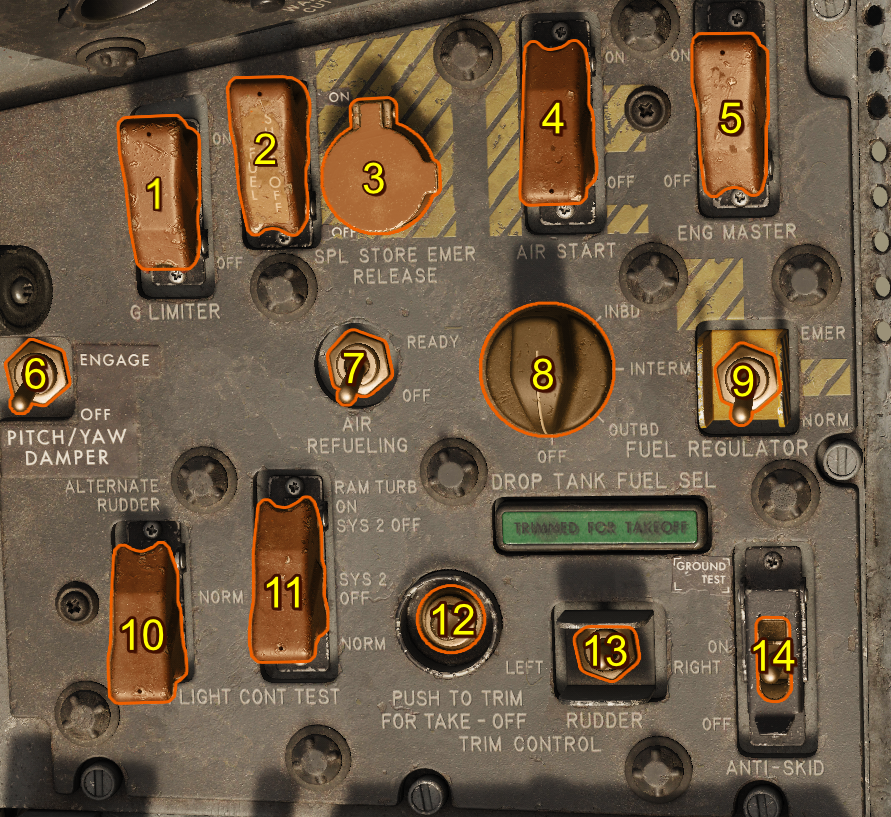
- G-Limiter Control Switch
- Fuel Shutoff Switch
- Special Store Emergency Jettison Button (INOP)
- Air Start Switch
- Engine Master Switch
- Pitch/Yaw Damper Switch
- Air Refueling Switch
- Drop Tank Fuel Selector
- Fuel Regulator Switch
- Alternate Rudder Switch
- Flight Control Hydraulic System Test Switch
- Takeoff Trim Button
- Rudder Trim Switch
- Anti-Skid Switch
Landing Gear Control Panel
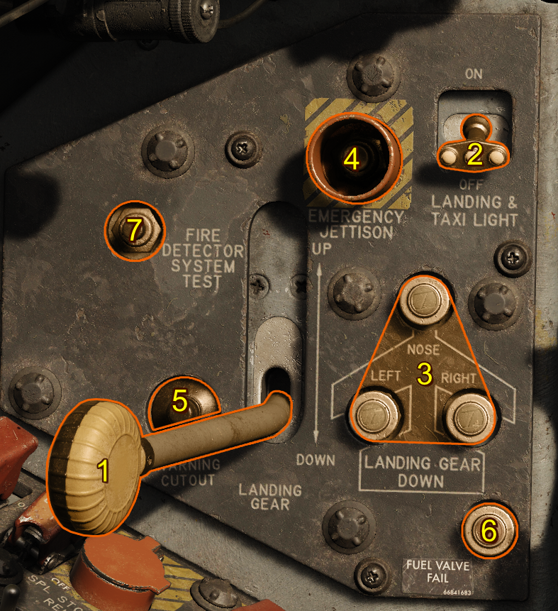
- Landing Gear Handle
- Landing/Taxi Light Switch
- Landing Gear Indicator
- Emergency Jettison Button
- Landing Gear Warning Cutout
- Fuel System Shutoff Valve Fail Light
- Fire Detector System Test
Landing Gear Handle
Landing gear can't be retracted while the aircraft has has weight on the wheel.
| Selection | Description |
|---|---|
| UP | Retract landing gear |
| DOWN | Extend landing gear |
Landing/Taxi Light Switch
Illuminates the Landing/Taxi lights. When the aircraft has weight on wheels, the lights extend farther, providing properly directed beams for taxi.
Landing Gear Indicator
These three lights illuminate when the landing gear assemblies fully extended in the down and locked position.
Emergency Jettison Button
Pressing and holding this button jettisons all ordinance after a timed delay, regardless of the position of the Bomb Arm Switch and Station Release Selection Switches.
Landing Gear Warning Cutout
Suppresses the landing gear audio warning signal when:
- Landing gear is not down and locked
- Altitude is less than 10,000 feet
- Airspeed is less than 205 (±5) KIAS
- Throttle is retarded below 85% RPM
Fire Detector System Test
Tests the continuity of the red fire and overheat-warning system on the instrument panel.
Reference Fire and Overheat Warning Lights
Arresting Hook Release Button
Press to release the arresting hook. Once the arresting hook is released, the ground crew must reset it.
Canopy Switch
This three-position switch is spring-loaded to rest in the center position when not held.
| Selection | Description |
|---|---|
| OPEN | Actuates the canopy motor toward the fully open position. |
| OFF (center) | Disengages the canopy motor. |
| CLOSED | Actuates the canopy motor toward the fully closed position. |
Cockpit Right Side
This section covers items on the right side of the cockpit. Specifics are covered in other sections about a given panel's related systems.

- Indicator and Caution Light Panel
- Standby Instrument Inverter Switch
- Navigation Computer
- Electrical Control Panel
- Oxygen Regulator Control Panel
- Liquid Oxygen Quantity Gauge
- IFF/SIF Control Panel
- Canopy Alternate Emergency Jettison Handle
- Radio Compass Control Panel
- Tacan Control Panel
- J-4 Compass Control Panel
- Exterior Floodlight Anti-collision Light Panel
- Lighting Control Panel
- Cockpit Utility Light
- Flight Control Emergency Hydraulic Pump Lever
- Canopy Internal Manual Emergency Release Handle
- Air Conditioning Control Panel
- Map Case
- Interphone Switch
- DC Fuel Boost Pump Test Switch
- Cockpit Pressure Altitude Indicator
- Circuit Breaker Panel
- Circuit Breaker Panel
Canopy Alternate Emergency Jettison Handle
The Canopy Alternate Emergency Jettison Handle is a T-shaped handle that jettisons the canopy without arming the seat catapult. The spring clip over the top must be released before the handle can be pulled.
Canopy Internal Manual Emergency Release Handle
The Canopy Internal Manual Emergency Release Handle unlocks and open the canopy manually when the aircraft is on the ground.
Cockpit Utility Light
The Cockpit Utility Light can be used in the event of an electrical failure at night.
Map Case
The Map Case stores maps, charts, and literature used in flight.
Interphone Switch
This spring-loaded switch allows direct communication to the ground crew and chief during preflight or postflight operations.
Above the Glare Shield
This section covers general items on the above the glare shield in the cockpit. More specific items are covered elsewhere.

- RHAW Vector Indicator and Control Panel
- Drag Chute Handle
- A-4 Gunsight
- Status Display Lights
- Wet Magnetic Compass
Wet Magnetic Compass
Although not necessarily a primary flight instrument, the wet magnetic compass can be used during system failures that degrade the heading indicators operation.
In the northern hemisphere, when turning the aircraft north and lead turning towards north, the compass lags. In the southern hemisphere, opposite behavior occurs. For accelerations in the northmen hemisphere, the compass turns north. In the southern hemisphere, the compass turns south. The opposite is true for decelerations.
The compass card can tilt slightly, but if the compass is not perfectly level with the magnetic field of earth, error is introduced. Some small amuont of misalignment error is always a factor in readings.
Drag Chute Handle
Deploys the drag chute when pulled. To release the drag chute, twist the handle until it's in the vertical position. After the drag chute is release, you can simply stow the handle.
You can release the drag chute early by rotating it fully.
The drag chute is repacked when the ground crew rearms the aircraft.
Indicator, Caution, and Warning Lights
Indicator, caution, and warning lights are placed throughout the cockpit in order to notify the pilot of the status of systems. Each category has a different meaning. Nearly all aircraft cockpit lights are powered by the primary bus.
| Category | Meaning | Color |
|---|---|---|
| Indicator | Safe operation status | Green |
| Caution | Possible need for corrective action, not time sensitive | Yellow |
| Warning | Requires immediate action, time sensitive | Red |
The three-position indicator light dimmer switch controls the brightness of the indicator, caution, and warning lights when the instrument panel lights are on. The in-flight control tester panel has its own integral brightness control.
Note
The indicator light test switch changes the indicator lights to bright when released. To dim the indicator lights after using the indicator light test switch, move the indicator light dimmer switch to BRIGHT, then DIM, and release to the center OFF position.
Indicator, Caution, and Warning Light Panel

| Light | Category | Cause |
|---|---|---|
| GUIDE VANE ANTI-ICE ON | Caution | The ice detector unit in the engine guide vane has detected ice or the guide vane anti-ice switch is on |
| ANTI-SKID OFF | Caution | The anti-skid switch is off or the system has failed |
| HEAT & VENT OVERHEATED | Caution | |
| ENG OIL OVERHEATED | Caution | Engine oil temperature is higher than 127°C (260°F) |
| EMER FUEL REG ON | Caution | Fuel flow is being scheduled by the emergency fuel regulator |
| FLIGHT SYS FAIL | Caution | One or both flight control hydraulic systems have failed (system 1 or 2) |
| INST A.C. POWER OFF | Caution | AC Instrument Buses are not Receiving sufficient electrical power |
| A.C. GENERATOR OFF | Caution | AC generator is off the line |
| D.C. GENERATOR OFF | Caution | DC generator is off the line |
| EQUIP AIR OVERHEAT | Caution | The aft electronic equipment compartment has overheated\n Indicates possible failure of the equipment cooling or compartment turbine, failure of the turbine control system, or the ram air is not cooling the compartment |
| SEL. DROP TANK EMPTY | Indicator | selected drop tanks are empty |
| AIR REFUELING READY | Indicator | Air refueling switch is in the ready position, does not indicate that all components in the system are operational |
Indicator Light Test Circuit
The indicator light test circuit is a means of merely testing the integrity and operation of the bulbs. All indicator, caution, and warning lights illuminate simultaneously to exclude the engine compartment fire FIRE ENG COMP and overheat OVERHEAT ENG BURN warning lights, of which have a separate test circuit. All lights in the test circuit are powered by the primary bus.
Master Caution Light
The master caution light indicated certain indicator or caution lights have illuminated. The master caution light must be put out in order to not inhibit the illumination of additional lights. To extinguish the master caution light, the pilot must press the respective indicator or caution light that caused the master caution to become illuminated.
Note
Illumination of the following lights do not illuminate the master caution light:
- TRIMMED FOR TAKEOFF
- FIRE ENG COMP and OVERHEAT ENG BURN
- CANOPY NOT LOCKED
- SEL. DROP TANK EMPTY
- AIR REFUELING READY
- Ignition-on
- Landing gear warning light
Other
| Light | Category | Cause |
|---|---|---|
| CANOPY NOT LOCKED | Warning | The canopy is not fully closed and locked. |
| FIRE ENG COMP | Warning | An overheat or fire has been detected in the forward engine compartment or the fire system is being tested. |
| OVERHEAT ENG BURN | Warning | An overheat or fire has been detected in the aft engine compartment or the fire system is being tested. |
| TRIMMED FOR TAKEOFF | Indicator | The aircraft is trimmed for take off (260 KIAS condition). |
Stick and Throttle
This section covers basic controls of the stick and throttle, for more in depth controls visit the respective system's section.
Stick
The flight stick is mechanically connected to the aircraft's hydraulic systems for the aileron and horizontal stabilizer hydraulic actuators.

- Damper Emergency Disconnect Switch Lever
- Nose Wheel Steering Button
- Trigger
- Radar Reject Button
- Pickle Button
- Trim Hat
Note
Hide the flight stick by clicking the base.
Trim Hat
Actuates the lateral and longitudinal trim servos.
Nose Wheel Steering
The nose wheel steering button is located near your pinky finger on the flight stick. Pressing the button engages the nose wheel steering drops the mechanical link into the nose wheel assembly. Pressing it again disengages the system.
Caution
If the nose wheel is not currently aligned with the mechanical linkage, move the linkage to the current nose wheel rotation by applying the rudder pedals in the desired direction until the system connects.
Trigger and Bomb Button
The trigger and bomb buttons are used to release weapons. Specifically, the triggers used for air-to-air missiles and guns and the bomb button is used to release air-to-ground ordnance.
Note
The trigger two stages. The first stage activates the Gun Camera. The second stage fires armed guns.
Throttle
Mechanically controls fuel flow to the engine. The engine fuel control system then delivers and regulates fuel.

- Throttle Friction Lever
- Speed Brake Switch
- Sight Electrical Caging Button and LABS Vertical Gyro Caging Button
- Microphone Button
Throttle Friction Lever
Adjusts how much friction the throttle has. Moving the lever forward increases the friction on the throttle.
Speed Brake Switch
Actuates the speed brake. It has 3 positions:
| Selection | Description |
|---|---|
| OUT | Deploys the speed brake. |
| OFF | Stops all movement of the speed brake. |
| IN | Retracts the speed brake. |
Sight Electrical Caging Button and LABS Vertical Gyro Caging Button
Press to stabilize the sight gyro reticle on the A-4 Gunsight image by caging the sight gyros. This button also serves as the LABS vertical gyro caging button.
Microphone Button
The microphone button is a push-to-talk actuation that broadcasts input from the headset microphone using the aircraft's radio transmitter.
Ejection Seat
Ejection can be initiated at any airspeed or attitude. The ballistic rocket ejection seat catapult provides the zero-altitude ejection capability, and a minimum airspeed and additional vertical stabilizer clearance during ejection of speeds up to Mach 1.

- Canopy Safety Pin
- Seat Safety Pin
- Ejection Seat Hand Grip
- Seat Height Position Switch
- Arm Rest
- Arm Rest
- Shoulder Harness Inertia Reel Lock Lever (INOP)
- Ejection Seat Hand Grip
Canopy and Seat Safety Pins
Under the right knee, the ejection seat is fitted with a combined canopy and seat safety pin. Remove the pin before flight to enable seat ejection.
A second canopy jettison pin is located higher, near the right knee. Remove this pin to arm the canopy ejection system.
Seat Height Position
This switch provides vertical positioning of the ejection seat. Adjust the seat to obtain proper eye position relative to the gunsight and instrument panel for normal flight, air-to-air refueling, and landing.
Ejection Seat Hand Grips
The ejection seat is equipped with two ejection handgrips, located on each side of the seat bucket. The handgrips are mechanically interconnected. Pulling either handgrip or both initiates the ejection sequence. To prevent accidental ejection, each handgrips is fitted with a handgrip lock lever.
Armrest
Each armrest has an independent release lever. Pushing the lever raises or lowers the armrest for pilot comfort and cockpit access.
Safety Pin Stowage Container
A pin bag is located over the pilot's left shoulder. After landing, click on the bag to retrieve the pins and return them to their original positions, diabling the aircraft's ejection systems.

Ended: Cockpit
DCS ↵
Checklist
Usage
The checklist can by default be opened with LShift + C.
Procedures

This page displays the procedures split into their different categories. Clicking on a procedure navigates there.
Procedure Page

This is an example showing the procedure page with some procedures already completed.
Checklist Button

This acts as a home button navigating to the procedures page.
Navigation Bar

The navigation bar shows the current procedure in the centre and the previous (left) and next (right) procedures either side. The next and previous procedures can be clicked to navigate to them.
Show Me

The show me button highlights the current item in the cockpit.
Checklist Detail

This toggles between the three types of detail.
| Detail | Description |
|---|---|
| Mandatory | Required to complete the current checklist procedure. |
| Abbreviated | Includes checks that would be completed in reality but can be also checked in game. |
| Realistic | Includes checks that would be completed in reality but are not possible to check in game: harness tight for example. |
Advance Checklist Command
Advance checklist command is used to manually check items which are not automatically checked or to bypass an item. The advance checklist command manually checks the highest unchecked item (current item) on the checklist. Once all items are checked, use the advance checklist command to move on to the next procedure. If there is no next procedure, the advance checklist command does nothing.
Customizing the Checklist
The checklist structure is made from a json file listing the procedures and categories. When a checklist.json is provided in C:/users/<you username>/Saved Games/DCS: F-100D this custom checklist is used. As a starting point you can copy the built-in checklist which is found DCS World/Mods/Aircraft/f-100d/checklist/default.json.
If this checklist fails to load because of a syntax error then that error is reported in your DCS log located in C:/users/<you username>/Saved Games/DCS/Logs/dcs.log.
Here's an example error:
ERROR F100 (Main): [Checklist Load Error]: [json.exception.parse_error.101] parse error at line 26, column 35: syntax error while parsing object - unexpected string literal; expected '}'
The general file structure for checklist.json is as follows.
[ // list of categories
{ // category
"name" : "your category name 1",
"procedures" : [
{ // procedure
"name" : "your procedure name 1",
"items" : [
// list of items
]
}
]
}
]
There can be any number of categories, any number of procedures in each category and any number of items in each procedure. The structure of an item is shown below.
{
"text" : "Item to be set",
"value" : "State pilot should set: On or Off etc",
"priority" : 1, // (optional) 1,2,3 for mandatory, abbreviated, realistic respectively. With this key/value omitted the priority defaults to 1.
"clickable" : "PNT_FLAP_SELECT", // (optional) the clickable point for show me, for how to find these see below.
"condition" : 0, // (optional) either a number or string, see the conditions section
"once" : true // (optional) applies to only conditions see conditions section
}
Finding Clickables
The easiest way to find clickables is to use a tool to inspect the cockpit model known as model viewer. This can be found in the DCS install files. Running DCS World/bin/ModelViewer2.exe and then File >> Load Model, the F-100D cockpit model can be found DCS World/Mods/Aircraft/f-100d/cockpit/shape/cockpit_f100.edm.
Once loaded the connectors must be displayed.

This displays all the connectors on each switch. Hovering your mouse of the switch for which you wish to add a condition then displays its connector name. This is the name to be used in the "clickable" entry in the item.
Conditions
Conditions check if the current item has been completed. Once a condition is completed it is marked as completed by being stricken through on the checklist.
The condition entry can either be a number (integer) or a string. When the condition is a number
In the event of failure for either method of condition due to incorrect configuration the condition remains false and must be manually checked.
Number (Integer)
This represents the position of the switch. There must be a corresponding correct clickable for this to function. The position of any switch is it's integer position counted from its minimum value (usually fully aft, down, or anti-clockwise). Exceptions to this rule exist, but this should work for most switches.
An example is shown below.

| Position | Condition |
|---|---|
| OFF | 0 |
| SIGHT RADAR | 1 |
| MANUAL | 2 |
| LABS | 3 |
| LABS ALT | 4 |
The conditions can easily tested by seeing at which position the checklist automatically checks off your item, this can then be used to confirm your index is correct.
String
These are pre-programmed special conditions that can be used. All these conditions are shown below.
"cartridge_installed""engine_running""engine_spooling""air_connected""air_applied""chocks_removed"
Once
There are two methods of condition checking, the default method always checks the conditions no matter the current item in the checklist. If once is set to true then the condition is only checked when this item is the current item. This is useful for items which must happen once and then are reset. An example is the starter cartridge.
| Item | State |
|---|---|
| Starter Cartridge | Install |
| Engine Master Switch | On |
| Start and Ignition | Press Momentarily |
The cartridge is burned when the ignition button is pressed so if we checked it continuously then it would uncheck itself. So we add the "once" : true key-value pair to this item. The same applies to the Start and Ignition button.
Special Options
Various special options have been added for user quality of life and customization. This section explains each special option in depth.
These options are located in the open the DCS options from the main menu, open the SPECIAL tab, then select the F-100D from the left column.
Gameplay
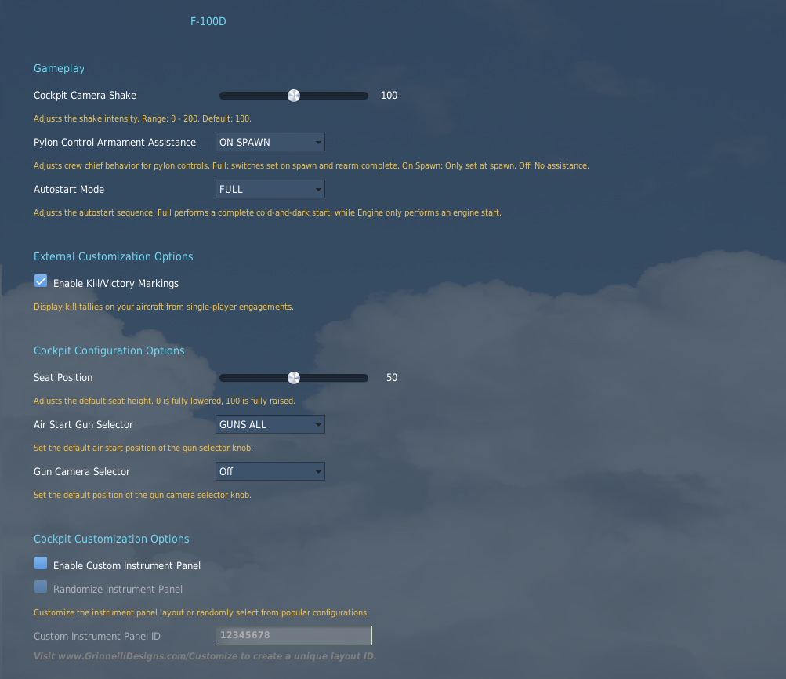
Cockpit Camera Shake
The cockpit camera shake can be adjusted on this slider as an overall multiplier to global cockpit camera shake.
Pylon Control Armament Assistance
This decides how the pylon loading control panel is setup.
| Setting | Pylon Loading Assistance |
|---|---|
| OFF | None—up to pilot |
| ON SPAWN | Set automatically on spawn. After rearming it is up to the pilot to set |
| FULL | Set automatically on spawn and after rearming complete. |
Autostart Mode
| Setting | Startup |
|---|---|
| FULL | Opts out of any auto start assistance for a complete cold-and-dark start. |
| ENGINE ONLY | sets all other switches, knobs, and settings for start; thus, the engine is the only required item for a complete start. |
External Customization Options
Victory Kill Markings
Enables or disables aircraft victory kill markings on the side of the nose portion of the fuselage account (currently) for single player air-to-air and air-to-ground kills.
Cockpit Configuration Options
Seat Position
Adjusting this slide moves the default seat height (and viewpoint). 0 is fully lowered, and 100 is fully raised.
Air Start Gun Selector
Adjusts the default setting of the Gun Selector Knob.
Gun Camera Selector
Sets the default position of the Gun Camera Selector Knob.
Cockpit Customization Options
Sets dynamic or custom instrument panel gauge positions.
If you enable the Custom Instrument Panel, you can randomize between known historical layouts, or enter your own custom panel ID code using the Grinnelli Designs F-100D Dash Creator.
Gun Camera Settings
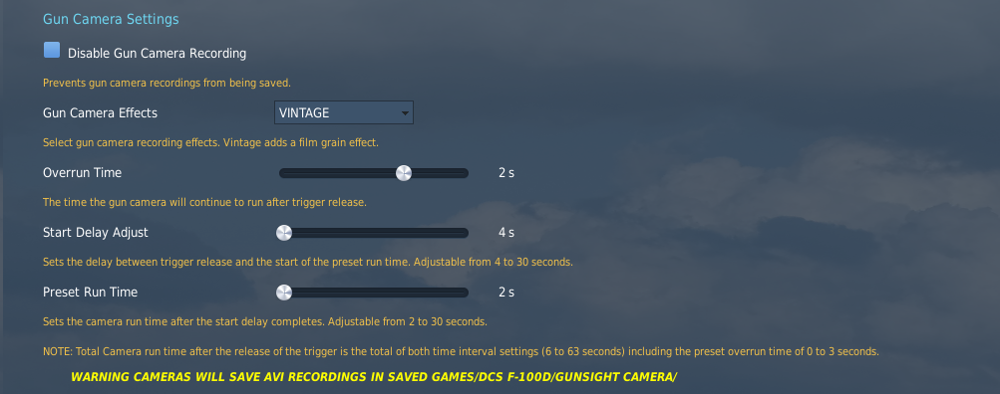
Disable Gun Camera Recording
Unchecking the box disables gun camera recording, preventing video file generation.
Gun Camera Effects
Adjists post-processing effects applied to gun camera recording video files.
Overrun Time
Adjusts how long the gun camera records after trigger press, from 0-3 seconds.
Start Delay Adjust
Adjusts the time between trigger release and the start of the preset run time, from 4-30 seconds.
Preset Run Time
Adjusts the run time of the gun camera after start delay, from 2–30 seconds.
Note
Total camera run time after the release of the trigger is the total of both time interval settings (6-63 seconds) including the preset overrun time of 0-3 seconds.
Warning
AVI video files are located in %userprofile%/Saved Games/DCS: F-100D in the respective folder for the camera.
Strike Camera Settings
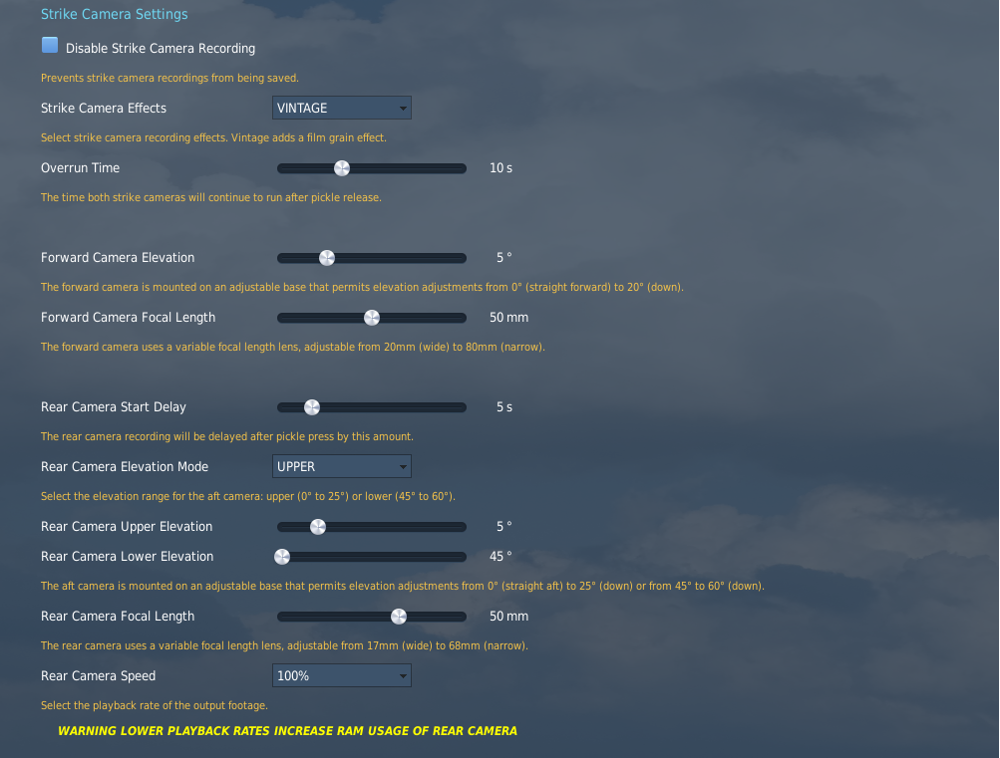
Disable Strike Camera Recording
Unchecking the box disables strike camera recording, preventing video file generation.
Strike Camera Effects
Adjusts post-processing effects applied to strike camera recording video files.
Overrun Time
Adjusts how long the strike cameras record after trigger press, from 0-3 seconds.
Forward Camera Elevation
The forward camera elevation can be adjusted from 0-20° down.
Forward Camera Focal Length
The forward camera uses a variable focal length lens, adjustable from 20mm (wide)-80mm (narrow).
Rear Camera Start Delay
The delay of the start of the rear camera recording after pickle press.
Rear Camera Elevation Mode
The rear camera elevation can be adjusted from 0-25° for the upper range, and 45–60° for the lower range.
Rear Camera Upper Elevation
Change the camera elevation from 0-25° down.
Rear Camera Lower Elevation
Change the camera elevation from 45–60° down.
Rear Camera Focal Length
The rear camera uses a variable focal length lens, adjustable from 17mm (wide)-68mm (narrow).
Rear Camera Speed
Adjusts playback rate of the output footage. 100% is real-time.
Warning
Lower playback rates increase RAM usage of rear camera.
Parameters
Parameters can be used by DCS missions and plugins to read the internal state of the aircraft.
| Parameter | Description |
|---|---|
| TACAN_CHANNEL | Number of the TACAN channel (X-channels only). |
| COMM_FREQ | Frequency of the UHF Radio in Hz |
| RADIO_COMPASS_FREQ | Frequency of the AN/ARN-6 Radio Compass in Hz. |
| AFTERBURNER_STATE | Afterburner throttle detent position: (0) Unlit; (1) Lit (Ignition failures failure are not indicated.) |
| ENGINE_RPM | 0-100, engine RPM in %. |
| FLAP_STATE | 0-1, average position: (0) Flaps retracted; (1) Flaps fully extended |
| GEAR_STATE | 0-1, average position: (0) Gear retracted; (1) Gear extended |
| TRANSPONDER_CODE | Transponder Code given for Mode 3 code given as a number. If the IFF is unable to respond (off or in standby), the value is 0. |
| GUN_MISSILE_SWITCH | Position of the Gun/Missile Switch with positions: (0) MISSILES; (1) SAFE; (2)_UPPER; (3)ALL; (4) LWR; (5)_ POD |
| MODE_SELECT_SWITCH | Position of the Mode Selector with positions: (0) OFF; (1) SIGHT & RADAR; (2) MANUAL; (3) LABS; (4) LABS ALT; (5) LADD |
| ARMAMENT_SELECT_SWITCH | Position of Armament Selector with positions: (0) OFF; (1) RKTS; (2) BOMBS; (3) DISP; (4) NAPALM; (5) SPL STORES; (6) INOP/SHRIKE; (7) TANK JETT; (8) DISP JETT; (9) PYLON JETT |
Ended: DCS
Aircraft Systems ↵
Engine

The F-100D is fitted with the Pratt & Whitney J-57 turbojet engine featuring the J-57-P-21 and J-57-P-23 afterburner nozzles. The -21 was the legacy nozzle that suffered from extensive afterburner ignition issues, reliability, and efficiency problems. The -23 nozzle (originally produced for the F-102) fixed these issues.
At full military power, the J-57 produces apoproximately 10,200 pounds of thrust under standard conditions, and 16,000 pounds in maximum afterburner.
The F-100D Super Sabre requires external air to rotate the core in order to start the engine. Otherwise, pilots used a cartridge start mechanism to rotate the core at sufficient speeds without the use of external air.
Caution
Engine ignitors can be damaged damaged if operated continuously for more than 5 minutes. Reserve their use only during the time it takes to complete an engine start.
Indications
Monitor the engine's status by reading the following four gauges toward the bottom-right of the instrument panel:

Engine Pressure Ratio Gauge

The engine pressure ratio gauge shows the ratio between the turbine discharge pressure and the pitot pressure.
The gauge shows two adjustable values for takeoff and cruise pressure ratios. Pushing in and adjusting the knob adjusts the takeoff setting. Pulling out and adjusting the knob adjusts the cruise setting.
Note
The EPR gauge is powered by the main AC bus.
EPR Takeoff Index Settings
Set the takeoff indexer on the instrument based on the type of afterburner nozzle installed on the aircraft, and the external temperature as follows:
| -21 | -23 | °F | °C |
|---|---|---|---|
| 1.82 | 1.79 | 122 | 50 |
| 1.84 | 1.80 | 118 | 48 |
| 1.85 | 1.82 | 116 | 46 |
| 1.86 | 1.83 | 111 | 44 |
| 1.87 | 1.85 | 108 | 42 |
| 1.88 | 1.86 | 104 | 40 |
| 1.89 | 1.88 | 100 | 38 |
| 1.90 | 1.89 | 97 | 36 |
| 1.91 | 1.91 | 93 | 34 |
| 1.92 | 1.93 | 90 | 32 |
| 1.93 | 1.94 | 86 | 30 |
| 1.94 | 1.96 | 82 | 28 |
| 1.96 | 1.97 | 79 | 26 |
| 1.97 | 1.99 | 75 | 24 |
| 1.98 | 2.00 | 72 | 22 |
| 1.99 | 2.02 | 68 | 20 |
| 2.01 | 2.03 | 64 | 18 |
| 2.02 | 2.05 | 61 | 16 |
| 2.03 | 2.06 | 57 | 14 |
| 2.04 | 2.08 | 54 | 12 |
| 2.05 | 2.09 | 50 | 10 |
| 2.06 | 2.10 | 46 | 8 |
| 2.07 | 2.12 | 43 | 6 |
| 2.09 | 2.13 | 39 | 4 |
| 2.10 | 2.15 | 36 | 2 |
| 2.11 | 2.16 | 32 | 0 |
| 2.13 | 2.17 | 28 | −2 |
| 2.14 | 2.19 | 25 | −4 |
| 2.16 | 2.20 | 21 | −6 |
| 2.17 | 2.21 | 18 | −9 |
| 2.18 | 2.23 | 14 | −10 |
| 2.20 | 2.24 | 10 | −12 |
| 2.21 | 2.26 | 7 | −14 |
| 2.22 | 2.27 | 3 | −16 |
| 2.23 | 2.28 | 0 | −18 |
| 2.25 | 2.29 | −4 | −20 |
| 2.27 | 2.30 | −8 | −22 |
| 2.28 | 2.31 | −11 | −24 |
| 2.29 | 2.32 | −15 | −26 |
| 2.30 | 2.33 | −18 | −28 |
| 2.32 | 2.34 | −22 | −30 |
| 2.34 | 2.35 | −25 | −32 |
| 2.35 | 2.36 | −29 | −34 |
| 2.37 | 2.37 | −33 | −36 |
Tachometer (RPM)

The tachometer registers engine speed in percentage of approximate maximum RPM (9980) of the high-speed compressor rotor.
Note
The tachometer receives power from a tachometer generator and is therefore independent of the aircraft electrical system.
Oil Pressure Gauge

The oil pressure gauge indicates oil pump discharge pressure above the gear case pressure in pounds per square inch.
Note
Oil pressure tends to follow the throttle. This is normal, provided the pressure remains within the limits.
Note
This gauge is powered by the 26 V AC instrument bus.
Exhaust Gas Temperature (EGT) Gauge

The exhaust temperature gauge shows engine exhaust temperature in ° C.
Note
Exhaust temperatue gauge indications are self-generating type thermocouples, and don't need power from the electrical system.
Electrical System

Introduction
The F-100D features two mostly separated electrical systems:
- An AC System powered by the AC Generator or external power
- A DC System powered by the DC Generator
- Battery (or external) power
Each system is powered independently, but in the event of failures, it is possible to partially power a failed system using a functioning system.
DC System
The DC System normally receives power from the battery and DC generator. Alternatively, power can also be received externally.
DC Generator
The engine-driven DC generator provides power to the DC systems under normal operation.
Note
The DC generator connects at approximately 40% engine RPM.
Note
The DC generator only needs to be reset if an electrical fault causes it to trip off the line.
Battery Bus
The battery bus is connected directly to the battery, so that essential equipment powered by this bus is operable as long as battery power is available, regardless of battery switch position.
The battery is 24 Volt, 24 ampere hour battery. The DC Generator nominally outputs 28 Volts.
The battery bus is connected to the battery bus through the primary bus tie in relay. This relay is energized by the battery bus connecting the battery bus to the primary bus.
If there is insufficient power on the battery bus, the battery isn't connected, but if the primary bus is being energized from elsewhere (for example, the DC generator or external power), the battery bus can be kept energized. Turning the battery switch off under this condition disconnects the primary bus from the battery bus, and the battery won't be charged.
Primary Bus
Primary bus powers the aircraft's most essential equipment. It is energized by the battery bus when battery switch is ON, or energized by DC generator or external power. Energized by transformer-rectifier if DC generator fails.
Secondary Bus
Secondary bus powers less essential equipment. It is energized by primary bus when DC generator power, DC external power, or transformer-rectifier power is available to close the secondary bus tie-in relay, where then it is powered by the primary bus.
Tertiary Bus
Tertiary bus powers non-essential equipment. It is energized by the primary bus when external power or DC generator power is available to close bus tie-in relay, where then it is powered by the primary bus.
AC System
AC Generator
The engine-driven AC generator provides power to the AC systems under normal operation. The AC generator is driven by a constant speed drive powered by the engine.
Note
The constant speed drive takes up to a minute at idle power to come up to speed so that the AC generator can come on the line. To expedite this process the pilot can advance the throttle up to 72% (or until the generator comes online).
Note
The AC generator needs to be reset if an electrical fault causes it to trip off the line or the AC generator switch is placed into the off position.
Main Three-Phase AC Bus (115V)
Main three-phase AC bus powers essential equipment which demands AC power. Power is provided by the engine-driven AC generator.
AC Instrument Buses (115V and 26V)
There are two instrument buses which power vital instrument equipment. Due to their important these AC buses can both be powered by the DC primary bus using the standby instrument inverter
Controls and Indications
AC Load Meter
Current AC generator load as a percentage of its maximum load.

DC Load Meter
Current DC generator load as a percentage of its maximum load.

INST A.C. POWER OFF Light
Indicates when instrument AC buses are not receiving sufficient electrical power.

A.C. GENERATOR OFF
Indicates when the AC generator is off the line either because of insufficient drive RPM or a fault has tripped the generator.

D.C. GENERATOR OFF
Indicates when the DC generator is off the line either because of insufficient drive RPM or a fault has tripped the generator.

Standby Instrument Inverter
Transfers AC instrument bus power over to the standby instrument inverter. The is a small power interruption as the standby instrument inverter comes up to speed.

Hydraulic System
Introduction
The aircraft has three separate constant-pressure type hydraulic systems: utility, and two flight control systems. Each system is individually pressurized by a engine-driven hydraulic pump to 3,000 psi.
In the event of engine-driven pump failure, the secondary flight control system can be driven by a deployable Ram Air Turbine (RAT).
Utility System
This system has a 2.7-gallon reservoir pressurized by an engine pump. It supplies hydraulic power to the following:
- Rudder
- Landing gear and doors
- Wheel brakes
- Wing flaps
- Nose wheel steering
- Speed brake
- Automatic Flight Control System (AFCS)
- Gun and purge Door
- Ram Air Turbine Door
If system 1 pressure is too low to power the rudder, an automatic valve powers the rudder from the number 2 flight control system.
Emergency Flap Accumulator
If the utility hydraulic system or flap control fails, flaps can be lowered for landing using the emergency flap switch.
Warning
The Emergency Flap Accumulator has sufficient stored energy to lower the flaps only once.
Emergency Nose Wheel Accumulator
If the utility hydraulic system fails, the emergency gear release can drop the main gear by gravity. On its own, the nose gear cannot be dropped by gravity, so an emergency accumulator is provided to drop the nose gear.
Flight Controls 1 & 2 Systems
Two independent and simultaneously operating hydraulic systems (1 and 2) actuate the primary flight control surfaces. Each systems is powered by its own engine pump, supplying half the power demand of control surfaces.
Failure of one systems doesn't affect the other. In the event of a frozen engine or engine pump failure, the number 2 hydraulic pressure can be maintained by a deploying the Ram Air Turbine.
In the event of utility system failure, the number 2 system also provides power to the rudder.
The following items are powered by these systems:
| Item | Hydraulic System |
|---|---|
| Ailerons | 1 & 2 |
| Horizontal Stabilizer | 1 & 2 |
| Horizontal Stabilizer Trim | 2 |
| Rudder (in case of utility failure) | 2 |
Ram Air Turbine (RAT)
This acts as an emergency hydraulic pump for the number 2 system. If engine RPM drops below 40%, the centrifugal switch triggers the RAT deployment automatically, unless there is weight on the nose gear's wheel. The RAT can also be deployed manually using the lever.
If the RAT door is open, an audible warning tone plays in the headset, and the landing gear handle knob light illuminates.
If the pump is no longer needed, it must be shut down manually using the lever in the cockpit.
Utility hydraulic pressure is required to open the RAT, but in the event of of utility hydraulic failure, stored energy in the Ram Air Turbine door emergency accumulator is used.
You can test deployment of the Ram Air Turbine in flight with the flight control hydraulic system test switch.
Emergency Wheel Brake Pump
In the event of utility hydraulic pressure loss, an electrically-driven pump pressurizes wheel brake accumulators if the pressure drops below 750 psi. When the aircraft is cold and dark, if you depress the wheel brake, the pump can be checked for correct function by listening for its sound.
Controls and Indicators
Hydraulic Pressure Indicator and Knob

This knob and gauge indicate the pressure of the selected system.
Ram Air Turbine Door Lever
Deploys the Ram Air Turbine manually, and automatically actuates if it deploys automatically.
Flight Control Hydraulic System Test Switch
Holding this switch at the SYS 2 OFF position closes the test valve ,removing hydraulic pressure for this system. Moving the switch to RAM TURB ON SYS 2 OFF removes hydraulic pressure from the number 2 system, and provide utility hydraulic power to the Ram Air Turbine, and opens the ram air turbine door lever.
After testing the lever, close the Ram Air Turbine Doors by moving the lever to the aft position.
Note
A nose gear load switch prevents the number 2 system from being shut off on the ground.
Caution
Since this test is to be carried out during flight: a pressure switch prevents the test valve from being actuated if the number 1 system pressure is lower than 650 psi, avoiding primary flight control power loss.
Rudder Hydraulic Test Switch
This spring-loaded switch tests if the hydraulic summing valve is functioning correctly for the rudder actuator, ensuring that even in the event of insufficient utility pressure, the rudder functions using the number 2 system pressure.
Hold the switch in the ALTERNATE RUDDER position to shut off utility pressure, then the rudder can be moved. Confirm rudder pressure rises from nominal pressure up to 3,000 psi, matching the pressure of the number 2 hydraulic system.
Emergency Speed Brake Dump Lever
In the event of utility hydraulics failure with the speed brake in the open position, retract the speed brake. Without hydraulic pressure, this isn't possible. The dump lever releases any hydraulic pressure, allowing the speed brake to be retracted by airflow.
Emergency Gear Release
In the event of hydralic faailur, this lever deploys landing gear by gravity. Nose gear is deployed using hydraulic pressure stored in the emergency nose wheel accumulator.
Warning
After this system is used, the aircraft must be repaired in order to reset this system.
Emergency Flap Switch
In the event of electrical flap control failure or utility hydraulic failure, this switch deploys wing flaps to the DOWN position.
Warning
There emergency flap accumulator energy stores are only sufficient to lower the flaps once.
Fuel System
Introduction
The fuel system includes three main tanks in the fuselage and a tank in each wing. Drop tanks can be installed on any of the six wing pylons.
A series of valves and float triggered pumps automatically balances fuel in the aircraft by. All fuel ends up in the forward fuselage tank where it is then passed to the engine through the manifold and a 1.6-gallon inverted flight tank which gives fuel for short periods of negative or zero g.
The aircraft has a single point pressure refueling system which allows for both ground and air-to-air refueling of all the aircraft's internal tanks. This system also has provisions for filling 275- and 335-gallon drop tanks on the intermediate pylons allowing for in-flight refueling on these tanks on intermediate pylons. Other tanks on other pylons cannot be refueled this way.
Fuel Tanks
There are 4 primary fuel tanks:
| Tank | Cells | Capacity (combined in lbs) | Description |
|---|---|---|---|
| Forward Fuselage | Upper, Centre Left, Centre Right, Lower | 2,912 | Engine Manifold primarily draws from this tank. |
| Intermediate Fuselage | Left, Right | 1,391 | These primarily feed into the forward fuselage however in case of transfer pump failure the right cell can directly feed the engine. |
| Aft Fuselage | Centre | 702 | This primarily feeds into the forward fuselage however in case of transfer pump failure the aft fuselage can gravity transfer to the intermediate fuselage tank. |
| Wing | Left, Right | 2,723 | These feed into forward fuselage by gravity and the scavenge pumps |
| External | Up to one per wing pylon | configuration dependent | These feed into the forward fuselage tank via bleed air pressure. Which pair of tanks feeding depends on the drop tank selector switch position. |

Inverted Flight Tank
The inverted flight tank is the direct feed to the engine. The inverted flight tank can be fed either from the manifold, which is inturn fed by the upper and lower forward fuselage tank, or the intermediate fuselage tank.
The geometry of this tank is designed such that when inverted there is still approximately 1.6 gallons of fuel for short periods of operation. The length of time of operation before flameout depends on the fuel flow as this directly impacts how quickly this inverted flight tank is exhausted.
The following table includes approximate values for afterburner and military thrust:
| Power Setting | Time Before Flameout (seconds) |
|---|---|
| Afterburner | 1.5 |
| Military | 6.0 |
Fuel Booster Pumps
There are a total of three boost pumps, all three are located in the forward tank. Two AC pumps are located in the upper cell and one DC pump is located in the lower cell. These all feed into the fuel supply manifold which can also be gravity fed from the lower forward tank cell.
Fuel Transfer (and Scavenge) Pumps
There are two transfer pumps. Normally the intermediate and aft tanks transfer to the forward tanks when the level of the forward tank drops. This is to maintain mass balance but also because the primary feed is in the forward tank.
In the event of transfer pump failure, it might not be possible to transfer all fuel from the intermediate and aft tanks as such the intermediate tank can directly feed the engine by gravity. The aft tank can also transfer using gravity to the intermediate tank for direct feed to the engine in this scenario.
Warning
When the afterburner is operating, fuel flow exceeds transfers from external and internal tanks to the forward tank. Monitor the forward fuel tank level and avoid engine flame-outs due to insufficient fuel.
Drop Tanks
Drop tanks can be mounted on any of the wing pylons. However only the 335- and 450-gallon tanks can be refueled when mounted on the intermediate pylons. The list of the available tanks is shown below.
| Tanks (gallon) | Pylons | Mid-Air Refuelable |
|---|---|---|
| 200 | All | No |
| 275 | Intermediate only | No |
| 335 | Intermediate only | Yes |
| 450 | Intermediate only | Yes |
Tanks are pressurized by the engine bleed air when drop tank selector switch is set to any position other than OFF. In the event of electrical failure the bleed air valves are normally open position allowing fuel transfer from all external tanks simultaneously.
Warning
When the afterburner is operating, fuel flow exceeds transfers from external and internal tanks to the forward tank. Monitor the forward fuel tank level and avoid engine flame-outs due to insufficient fuel.
Fuel System Shutoff Valve
The fuel shutoff valve is an electronically actuated valve which can be used to shut off fuel to the engine. In the event of valve failure the fuel system shutoff valve fail light illuminates.
Controls and Indicators
Drop Tank Selector Switch
This selects which external tanks are pressurized by the engine bleed air. In the event of electrical failure the bleed air valves are normally open position allowing fuel transfer from all external tanks simultaneously.
Drop Tank Empty Indicator Light
This indicates there is no longer any fuel pressure from the drop tanks. Because the external tank fuel line is shared with the internal wing tank scavenge pumps, this light extinguishes once the wing tanks begin to scavenge at approximately 4,000 pounds of fuel. This light illuminates again once wing tanks are empty (approximately 1,500 pounds of fuel remaining).
Fuel System Shutoff Valve Fail Light
This light illuminates if the fuel system shutoff valve is stuck as this could restrict fuel flow to the engine.
Air Refueling Switch
This de-energizes the transfer control valves for the internal wing and external fuel tanks, allowing the single point pressure refueling system to refuel these tanks correctly.
Warning
Do not position this to READY too soon as this prevents approximately 25 pounds per minute of fuel from being transferred from the internal wing tanks to the forward tank.
Air Refueling Indicator Light
This light simply indicates if the air refueling switch is in the ready position. It does not indicate if all the systems are functional.
Fuel Flow Indicator
The fuel flow indicator shows the rate of fuel flow from the fuel control unit to the engine in pounds per hour.
Warning
This gauge does not monitor fuel flow to the afterburner.
This gauge is powered by the 26 V AC instrument bus.
Fuel Boost Pump Light
This illuminates if fuel pressure to the engine is less than 5 psi, indicating a condition where one or more fuel boost pumps are non-functional.
Forward Fuel Quantity Gauge
Indicates total quantity of all forward fuselage tanks.
Total Fuel Quantity Gauge
Indicates total quantity of all internal tanks.
Environmental Control System

Introduction
The Environmental Control System is everything that keeps the cabin comfortable and pressurized for the pilot.
Controls

- Cockpit Pressure Selector Switch
- Console Airflow Lever
- Canopy and Windshield Defrost Lever
- IFF Antenna Selector Switch
- Cockpit Temperature Rheostat
- Cockpit Temperature Master Switch
- Marker Beacon Volume Knob (INOP)
Cockpit Pressure Selector Switch
The Cockpit Pressure Selector Switch has four positions:
| Selection | Description |
|---|---|
| RAM AIR ON | Main system shutoff valve closes, and the emergency ram air valve opens to admit ram air to the cockpit. |
| OFF | Closes the main system shutoff valve, the emergency ram-air valve, and the cockpit dump valve, and the cockpit pressure regulator is set to 2.75 psi. |
| 2.75 PSI | Main system shutoff valve opens to direct air to the cockpit, and air outlets and the emergency ram air valve closes. |
| 5.00 PSI | Main system shutoff valve opens to direct air to the cockpit, and air outlets and the emergency ram air valve closes. |
Note
The OFF position prevents rapid decompression of the cockpit.
Caution
Selecting *RAM AIR ON depressurizes the cockpit.
Cockpit Pressure Schedule
This figure describes how pressure scheduling works:

Console Airflow Lever
Controls the flow of air to the outlets along the console and to the outlet behind the seat. Moving the lever forward increases the airflow, and moving it aft reduces the airflow.
Canopy and Windshield Defrost Lever
Similaly to the Console Airflow Lever, this lever controls the distribution of heat to the canopy and windshield, preventing canopy fogging and condensation during descent.
IFF Antenna Selector Switch
The IFF Antenna Selector Switch has three position:
| Selection | Description |
|---|---|
| TOP | Use only the upper antenna. |
| BOTH | Use both upper and lower antenna. |
| BOTTOM | Use only the lower antenna. |
See also: ARN-72 Tacan
Cockpit Temperature Rheostat
Change the temperature of the cockpit when the Cockpit Temperature Master Switch is set to the AUTO position. It also has a small range that controls pilot suit temperature.
Cockpit Temperature Master Switch
The Cockpit Temperature Master Switch has four positions. Setting this switch to any position except OFF controls cockpit airflow temperature.
| Selection | Description |
|---|---|
| AUTO | Will automatically adjust the temperature of the cockpit. |
| OFF | Will turn the temperature control system off. |
| COLD | Will set the temperature of the cockpit to cool. |
| HOT | Will set the temperature of the cockpit to hot. |
Cockpit Pressure Altitude Indicator
Indicates cockpit pressure.

Oxygen System (MD-1 Oxygen Regulator)
Introduction
A pressure-breathing, diluter-demand oxygen regulator automatically mixes oxygen with ambient air in proportions that vary with altitude. Each time the pilot inhales, a measured quantity of this mixture is delivered. At higher altitudes, the regulator transitions to supplying oxygen at continuous positive pressure, with delivery pressure adjusting automatically to match cockpit altitude.
Controls

Flow Indicator
The flow indicator (blinker) consists of an oblong opening which shows black and white alternating during the breathing cycle.
Oxygen Supply Pressure Indicator
The oxygen supply pressure gauge shows oxygen pressure available to the regulator.
Emergency Lever
The emergency lever should be in the center position at all times, unless an unscheduled oxygen pressure increase is desired. Moving the lever to EMERGENCY provides continuous positive pressure to the mask. When the lever is held at TEST, oxygen at positive pressure is provided to test the mask for leaks.
Diluter Lever
The diluter lever should be at NORMAL, for normal oxygen use, or at the 100% position for emergency oxygen use. With the lever at NORMAL, the regulator supplies a mixture of air and oxygen up to approximately 30,000 feet which is equivalent to normal breathing at sea level.
Note
Beyond 30,000 feet, 100% oxygen is supplied on either setting. These operating characteristics are related to the cockpit altitude only.
Supply Lever
The supply lever is used to turn the regulator ON and OFF.
Oxygen Duration
- Normal—Diluter lever set to NORMAL
- 100%—Diluter lever set to 100%
- Emerg ( )—Diluter lever at 100%, oxygen emergency lever at the EMERGENCY position, and pressure suit used.
- Times are in hours.
- Liquid O₂ Quantity (L)—Each column heading shows remaining liquid oxygen capacity per crew member in liters.
- Emergency—In the event of depletion, descend immediately to a safe altitude not requiring supplemental oxygen.
- Oxygen regulator gauge pressure—70 psi
| Cockpit Altitude (ft) | 5 L Liquid O₂ | 4 L Liquid O₂ | 3 L Liquid O₂ | 2 L Liquid O₂ | 1 L Liquid O₂ | Below 1 L Liquid O₂ |
|---|---|---|---|---|---|---|
| 35,000 and above | Normal 31.4 / 100% 31.4 / Emerg (12.8) | Normal 25.2 / 100% 25.2 / Emerg (10.2) | Normal 18.9 / 100% 18.9 / Emerg (7.7) | Normal 12.6 / 100% 12.6 / Emerg (5.1) | Normal 6.3 / 100% 6.3 / Emerg (2.6) | – |
| 30,000 | Normal 23.3 / 100% 22.7 / Emerg (12.8) | Normal 18.7 / 100% 18.1 / Emerg (10.2) | Normal 14.0 / 100% 13.6 / Emerg (7.7) | Normal 9.3 / 100% 9.0 / Emerg (5.1) | Normal 4.7 / 100% 4.5 / Emerg (2.6) | – |
| 25,000 | Normal 22.0 / 100% 17.5 / Emerg (9.8) | Normal 17.6 / 100% 14.0 / Emerg (7.8) | Normal 13.2 / 100% 10.5 / Emerg (5.9) | Normal 8.8 / 100% 7.0 / Emerg (3.9) | Normal 4.4 / 100% 3.5 / Emerg (2.0) | – |
| 20,000 | Normal 25.0 / 100% 13.3 / Emerg (7.6) | Normal 20.0 / 100% 10.7 / Emerg (6.1) | Normal 15.0 / 100% 8.0 / Emerg (4.6) | Normal 10.0 / 100% 5.3 / Emerg (3.0) | Normal 5.0 / 100% 2.7 / Emerg (1.5) | – |
| 15,000 | Normal 30.2 / 100% 10.7 / Emerg (6.0) | Normal 24.2 / 100% 8.6 / Emerg (4.8) | Normal 18.1 / 100% 6.4 / Emerg (3.6) | Normal 12.1 / 100% 4.3 / Emerg (2.4) | Normal 6.0 / 100% 2.2 / Emerg (1.2) | – |
| 10,000 | Normal 30.2 / 100% 8.6 / Emerg (4.8) | Normal 24.2 / 100% 6.9 / Emerg (3.8) | Normal 18.1 / 100% 5.2 / Emerg (2.9) | Normal 12.1 / 100% 3.4 / Emerg (1.9) | Normal 6.0 / 100% 1.7 / Emerg (1.0) | – |
| 5,000 | Normal 30.2 / 100% 6.8 / Emerg (3.9) | Normal 24.2 / 100% 5.4 / Emerg (3.1) | Normal 18.1 / 100% 4.1 / Emerg (2.3) | Normal 12.1 / 100% 2.7 / Emerg (1.6) | Normal 6.0 / 100% 1.4 / Emerg (0.8) | – |
| 0 | Normal 30.2 / 100% 5.5 / Emerg (3.2) | Normal 24.2 / 100% 4.4 / Emerg (2.6) | Normal 18.1 / 100% 3.3 / Emerg (1.9) | Normal 12.1 / 100% 2.2 / Emerg (1.2) | Normal 6.0 / 100% 1.1 / Emerg (0.7) | — |
Liquid Oxygen Quantity Gauge

The liquid oxygen quantity gauge is located at the top of the right side console and indicates the total quantity of liquid oxygen in liters. The liquid oxygen is stored in an insulated "thermos-bottle" type converter storage tank that is located forward of the cockpit on the right side.
Lighting Control Panels
Exterior Lighting
A position light is on each wing tip, and two are in the trailing edge of the fuel vent outlet fairing above the rudder. The aircraft has two recognition lights, one on the upper fuselage and one on the lower fuselage. The aircraft also has two anti-collision or beacon lights, one on the upper fuselage and one on the lower fuselage.
The retractable landing-taxi lights are in the lower surface of the fuselage.The lights extend for use as landing lights until the weight of the aircraft is on the nose gear, then the lights extend farther to provide taxi lighting.
Some aircraft have a single floodlight in each wing. The lights face inboard and aft for illumination of the aft fuselage and empennage to facilitate visibility during night formation.
Controls

Exterior Flood Lights
The exterior flood lights controlled by this switch and can operate in bright, dim, or off. They are located on the top of the wing inboard of each wing fence illuminating aft.
Beacon Lights
This switch controls the beacon lights on the top and bottom of the fuselage and only operate in on or off.
Interior Lighting
Most instruments receive indirect lighting from individual fixtures of either the ring or the post type, while some instruments are integrally lighted. The position markings and names of the controls and switches on the consoles and instrument panel are lighted indirectly by edge lighting transmitted through the control panels. Direct lighting of the consoles and instrument panel is supplied by floodlights on the under surface of the instrument panel shroud and canopy sills. (The indirect lights and floodlights furnish conventional red light.)
Floodlighting can be reduced or completely closed off by turning a knob at the end of each lamp. The floodlights are adjustable, and can be directed toward any spot on the instrument panel. A thunderstorm light on each side of the cockpit provides intense white light to reduce the blinding effects of lightning.
A standard type G-4A utility light fits into a socket above the right console for general cockpit lighting. The utility light can be removed from its socket to light areas of the cockpit not normally lighted by other interior lights.
Controls

- Thunderstorm Lights Rheostat
- Instrument Lights Rheostat
- Console Lights Rheostat
- Position Lights Switch
- Position Lights Dimmer Switch
- Refueling Probe Light
- Indicator Light Test Switch
- Indicator Light Dimmer Switch
- Fuel Quantity and Magnetic Compass Light Switch
Thunderstorm Lights Rheostat
Controls two white thunderstorm lights powered by the primary bus.
Instrument Lights Rheostat
The outer position controls the flood light for the instrument panel. The inner position controls the indirect lights on the instruments themselves.
Console Lights Rheostat
The outer position controls the flood light for the side consoles. The inner position controls the console back lighting.
Position Lights Switch
This controls the illumination of the position and recognition lights. When flash is selected the position lights flash at a rate of 40 cycles per minute.
Position Lights Dimmer Switch
This controls the brilliance of the position and recognition lights.
Refueling Probe Light
Controls illumination of the refueling probe area. Used to assist in air refuelingoperations during low visibility conditions.
Indicator Light Test Switch
This switch can be used to test all indicator lights in the aircraft however when the switch is released from either position the dimming is reset to the bright position.
Indicator Light Dimmer Switch
This switch controls the dimming state for the indicator lights.
Fuel Quantity and Magnetic Compass Light Switch
Three position switch that illuminates the magnetic compass and the 335- or 450- gallon drop tank fuel quantity gauge.
Ended: Aircraft Systems
Navigation Systems ↵
Direction Gyro and Compass
Introduction
The direction gyro is used navigation, providing a stable heading reference when the aircraft is turning. This gyro is kept aligned to magnetic north through the use of a remote compass, located in the wing, which gradually aligns the direction gyro whenever the aircraft is not turning.
Components
Direction Gyro
This is a horizontal gyro, suspended tangent to the ground. In addition to the yaw axis the gyro can freely rotate along the pitch axis to remain tangent to the ground. This allows the direction gyro to keep a fixed heading in space.
The direction gyro drives the indications on the radio compass card:

and the heading indicator needle:

While the direction gyro can keep a fixed heading in space for short periods of time, over long time periods it is subject to different forms of drift. Below are the different forms of drift and their sources.
| Drift | Description | Northern Hemisphere Drift | Southern Hemisphere Drift |
|---|---|---|---|
| Earth | As the earth rotates depending on the latitude (north/south) the apparent direction of gyro drifts. This can be more clearly understood by considering a gyro very close to the north pole, the gyro remains pointed at a fixed angle in space irrespective of the earth rotation, as such the apparent direction drifts as the earth rotates. | increasing | decreasing |
| Latitude Nut | The earth rate drift can be effectively countered by an offset weight on the gyro, known as the latitude nut. This direction gyro does not have a latitude nut but instead is electronically corrected using the latitude knob allowing the pilot to adjust the latitude to keep the gyro accurate. | decreasing | increasing |
| Transport Wander | Similar to drift caused by the rotation of the earth, the aircraft can itself increase or decrease the rotation around the earth by flying east or west. Unlike drift from the earth's rotation there is no compensation for this error. | increasing (east) / decreasing (west) | decreasing (east) / increasing (west) |
| Random Wander | Due to imprecision in components and friction the gyro naturally precesses leading to an error of 1-3° per hour, there is also no way to correct for this drift. | random | random |
Slaving
Notably transport wander and random wander cannot be corrected. For this reason the direction gyro is used in conjunction with the remote compass so that each system can cover the other's weakness. The remote compass which is accurate on average over long timescales can be used to adjust the direction gyro back towards magnetic north an electric motor is used to precess the gyro towards the measured magnetic north. This is known as slaving the direction gyro to the magnetic compass. The modes are described below.
| Mode | Description | Slaving Rate |
|---|---|---|
| Direction Indicator | Decouples Direction Gyro from magnetic compass, resulting in no correction. | none |
| Slaving | Slowly slaves the Direction Gyro towards the magnetic compass when the aircraft has not been turning for at least 15 seconds. | 1°/minute |
| Fast-Slaving | Quickly slaves the Direction Gyro towards the magnetic compass when the aircraft has not been turning for at least 15 seconds. | up to 360°/minute |
Upon powering on or after the function selector switch is switched from DG to MAG the direction gyro enters fast slaving mode.
Warning
If fast-slaving is used when the aircraft is accelerating, turning or pitch attitudes beyond ±30° the direction gyro is slaved towards an erroneous magnetic compass heading.
Leveling
As the aircraft moves the gyro gradually topples, because it is pointed at a fixed point in space, leading to erroneous readings. Electrolytic switches are used to indicate when the gyro is out of level from gravity and a motor is used to precess the gyro back into the plane tangent to the ground.
Thermal Relay
A thermal relay is incorporated into the slaving circuit to control the fast-slave cycle. When the system is switched to the MAG position, the relay heats and closes after a brief delay, supplying high voltage to the slaving torque motor for rapid alignment of the gyro to magnetic north. After the fast-slave period ends, the relay cools and reopens, returning the system to its normal slaving rate. Because the relay must cool fully before another fast-slave cycle can occur, repeated switching between MAG and DG without sufficient cooling time can prevent proper slaving and result in heading errors.
Remote Compass Transmitter (J-4 Compass)
The remote compass is a magnetic field sensing device which detects the current magnetic north relative to the aircraft heading. As described above, this signal give an accurate indication of magnetic north on average, and thus can be used to slowly adjust (slave) the direction gyro towards magnetic north if it has incurred any errors.
The remote compass is pendulously suspended in fluid to damp excess movement. The remote compass pendulum is limited to 30° max angle in any direction. The result is that under normal operation the pendulum finds the level and give an accurate indication of the magnetic north.
Under turning, acceleration or pitch attitudes exceeding ±30° the pendulum is displaced from the correct value leading to erroneous heading indications for magnetic north. These errors can be observed by looking at the annunciator window to see how the measured error swings as the aircraft maneuvers.
Controls

- Synchronizer Control Knob
- Function Selector Switch
- Annunciator
- Latitude Correction Knob
- Hemisphere Switch
Synchronizer Control Knob
The synchronizer control knob is used to manually rotate the direction gyro during slaved or non-slaved operation for rapid orientation of the heading system.
Function Selector Switch
The function selector switch is a two-position switch marked MAG and DG. When the switch is in the MAG position, the signals from the remote compass transmitter are being used and the system functions as a slaved heading system. When the switch is in the DG position, the system is operated in non-slaved mode. Automatic fast slaving occurs for approximately 15 seconds after power is initially applied or whenever the function selector switch is moved from the MAG to DG and then back to the MAG position.
Note
Straight and level flight must be maintained for 15 seconds before attempting to fast-slave the compass indicator. This should permit the rate-switching gyro to restore the magnetic slaving signal to the compass system and allow the compass indicator to synchronize with the correct magnetic heading.
Caution
Two minutes must elapse when switching from the magnetic mode to the directional gyro mode and back to the magnetic mode. This allows the thermal relay that controls the fast-slave cycle to cool. If the relay is not cooled properly, the indicator can stop at an erroneous reading.
Annunciator
The annunciator indicates the error between the direction gyro and the current sensed magnetic north, the synchronizer control knob can be used for rapid alignment of the heading pointer during slaved operation.
Note
During turns or while accelerating the indication might be erroneous.
Latitude Correction Knob
The latitude correction knob provides a manual latitude input to the gyro system to counteract apparent drift due to the earth's rotation rate. This should be set to the aircraft’s approximate latitude.
Hemisphere Switch
The hemisphere switch is set by the ground crew and is not accessible to the pilot.
Normal Operation
- Confirm the hemisphere switch has been properly set by ground crew before flight.
- Turn the function selector switch to the MAG position for normal, slaved operation.
- Maintain straight and level flight for at least 15 seconds to allow the remote compass transmitter and gyro to stabilize.
- If the heading indication is incorrect, rotate the synchronizer switch in the direction indicated by the annunciator until the heading pointer aligns with the magnetic heading.
- Adjust the latitude correction knob to the aircraft's current latitude to minimize direction gyro drift.
- If switching between MAG and DG wait 2 minutes before returning the switch to MAG to ensure the thermal relay cools, and the fast-slave cycle completes correctly.
Ended: Navigation Systems
Radio Systems ↵
ARC-34 UHF Command Radio
Introduction
The onboard radio is powered by the aircraft’s primary bus, and enables voice communication within 225.0–399.9 MHz. Audio signals are processed through the AN/AIC-10 communication amplifier. The system features a control panel with access to 20 preset channels. Frequency selection can also be set manually.
This radio system employs two receivers:
- Primary receiver (responsible for standard communications)
- Guard receiver (fixed to a dedicated emergency frequency)
Note
Guard frequency is factory-set and cannot be changed without removing the remote-control unit from the aircraft. When selecting a new frequency, an automatic tuning mechanism synchronizes both the transmitter and receiver, completing the tuning cycle in approximately 4 seconds.
Controls

- Frequency Knobs
- Manual-Preset-Guard Sliding Selector
- Volume Control
- Preset Channel Selector Switch
- Function Switch
- Tone Button
- Frequency Card
Frequency Knobs
At the top of the radio panel, just below the four frequency display windows, are four small frequency selector knobs that set the freqency's 100s, 10s, 1s, and 0.1 increments, allowing manual selection of any of the 1,750 available frequencies in the 225.0–399.9 MHz range. 243.0 MHz is reserved as a guard channel.
Manual-Preset-Guard Sliding Selector
The sliding selector controls the method of command radio frequency selection. It is operated by sliding the control through a limited arc across the face of the panel. This control has three positions arranged so that when it is in any one position, the other two positions are masked by a semitransparent green glass:
| Selection | Description |
|---|---|
| MANUAL | The preset channel is deactivated and a mask is removed from in front of the four small windows across the top of the panel, revealing the numerals that make up an operating frequency set by the frequency knobs. |
| PRESET | Masks the 4 small windows above the frequency knobs and deactivates the manually selected frequency. This activates the 20 preset channels controlled by the channel selector switch. |
| GUARD | Tunes the transmitter and main receiver to the default guard frequency (243.0 MHz). |
Volume Control
The volume control regulates the sound level of the signal in the headset from both command receivers. Adequate control of volume is provided, but audio can't be silenced.
Preset Channel Selector Switch
The channel selector switch controls the selection of 20 preset frequencies by channel number. When rotated, channel numbers from 1 through 20 appear in the channel indicator window above the selector. This window is masked when the sliding selector control is placed in any position other than the PRESET position.
Function Switch
| Selection | Description |
|---|---|
| OFF | System inoperative |
| MAIN | Main receiver audible |
| BOTH | Guard and main receivers audible |
| ADF | Enables Automatic Direction Finding (ADF), and disconnects signals to the Radio Magnetic Indicator from the AN/ARN-6 Radio Compass |
Tone Button
When the command radio is operating, pressing and holding the tone button transmits a continuous tone to the set frequency, and interrupts reception. A side tone is audible in the headphones while the button is pressed. This feature can be used for direction-finding operations in conjunction with other aircraft and ground stations.
Frequency Card

The frequency card notes channel presets and their frequencies.
Default Preset Channels
| Preset Channel | Frequency (MHz) |
|---|---|
| Channel 1 | 225.0 |
| Channel 2 | 226.0 |
| Channel 3 | 227.0 |
| Channel 4 | 228.0 |
| Channel 5 | 229.0 |
| Channel 6 | 230.0 |
| Channel 7 | 231.0 |
| Channel 8 | 232.0 |
| Channel 9 | 233.0 |
| Channel 10 | 234.0 |
| Channel 11 | 235.0 |
| Channel 12 | 236.0 |
| Channel 13 | 237.0 |
| Channel 14 | 238.0 |
| Channel 15 | 239.0 |
| Channel 16 | 240.0 |
| Channel 17 | 241.0 |
| Channel 18 | 242.0 |
| Channel 19 | 243.0 |
| Channel 20 | 244.0 |
Note
You can set new presets for each F-100D unit in the DCS mission editor.
Remote Channel Indicator
The remote channel indicator is synchronized to the command radio control panel. When the radio is inoperative, its four display windows are blank. When the radio is in operation, they display information based on the selector control position:
| Selection | Description |
|---|---|
| PRESET | Preset command radio channel |
| MANUAL | Frequency (in MHz) of the selected channel |
| GUARD | GD |

Normal Operation
A complete operational check of the command radio is performed as follows:
- Before takeoff, check frequencies to be used against those listed on frequency card.
- Check settings of buttons on frequency control drum with frequency card. To do this, open door to which frequency card is attached. The channel number which corresponds to the preset frequency appears in a window at the left of the buttons. The frequency numbers of this channel are listed above the buttons.
- Check operation of transmitter and main receiver with sliding selector control in each position.
- Check operation of the guard receiver using the BOTH position of function switch.
- For initial channel selection, select a channel other than the one to be used until warm-up is completed, or after warm-up, switch to another channel and then back to the one desired. If the desired channel is selected before warm-up is completed, reduced performance due to mistuning can result.
- Adjust volume as desired.
- For manual selection of a frequency that is not included in the preset channels, moving sliding selector control to MANUAL. Use frequency knobs across top of panel to establish desired frequency. (The function switch must be at MAIN or BOTH for this operation.)
- To obtain transmission and reception of guard frequency only, move sliding selector control to GUARD, and turn function switch to MAIN. This prevent unequal or garbled reception by cutting out the guard receiver that operates when the function switch is at BOTH.
Emergency Operation
Sudden Loss of Transmission and Reception
If transmission or reception is unsatisfactory, adjust aircraft attitude or heading to improve line-of-sight alignment with the antenna.
Channel Selection After Engine Shutdown
If it is necessary to select another frequency channel, selection should be done as soon as possible after engine shutdown or engine failure, so that electrical power is available to complete selection.
Radio Not Operating
In the case of apparent failure of command radio, attempt operation in alternate positions of sliding selector control or alternate positions of function switch. Turn equipment off for several minutes; then turn function switch to type of operation desired. If the protective relay in the tuning mechanism was responsible, this action restores operation. Check the circuit breaker panel for tripped condition of the AN/AIC-10 amplifier.
AN/ARA-50 Automatic Direction Finding System
The AN/ARA-50 is an automatic direction-finding (ADF) and range-finding (TACAN) system for homing on UHF signals.
The system is powered by the primary bus, operates within the frequency range of the AN/ARC-34 command radio receiver, and is controlled through the function switch on the AN/ARC-34 control panel.
The system automatically indicates bearing of UHF signals, allowing the use of these frequencies for homing and rendezvous, including:
- Selected ground stations
- UHF radio-equipped aircraft
- Other UHF radio-equipped sources
The AN/ARA-5O system can be used with the AN/ARN-72 TACAN system to indicate range of the UHF signals emanating from a preselected aircraft.
A flush-type antenna is installed in the lower surface of the fuselage centerline recieves UHF signals for ADF bearings.
Note
When the AN/ARC-34 function switch is set to the ADF position, a changeover relay in the system disconnects the AN/ARN-6 radio compass signal that is sent to the radio magnetic indicator, and connects a directional signal from the AN/ARA-50 ADF system instead. Relative bearing is indicated by the No. 1 (ADF bearing) pointer on the indicator. Range indication is shown on the AN/ARN-72 TACAN range indicator.
Normal Operation
- With the command radio on and warmed up, select a common frequency with the ground station or aircraft to be homed on.
- Turn the AN/ARC-34 function switch to ADF, and the AN/ARN-72 TACAN function switch to A/A.
- The ADF bearing pointer moves in response to the UHF signal to indicate the bearing, and the TACAN range indicator indicates range to the ground station or to the aircraft.
Note
For normal UHF communication, the function switch should be returned to MAIN or BOTH. However, transmission is possible when the switch is at ADF.
AN/ARN-6 Radio Compass
Introduction
The ARN-6 Radio Compass is an Automatic Direction Finder (ADF) receiver covers a 100-1750 kHz frequency range, separated into four bands. It can be operated as a radio compass for navigation or used to monitor stations for weather reports and general communications reception.
The system employs a Beat Frequency Oscillator (BFO) in both Antenna and Loop modes. For signal conversion:
- Band 1 uses a fixed intermediate frequency of 455.9 kHz
- Bands 2–4 operate at 143.4 kHz
When the equipment is in compass mode, a 900 Hz tone oscillator modulates the CW signal as it passes through the IF stages, enabling precise direction-finding capability.
Controls

- CW/Voice Switch
- Band Selector Switch
- Loop L-R Switch
- Volume Control Knob
- Tunig Crank
- Function Switch
CW/Voice Switch
When the Voice-CW Switch is set to the CW position, a beat frequency oscillator is energized in the ANT and LOOP positions. With this oscillator, the modulated tone can be regulated with the tuning crank.
Band Selector Switch
This four-position switch sets the frequency band of the desired station.
Typical uses of each band are:
| Selection | Description |
|---|---|
| 100-200 kHz | Marine beacons |
| 200-410 kHz | Range and radio beacons |
| 410-850 kHz | Range and Navy radio beacons |
| 850-1750 kHz | Commercial broadcasts |
Loop L-R Switch
This switch operates only when the function switch is in the LOOP position. A rheostat control allows the bearing pointer to rotate at variable speeds.
Volume Control Knob
This control regulates the volume of the signal to the headset in the COMP position. In the ANT and LOOP positions, it controls the sensitivity of the set.
Tuning Crank
The tuning crank is used to tune the desired station for maximum signal strength.
Function Switch
This five-position switch controls the operation of the radio compass.
| Selection | Description |
|---|---|
| OFF | The receiver is inoperative. |
| COMP/ADF | The sensing and loop antennas and loop control circuits are selected, and the loop is automatically rotated so that the bearing pointer points to the station. |
| ANT | The sensing antenna is selected and the radio compass is used as a low-frequency receiver. |
| LOOP | The loop antenna is selected. Signal reception depends upon the position of the loop in relation to the station. |
| CONT | Inoperative in this simulated F-100D. |
Note
COMP/ADF is the only position that provides automatic volume control to maintain an even level of volume in the headset.
Normal Operation
-
Preflight —Ensure the Function Switch is set to OFF before applying power. —Verify that frequency cards and station lists are available for the area of operation.
-
Power On —Set the Function Switch to COMP/ADF. —Adjust the Volume Control Knob for comfortable headset audio level.
-
Tuning —Use the Band Selector Switch to select the appropriate frequency band for the desired station. —Rotate the Tuning Crank until maximum signal strength is obtained. —If receiving a CW station, place the CW/Voice Switch in CW and fine-tune with the crank for best tone.
-
Direction Finding —With the Function Switch in COMP/ADF, the loop antenna rotates automatically and the bearing pointer indicates the station’s direction. —For manual loop operation, set the Function Switch to LOOP and use the Loop L-R Switch to rotate the loop antenna.
-
Monitoring —To use the radio compass strictly as a receiver, set the Function Switch to ANT. —Adjust the Volume Control Knob as required for clear reception.
-
Shutdown —Return the Function Switch to OFF after use.
How a Beat Frequency Oscillator Works
A Beat Frequency Oscillator (BFO) is used in radio receivers to make continuous wave (CW) signals audible allowing the operator to accurately tune the receiver using the produced tone. When a CW signal is received, it consists of a steady carrier with no modulation. On its own, this signal produces no sound in the headset. The BFO solves this by introducing a locally generated frequency that is slightly offset from the received carrier.
Beating Frequencies
When the incoming carrier frequency and the BFO frequency are combined, the difference between them produces an audible tone in the audio range (typically 400–1000 Hz).
For example, if the station signal is at 300.0 kHz and the BFO is set to 300.9 kHz, the difference is 900 Hz which is audible as a steady tone.
Fine Tuning to Zero Beat
By carefully adjusting the tuning crank, the operator brings the receiver frequency closer to the exact frequency of the station carrier. As the difference between the two signals decreases, the tone lowers in pitch. When the received signal and BFO frequency become exactly equal, the tone disappears. This is called "zero beat".
Zero beating allows precise tuning to the station’s exact carrier frequency, which is essential for accurate direction finding and signal clarity.
ARN-72 TACAN Radio
Introduction
The Tactical Air Navigation (TACAN) system is a navigational aid, capable of providing bearing and slant range in nautical miles to a beacon.
The AN/ARN-72 TACAN features a powerful receiver-transmitter that functions as an airborne interrogator-responser to provide range information to other AN/ARN-72 TACAN equipped aircraft, and slant range to surface beacons.
Controls

Dual Rotary Switch—Outer Knob
Sets the first two digits (0-12) of the TACAN channel.
Dual Rotary Switch—Inner Knob
Sets the last digit (0-9) of the TACAN channel.
Volume Control Knob
Regulates the volume of the signal to the headset.
Power Switch
The power switch has four positions: OFF, REC, T/R, A/A.
| Selection | Description |
|---|---|
| OFF | Set is inoperative. |
| REC | Bearing information and station identification are available. |
| T/R | Bearing and distance information and station identification are available. |
| A/A | Bearing information and station identification are available. |
Tacan Range Indicator
Displays range to the station in nautical miles.

Seek Silence System
Introduction
The seek silence system permits either normal operation of the AN/ARC-34 command radio or decoding and coding of voice communications through the command radio. The decoding and coding capability prevents interception of messages when required. The system is powered by the primary bus.
Controls

Power Switch
When the power switch is moved from OFF to ON, power is applied to the seek silence system. The command radio can be operated in the normal manner with the power switch at OFF.
Function Switch
The function switch controls decoding and coding of command radio voice reception and transmission.
| Selection | Description |
|---|---|
| PLAIN | Normal operation of the command radio is available, and only uncoded reception and transmission possible. |
| C/RAD 1 | The system decodes incoming voice communications, and codes outgoing voice communications through the command radio. |
| C/RAD 2 (INOP) | Inoperable in this simulated F-100D. A mechanical stop prevents the switch from being moved to this position. |
Function Indicator Lights
Three dimmable, press-to-test type lights indicate the position selected by the function switch. With power applied to the system, the left (green) light comes on when the C/RAD 1 position of the function switch is selected; the middle (amber) light comes on when the PLAIN position of the function switch is selected.
The right (green) light is inoperative on these aircraft.
Retransmit Switch
This switch has no function in these aircraft. The switch should always be aft (OFF), regardless of the position of the function switch.
Zeroize Switch
The zeroize switch is guarded in the normal, aft OFF position. If it becomes necessary to eject, the guard should be raised and the switch held momentarily at the forward ON position. This zeros out the ground set codes in the seek silence system.
Normal Operation
- Turn the command radio ON. (Refer to Normal Operation of Command Radio.)
- Move the power switch to ON.
- Turn the function switch to PLAIN and establish communications through normal transmission procedures where possible.
- Turn the function switch to C/RAD 1 and listen for a steady unbroken tone in the headphones for approximately 2 seconds, followed by a double-pitched broken tone. If a prolonged steady tone is audible, it indicates an improper code setting or equipment malfunction, and the function switch should be turned to PLAIN and the power switch should be turned to OFF.
- Press and hold the mic button for several seconds, then release. The double-pitched broken tone should stop and no further sound is heard in the headphones. If the broken tone continues, press mic button again and hold for several seconds. If the broken tone continues after three such attempts to clear it, move the function switch to PLAIN and power switch to OFF.
- Press and hold the mic button. Wait ½–2 seconds for a single beep tone in the headphones. If beep tone is not heard, press mic button again and wait ½–2 seconds. If beep tone still is not heard, move power switch to OFF and then to ON, and repeat steps 5 and 6. If this fails to produce the beep tone, turn function switch to PLAIN and power switch to OFF.
- When beep tone is audible, begin transmission.
AN/APX-72 IFF AIMS System
Introduction
The AIMS system, which utilizes an AN/APX-72 receiver/transmitter (transponder), is used to automatically identify the aircraft in response to coded interrogations. Depending on interrogation mode, the reply is transmitted in modes 1, 2, 3/A, 4, or aircraft altitude reporting in mode C.
Controls

- Mode 4 Function Switch
- Master Switch
- Reply Light
- Test Light
- Mode 4 Indication Switch
- Mode Selection Switches
- Monitor-Radiation Test Switch
- Mode 4 Selector Switch
- Identification Switch
- Mode 1 Code Selectors
- Mode 3/A Code Selectors
Note
Settings on the IFF panel have no effect in DCS, but they can be exposed to external tools (for example, SRS).
Mode 4 Function Switch
The mode 4 CODE selector has the following positions: | Selection | Function |---------------|--------- | A | Code A | B | Code B | HOLD | Provide a means of retaining the mode 4 code for an additional flight (unless intentionally retained, the code is automatically returned to zero when power is removed after landing) | ZERO | Manually zeroize mode 4 code
Note
The mode 4 code selector knob must be pulled out to be moved to ZERO.
Master Switch
| Selection | Function |
|---|---|
| OFF | System off |
| STDBY | Powered on, in standby |
| NORM | Normal receiver sensetivity |
| LOW | Low receiver sensitivity |
| EMER | Activates emergency operation |
Note
The master switch knob must be pulled out to be moved to the EMER position.
Reply Light
When the transmitter-reciever responds properly to a mode 4 interrogation, the mode 4 REPLY light (green) illuminates.
Test Light
A green TEST light illuminates to indicate proper operation of each tested mode during the self-test, or when the (radiation) monitor switch is set to the MON (monitor) position.
Mode 4 Indication Switch
The audio/light switch has been moved from OFF to AUDIO or LIGHT (no audio signal provided).
Mode Selection Switches
The mode selection switches M-1, M-2, M-3/A, and M-C have three positions:
| Selection | Description |
|---|---|
| TEST (forward, momentary) | Initiates a self-test of the mode (provided the airborne test set is installed) |
| ON (center) | |
| OUT (aft) |
Monitor-Radiation Test Switch
The RAD TEST position is used by maintenance personnel during ground checks. In flight, leave this switch in the OFF position.
Mode 4 Selector Switch
Mode 4 is selected by placing the mode 4 enable switch from OUT to ON. Mode 4 codes are preset in the mode 4 computer prior to missions via a code changer key.
Identification Switch
The identifier switch enables transmission of identification of position (I/P) signals in response to interrogations in modes 1, 2, or 3/A, for 15–30 seconds. Transmission of I/P signals can be accomplished in three ways:
- When the switch is momentarily placed in the IDENT position
- When the switch is in the MIC position, and the microphone button is momentarily pressed
- When the switch is in the MIC position, and the command radio tone button is pressed (while command radio is on)
Mode 1 Code Selectors
The two mode 1 selectors provide 32 possible code selections.
Mode 3/A Code Selectors
The four mode 3/A selectors provide for 4096 code selections.
Normal Operation
Information forthcoming.
Ended: Radio Systems
Camera Systems ↵
Gun Camera
Introduction
The KB-3 gun camera on the A-4 gunsight, is an electrically-driven, magazine-type, 16 mm motion picture camera that photographs the reticle and target simultaneously.
Enable Gun Camera Recording
Enable recording in the F-100D Special Options menu.
Gun camera recordings are generated when the trigger's first detent is pressed. Recordings are saved in %userprofile%/Saved Games/DCS F-100D at the end of the mission.
Note
The gun camera and strike cameras only record when the view is in the cockpit.
Controls

Camera Selection Dial
On a real F-100D, this dial controlled for adjusting the camera under bright, hazy, or dull lighting conditions. In this simulated F-100D, it selects the cameras enabled for recording.
| Selection | Description |
|---|---|
| STRIKE | Enables strike camera recordings. |
| GUN | Enables gun camera recordings. |
| BOTH | Enables strike camera and gun camera recordings. |
Camera Timer
During missile firing, two adjustable timer control recording after the trigger is released.
| Interval | Length (seconds) | Description |
|---|---|---|
| START DELAY | 4–30 | Begins when the trigger is released. Set it using the large timer knob. |
| PRESET RUNTIME | 2–30 | Begins after the start delay ends. Set it using the the small timer knob. |
| OVERRUN | 0–3 | Begins after the runtime. |
Note
You can set default intervals in the F-100D Special Options menu.
Strike Camera
Introduction
Forward and aft photographic documentation of weapon impacts is provided by two motion-picture cameras installed in a non-jettisonable pod on the underside of the left wing, halfway between the fuselage and inboard wing station.

Enable Strike Camera Recording
Enable recording in the F-100D Special Options menu.

Add the strike camera pod in the mission editor, or have the ground crew perform an installation.
Strike camera recordings are generated when the bomb button is pressed. Recordings are saved in %userprofile%/Saved Games/DCS F-100D at the end of the mission.
Note
The gun camera and strike cameras only record when the view is in the cockpit.
Controls
Note
Additional camera controls related to the strike cameras are detailed in the gun camera section.
Strike Camera Settings Menu
When a strike camera is installed and weight is on the aircraft's wheels, you can use the Strike Camera Config Menu keybind to have the ground crew configure the strike cameras differently than the F-100D Special Options.
Type N-9 Forward Camera
The forward camera is a Type N-9, identical to the Type N-9 that is gun camera, except that the pod camera has a 20–80 mm variable focal length lens and a larger film magazine. The forward camera is mounted on an adjustable base that permits various elevation adjustments from zero (straight forward) to 20° down.
DBM-4C Aft Camera
The aft camera is a Type DBM-4C that is an electrically-driven, 16 mm internally loaded reel type camera. It has a 17–68 mm variable focal-length lens. The aft camera mount is adjustable to permit variations in elevation from 0 (directly aft)–25° down and from 45–60° down.
Ended: Camera Systems
Defensive Systems ↵
AN/APR-25 Radar Homing and Warning Receiver
Introduction
The AN/APR-25 is a Radar Warning and Homing Receiver. This is a piece of equipment which is designed to detect incoming radar and guidance signals and inform the pilot of any threats.

Theory of Operation
Theory of Radar
To understand the AN/APR-25 theory of operation it is important to understand the basics of radar.

The principle operation of radar is to send out a small burst of radiation (usually microwaves) in a direction and measure the time it takes to receive any reflected radiation. The speed of the radiation is known so the time can be used to estimate the distance to whatever reflected the radiation.
Carrier Frequency (Band)
The carrier frequency is the frequency of the radiation used for detection of objects. Each pulse contains a burst of these radiation at the carrier frequency.

The carrier frequency can be broadly categorized into bands. The bands for the AN/APR-25 are listed below (note these are similar to NATO bands but not exactly identical):
| BAND | Frequency (GHz) |
|---|---|
| I (India) | 7–11 |
| G (Golf) | 4.4–5.8 |
| E (Echo) | 2.4–3.6 |
Whenever radar is referred to be in any of these bands it simply means that the radiation it emits falls within the limits of the band.
Broadly different radars fall into different bands, Early Fan-Song A (SA-2) uses the Echo band, later Fan-Song E (SA-2) uses the Golf band.
Fighter radars are found in the India band (with a few ranging radar exceptions in the Echo band). Golf and Echo radars tend to be search or fire control radars.
Caution
There are no shortage of weapon system that defy these general conventions.
Pulse Repetition Frequency (PRF)
It is not enough to send one pulse of radiation as the energy contained within one pulse is very small so it can be difficult to detect. To improve this and to continually update what the radar is detecting the radar will send a stream of pulses. The rate at which these pulses are transmitted is known as the pulse repetition frequency.

The following table describes different types of pulse repetition frequency:
| Category | PRF Range (kHz) | Description |
|---|---|---|
| HIGH | 30–300+ | Primarily used in pulse doppler radars. Older pulse doppler radars only have high PRF modes. These saturate the AN/APR-25 and give a constant tone at the maximum frequency the AN/APR-25 audio generator can create. |
| MEDIUM | 3–30 | Used in modern pulse doppler radars. Medium pulse repetition frequencies are modulated this means the PRF is quickly varied giving them complex patterns. This can give complex digital sounding tones from the audio generator of the AN/APR-25. |
| LOW | <3 | Used in older pulse and moving target indicator radars. This frequency is also commonly used for ground mapping radars. Older radars use something called PRF jittering to reduce un-wanted clutter, this jitter is the random changing of the PRF and can result in a buzzing sound being heard in the AN/APR-25 audio. |
The AN/APR-25 was only designed to deal with Low PRF threats and thus only these can be correctly categorized. However because of the multiple frequencies used in medium PRF beat frequencies are created which can be heard in the low PRF range. High PRF radars have no such complexity and therefore they simply max the frequency of the AN/APR-25 audio generator.
Equipment
Antennas
The AN/APR-25 uses four antennas to detect incoming radiation. There are two antennas on the nose to detect incoming radiation from the front half and two antennas on the tail to detect incoming radiation from the rear half.
The four antennas are angled at 45°.
There are two antennas on the nose:

and two antennas on the tail:

Each antenna covers approximately a 90° cone. The relative strength between the antennas can be used to determine threat detection. Due to the antennas being fixed to the aircraft as the aircraft rolls and pitches the relative direction of the radiation will change and the apparent azimuth on the scope will change also.
Amplifiers
Each antenna routes to three amplifiers—one for each band that the AN/APR-25 detects. The amplifiers increase the signal to a usable level so it can be passed to the logic analyzer.
Logic Analyzers
There is a logic analyzer for each band. In general the logic analyzers have complex circuitry to measure characteristics about the incoming signals.
The primary characteristics which can be measured are the pulse repetition frequency and the scan pattern of the incoming signals. If the pulse repetition frequency and scan pattern match that of the threat on this band then the respective light is triggered on the billboard.
Audio Generator
The pulses from the amplifiers are directly translated to audio. This can result in a noisy environment when there are lots of radars operating—although the x band disable and aaa defeat can both be used to reduce unwanted threat indications and their respective audio.
Controls and Indicators
The RHAW Set has three main parts. The azimuth indicator which displays incoming signals and their directions and the x band disable switch and billboard which are both used to control

Billboard

- India SAM Indication/Button
- AI Indication
- Golf SAM Indication/Button
- Golf SAM Lobe-on-receive-only (LORO) Indication/Button
- Echo SAM Indication/Button
- AAA/AI Indication/Button
- Launch Indication
- Activity Indication
- AAA Defeat Indication/Button
- Power Indication/Button
- Audio Volume Knob
- Brightness Dimmer Knob
POWER
This button switches the system on, it can take approximately 10-30 seconds (check) for the system to warm up.
Band Indications (India,Golf,Echo)
The threat indications are split into three bands India, Golf and Echo. For each band there are two buttons and on each button there are up to two lights.
The upper buttons/lights correspond to known surface to air missile system radars, the bottom buttons/lights correspond to other threats in the same band.
Each threat indicated for each band are listed below.
| Band | Upper Button | Lower Button | Upper Button Threat | Lower Button Threats |
|---|---|---|---|---|
| I (India) | I SAM | AI | Low Blow (SA-3) | AI WX (All weather interceptors—with conical scanning radars) and AI DAY (Day interceptors with range only radars) |
| G (Golf) | G SAM | G LORO | Fan-Song E (SA-2) | Fan-Song E (SA-2) in lobe on receive only (LORO) mode |
| E (Echo) | E SAM | AAA/AI | Fan-Song (A-D) (SA-2) | Anti-Aircraft-Artillery orEcho band range only air interceptors |
For a more detailed description of each threat indicator see below.
Upper Buttons/Indicators
The surface to air missile system threat indications are in the form of two lights on the button, one at the top and one at the bottom. The top light indicates a high pulse repetition frequency for the given threat and the bottom light indicates the low pulse repetition frequency.
As a general rule low pulse repetition frequency is used for acquisition or long range tracking and high pulse repetition frequency is used for shorter range targeting and launch.
Each threat indication is displayed when a radar is detected which matches the pulse repetition frequency of the threat's high or low setting. However other radars can erroneously trigger the threat detection if their pulse repetition frequency coincides with the thread frequencies or the system is overwhelmed with many simultaneous signals.
Pressing these buttons begin their corresponding built in test.
Note
Currently the Echo Band Fan-Song is not present in the game as such any Echo band threat indications are erroneous.
Lower Buttons/Indicators
AAA/AI (Anti Aircraft Artillery / Air Intercept)
This light illuminates when the lower half of the Echo band is triggered, this usually indicates Anti-Aircraft Artillery Fire Control Radars orEcho band Airborne Intercept Radars.
G LORO
Usually the Fan-Song scans its beam left to right 16 times per second giving the characteristic rattlesnake sound. However this can be easily tracked and emulated by jamming equipment to confuse the tracking circuits. To counter this the Fan-Song operator can switch to Lobe-On-Receive-Only which changes the beam to be stationary and scans only in the receiving antennas. This way it is more difficult for jammers to track the scanning motion of the Fan-Song.
This light illuminates when the Fan-Song E (Golf Band Fan-Song) switches to its Lobe-On-Receive-Only mode, which results in the sound switching from the characteristic rattle-snake sound to a steady tone.
Pressing this button begins the Golf Band LORO build-in-test.
AI (Air Intercept)
This indicates if there is an India band airborne intercept radar detected and what type the system has categorized.
| Indicator | Description |
|---|---|
| AI WX | Illuminates when a radar with a conical scanning type radar is detected. This is usually indicative of an all weather fighter. |
| AI DAY | Represents day fighters with range-only radars (like the F-100D). The RHAW equipment was created before the widespread use of more advanced monopulse radars that don't trigger AI WX detection circuitry, leading them to be incorrectly classified as AI DAY fighters, despite having more advanced radars capable of all weather intercept. |
ACT/PWR (Activity/Power)
This indicates if there are any Charlie band signals detected which match that of a Fan-Song emitting guidance signals. If there is a correlated fan-song on the Azimuth Display the correlated signal will flash at 3 Hz along with the launch light illuminating.
LAUNCH
The launch indication is given when Charlie band launch and guidance activity is detected
AAA Defeat
This button blanks out the lower half of the Echo band effectively disabling Anti-Aircraft Artillery Radars commonly found in this band. With dense enough signal environment this circuitry can be tripped off resulting in the display of AAA signals despite the AAA Defeat being activated.
The corresponding light on the button indicates whether AAA Defeat is requested.
Audio Knob
Sets the volume of the audio produced by the AN/APR-25.
Brightness Knob
Sets the brightness of the indications on the billboard.
X Band Disable Button
Triggers the India band disable circuitry, removing all India band indications from the scope and audio, and illuminating the button light. Press the button to re-enable the circuity and extinguishe the button light.
Azimuth Indicator
The azimuth indicator is the primary display of the AN/APR-25, and it indicates different threats to the pilot, their relative strength, and their incoming azimuth.

The azimuth indicator displays threats as lines on their relative azimuth to the aircraft. There are three line types corresponding to the three band types.
| Band | Line Type |
|---|---|
| I (India) | Dashed |
| G (Golf) | Dotted |
| E (Echo) | Solid |
The top of the indicator corresponds to the front signals received from the front of the aircraft. The other directions left, right, bottom represent, left, right, aft respectively. There are etched markings at 15° intervals to give the pilot an indication of the exact relative azimuth of each incoming signal.
The length of a line corresponds to the received power of the emitter on a logarithmic scale. Higher-power emitters produce longer strobes that extend to the edges of the display. Received power is a function of both transmission power and distance.
Unlike modern equipment the AN/APR-25 has no memory of incoming signals and thus signals are only displayed when they are being actively received through the antennas. When a signal is received the corresponding audio can be heard.
Built-In-Tests (BIT)
The AN/APR-25 has a series of built-in-tests to verify at any moment the equipment is functioning correctly. These tests check everything piece of equipment with the exception of the antennas. It does this by injecting signals into the pre-amplifiers.
India Band
Pressing and then releasing the I SAM button starts the India Band test. The test starts with a short low PRF India signal and then high PRF signal for 3 seconds followed by a short low PRF India signal. For each part of the test the corresponding G SAM indication (HI or LO) should illuminate on the billboard.
During the test a flashing or solid X made of dashed lines (and accompanying audio) is displayed, with all 4 arms of the X being equal length reaching at least to the third ring of the display as shown below:

Golf Band
The Golf Band test has two different modes one for the regular Fan-Song E operation and one for the lobe-on-receive-only (LORO) operation of the Fan-Song E.
G SAM Test
Pressing and then releasing the G SAM button starts the Golf Band test. The test starts with a short low PRF Golf signal and then high PRF signal for 3 seconds followed by a short low PRF Golf signal. For each part of the test the corresponding G SAM indication (HI or LO) should illuminate on the billboard.
During the test, a flashing X made of pearl shaped dots (and accompanying rattlesnake audio) should be displayed with all 4 arms of the X being equal length reaching at least to the third ring of the display as shown below.

G LORO Test
Pressing and then releasing the G LORO button starts the Golf Band test. The test will display a solid high PRF Golf Band signal (and steady accompanying audio) for approximately 3 seconds. For each part of the test the corresponding G SAM indication (HI) should illuminate on the billboard.
During the test a solid X made of pearl shaped dots (and accompanying rattlesnake audio) should be displayed with all 4 arms of the X being equal length reaching at least to the third ring the same as the G SAM Test.
Echo Band
Pressing and then releasing the E SAM button starts the Echo Band test. The test starts with a short low PRF Echo signal and then high PRF signal for 3 seconds followed by a low PRF Echo signal for 3 seconds, however this signal should be blanked by the AAA defeat circuit which is automatically enabled during this test. For each part of the test the corresponding E SAM indication (HI or LO) should illuminate on the billboard.
During the first part of the test, a flashing X made of solid lines (and accompanying rattlesnake audio) should be displayed with all 4 arms of the X being equal length reaching at least to the third ring of the display as shown below. During the second part of the test no indications should be present on the azimuth indicator and no audio should be heard however the E SAM LO indication should illuminate.

Ended: Defensive Systems
Weapon Systems ↵
Weapons System
Introduction
The F-100D weapon system is split into two major sections with some minor overlap: air-to-air and air-to-ground.
Air-to-Air
Air-to-Ground
Weapon Selection Circuitry
The weapon release circuitry handles weapon releases from the aircraft both armed and jettison.
The F-100D had a novel method of selecting weapons for the time: the pilot selects a release mode and weapon type. Selecting release modes and weapons using the armament selector panel.
Armament Selector Panel
This panel is responsible for:
- Selecting weapons
- Sight and bombing modes
- Fuzing options
- Pylon selection

Stores Selector
The Stores Selector sets the desired weapon type. When a store type is selected, armed pylons are selected for release by the Pylon Loading Control Panel settings.
Mode Selector
This determines the release type for air-to-ground weapons. When set to any position other than the OFF position, the sight and radar are powered.
| Position | Description |
|---|---|
| OFF | Weapons, sight and radar are unpowered. |
| SIGHT & RADAR | Sight and radar are powered, and can be used with guns or missiles. The bomb button is energized for release using the gunsight bomb release mode. |
| MANUAL | Sight and radar are powered. The bomb button is energized and can send release pulses to the Basic Armament Control Circuitry or Aircraft Weapons Release System. This mode sends pulses directly to release weapons. |
| LABS | Sight and radar are powered. The bomb button is energized, and can send activation signals to the LABS for the normal LABS mode (LOFT). |
| LABS ALT | Sight and radar are powered. The bomb button is energized and can send activation signals to the LABS for the alternate LABS mode (Over-the-Shoulder). |
| LADD | Sight and radar are powered. The bomb button is energized and can send activation signals to the LABS for the low altitude drogue delivery LABS mode. |
Bomb Arm Switch
This controls the bomb-arming solenoids in the pylons. This only affects bomb and napalm arming.
| Setting | Fuzes | High Drag Tail Kit Deployed (if bomb has one) |
|---|---|---|
| SAFE | NONE | NO |
| NOSE | NOSE, CENTER | NO |
| TAIL | TAIL, CENTER | YES |
| NOSE & TAIL | NOSE, CENTER, TAIL | YES |
Station Release Selection Switches
These 7 switches break the circuit between the aircraft systems and the pylon firing and jettisoning circuitry. When a pylon is in the NORM position, release circuitry is active. When a pylon is in the JETT position, the jettison circuitry is active instead.
Caution
When arming the weapons system, keep switches in the NORM position, as the stores selector will select the correct weapons for drop.
Warning
Turning these switches off do not remove them from the Aircraft Weapons Release System Circuit firing order. Thus disabling some of these while using the AWRS can result in a hung weapon release sequence.
Pylon Loading Control Panel
This panel stores information about the type of weapon mounted on each pylon. Set each 7-position switch so that the Armament Selector Panel can correctl selects pylons by their weapon type.

- Left Inboard Weapon Setting
- Left Intermediate Weapon Setting
- Left Outboard Weapon Setting
- Right Inboard Weapon Setting
- Right Intermediate Weapon Setting
- Right Outboard Weapon Setting
- Pylon Loading Control Panel Latch and Cover
By default, each pylon's dial is set by ground crew upon re-arm or spawn. You can choose to perform this step yourself in the special options).
There are 1-9 possible weapon mountings. These mostly match the weapon types found on the Stores Selector.
| Number | Ordinance | Notes |
|---|---|---|
| 1 | Empty | Nothing Loaded |
| 2 | Fuel Tanks | Important for G-Limit and Jettison |
| 3 | Bombs | |
| 4 | Dispensers | |
| 5 | Rockets | |
| 6 | Special Weapons | Nuclear Ordinance |
| 7 | Missiles | This is functionally the same as empty as the missiles are not control by the armament control panels |
| 8 | Napalm | |
| 9 | Inoperative | Functionally the same as Empty. With the exception of the inner pylons where this indicates the presence of shrikes. |
Status Display Lights
The status display lights indicate various information about the current state of the weapon system.

| Light | Purpose |
|---|---|
| TER EMPTY | If a TER is mounted on an inner pylon, indicates it is empty of bombs |
| CBU EMPTY | If a CBU Dispenser is mounted, indicates if it is fully depleted |
| Missile | Indicates if a AIM-9 Sidewinder misile is ready to be fired. Missiles are listed in firing order. |
Weapon Release Circuitry
Basic Armament Control Circuitry
The basic armament control circuitry sends release signals to the pylons to release rockets, bombs and dispenser contents. It can receive bomb pulses from either the manual delivery mode, automatic sight release release cue, or Low Altitude Bombing System release cue.
When a bomb pulse is received from the Aircraft Weapons Release System it is up to the weapons selection circuitry forward the pulses to the correct pylons to release ordinance.
All stations with their Station Release Selection Switch armed will receive the forwarded bomb pulse. Any stations which have jettison selected instead will convert the bomb pulse to a jettison signal (if the ordnance can be jettisoned).
AN/AWE-1 Aircraft Weapons Release System (AWRS)
Introduction
When the AWRS is active, any bomb pulse from the bomb-button or Low Altitude Bombing System is passed to the AWRS to sequence pylons, quantities and timing of bomb or rocket releases.
Station Release Selection Switches
For the Aircraft Weapons Release System to function correctly, all Station Release Selection Switches for the desired weapon type should be moved into either the NORM or JETT position (depending if armed release or jettison is required).
Controls

- Quantity Selector Switch
- Power Indicator Light
- Release Interval Switch
- Multiplier Switch (x10)
- Mode Select Switch
Quantity Selector Switch
With the Quantity Selector Switch in the OFF position electrical power is removed from the AWRS system and the Basic Armament Control Circuitry is used. With the Quantity Selector Switch set to any numbered position the AWRS is active and energized.
The selected number provides the AWRS with the quantity of release pulses in ripple modes.
See operation.
Release Interval Switch
The release interval switch sets the time interval in milliseconds (ms) between AWRS pulses.
Multiplier Switch (x10)
Setting the multiplier switch to x10 increases the release interval value by a multiple of 10. Setting it to x1 returns timing to the interval switch's value.
Modes
Operation
Release modes prouduce pulses distributed to pylons according to the release type. The following table describes how pulses are produced and forwarded to the release type circuitry after receiving each input signal from either the manual delivery mode or Low Altitude Bombing System release cue.
| Release Mode | Number of Pulses |
|---|---|
| STEP | Input signal produces only one pulse |
| RIPPLE | Input signal produces a sequence of pulses with intervals specified by the Release Interval Switch and Multiplier Switch. The sequence length is the setting on the Quantity Selector Switch provided the input signal is held on the entire duration of the sequence. If the input signal is released early (ie bomb-button released) the sequence immediately stops. |
There are 3 possible release types. Each type acts on sequence pulses.
| Release Type | Pulse Result |
|---|---|
| SINGLE | A single bomb is released from the next valid pylon in the release sequence if one exists. |
| PAIRS | A pair of bombs or rockets is released from the next valid pair of pylons in the sequence. |
| SALVO | Every valid selected pylon releases a bomb or rocket if the pylon is not empty. |
Examples
To assist in understanding the AWRS, below a few examples are shown. Each example assumes there are enough bombs on the plane in the correct configuration to drop the correct number of bombs or rockets.
| Release Mode | Release Type | Quantity Selector Switch | Interval (ms) | Multiplier Switch | Result |
|---|---|---|---|---|---|
| RIPPLE | SINGLE | 4 | 60 | x1 | 4 bombs is dropped with an interval of 60 ms between them. |
| RIPPLE | SINGLE | 6 | 100 | x10 | 6 bombs is dropped with an interval of 1000 ms (due to x10 switch) between them |
| RIPPLE | PAIRS | 3 | 150 | x1 | 3 pairs of bombs is dropped (total 6) with an interval of 150 ms between each pair. |
| RIPPLE | SALVO | 3 | 45 ms | x1 | For example, let's say the aircraft is armed with a 1, 1, 3, 3, 1, 1 MK-82 on each pylon. The first salvo drops 6 bombs, leaving 0, 0, 2, 2, 0, 0 on the aircraft. 45 ms later, 2 more bombss drop, leaving 0, 0, 1, 1, 0, 0. 45 ms later again, the remaining 2 bombs will drop, resulting in a total of 10 dropped bombs. |
Station Priority and Sequencing
Bombs or rockets drop in order of priority, alternating sides if two valid pylons share equal priority. The further a pylon is from the center, the higher its priority. The AWRS does not consider inactive pylons, empty pylons, nor pylons armed with an incorrect weapon type.
The following table displays each pylon's priority:
| Left Outer | Left Middle | Left Inner | Right Inner | Right Middle | Right Outer |
|---|---|---|---|---|---|
| 1 | 3 | 5 | 6 | 4 | 2 |
Note
Rockets/dispenser pods cannot send an empty signal. Once the outer rocket or dispenser pods are empty, the AWRS will not automatically step to the inner rocket or dispenser pods. Instead, it continues to assume they are valid. To use inner rocket or dispenser pods, use RIPPLE-STEP or RIPPLE-SALVO instead.
Warning
Station Release Selection Switches don't affect the AWRS pylon validity. These switches break the circuit between the AWRS and the pylon, causing the AWRS to get "stuck" if these pylons are set to OFF.
A-4 Gunsight

Introduction
The A-4 Gunsight is a lead computing optical sight. This system has a gyro to assist in computing the lead solution for aerial gunnery. Its primary input is the range, which can be achieved either from the onboard APG-30 radar system, or manually by the pilot using the optical sight to range.
The system can also be used for ground attack using either a fixed sight where pre-calculated depression tables, or the inbuilt automatic bombing mode.
Controls
Mechanical Cage Lever
The mechanical cage lever cages the sight to the boresight. With the sight mechanically caged, the reticle is fixed, and its sizee size is determined by the wingspan lever.

Electrical Cage Button
Pressing the electrical cage button stabilizes the reticle by providing the fire control system a range of 850 feet. The rigidity of the sight is increased to reduce reticle movement during hard maneuvering.
If this button is depressed, the Sight Selector Switch automatically moves to the gun position.
Range Dial
The range dial indicates the current target range in feet being used by the sight.
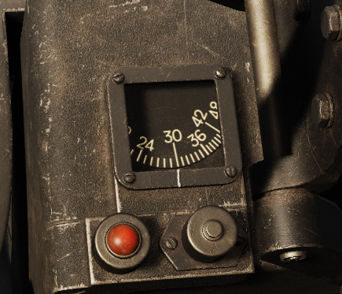
Radar Range Sweep Knob
The Range Sweep Knob (dial 6 below) is found next to the Auxiliary Release Buttons, and reduces the maximum lock-on distance for the radar, preventing the radar from locking onto undesirable objects such as the ground or ground objects. During normal operation at altitudes 6,000 feet or higher above ground level, the rheostat should be at MAX.
| Range Limit | Setting (feet) |
|---|---|
| MIN | 3,000 |
| MAX | 9,000 |
The value changes linearly between the min and max settings.
Sight Dimmer
The brightness of the reticle can be adjusted using the Sight Dimmer rheostat (dial 7 below).
Sight Filament Selector Switch
The primary or secondary filament in the dual-filament sight reticle bulb powered by the secondary bus and the tertiary bus. Select the filmane using the filament selector switch (dial 1 below). If the primary filament fails, set the switch to the SECONDARY position.

Manual Ranging Control (Throttle)
for automatic radar ranging, the throttle grip is normally in the full counter-clockwise position. Twisting the throttle grip clockwise decreases range from 2,700–12,000 feet.
Rotating the throttle full counter-clockwise returns ranging to automatic operation.

Wingspan Lever
The wingspan lever changes the size of the reticle, matching the angular size of a target at the indicated range. Setting the target's wingpan can confirm the radar ranging is correct, or assist manual ranging, visually matching the reticle width with the target's wingspan.
A mechanical linkage connects the interactive wingspan lever with the actual wingspan lever of the A-4 sight.

Radar Lock-On Light
When the radar range gate has achieved lock-on, the lock light illuminates.

Radar Reject Button
The radar reject button is located on the flight stick. Cancel radar locks by pressing the Radar Reject Button (for example, if the current range is much lower or higher than the desired target range). The radar continues to increase scan range until it finds a target or reaches max range, at which time it begins a new scan at minimum range.
Pressing the radar reject button also sets the Sight Selector Switch to the GUN position.
Sight Selector

1. Sight Selector Switch
There are three options rocket, gun, bomb.
| Selection | Range (feet) | Electrically Caged |
|---|---|---|
| GUN | Range from radar or manual | Free to move unless electrical cage is depressed |
| ROCKET | 850 (fixed) | Caged to ECSL + Depression Angle |
| BOMB | 850 (fixed) | Caged to ECSL + 10° (used with [automatic bombing mode])(#bomb-air-to-ground-automatic) |
Caution
If the radar reject button is depressed, this switch automatically moves to the GUN position.
2. Sight Depression
This sets the depression from the boresight in mils when either in the rocket or bomb mode.
3. Target Speed Switch
This switch sets the effective velocity of the own aircraft and the closure rate for the sight calculations. Each setting is phrased in terms of the target velocity.
| Selection | Own Speed (knots) | Target Speed (knots) | Closure Rate (knots) |
|---|---|---|---|
| TR | 300 | 200 | 100 |
| HI | 600 | 500 | 100 |
| LO | 600 | 200 | 400 |
Operation
The A-4 gunsight can be used in air-to-air or air-to-ground operation. The sight selector selects each modes of operation as described below.
If the sight select mode is in manual, the armament mode is in bombs or napalm, and the bomb-arm switch is in SAFE, the gunsight pipper extinguishes, indicating a dud would be dropped off the aircraft.
Gun (Air-to-Air)
With the sight selector in the GUN position and the sight mechanically uncaged, the rate gyro inside the sight controls the pipper location to provide a gunnery solution based on the set range. The target speed switch should be set on the closest target speed:
| Selection | Description |
|---|---|
| HI | High Speed Targets |
| LO | Low Speed Targets |
| TR | Tracking Shots (at similar speeds to the target) |
Ranging
The range is controlled automatically by the radar, or manually using the throttle twist.
The radar automatically locks onto any sufficiently strong reflections, including the ground. The range is indicated on the range dial. If the range doesn't match the desired target, the target can be rejected using the radar reject button, initiating a new scan starting at the minimum range. If no targets are found by the time the scan reaches its maximum range, the scan begins again at the minimum range.
Range is validated by using the wingspan lever to set the wingspan of the current target on the gunsight. Then, the target is at the correct range when the wingspan matches inside of the reticle's tick marks.
Gunnery
The sight must be allowed to stabilize, attaining a correct solution for the current attack geometry. Keeping the reticle on the target for 1-2 seconds before firing.
Rocket (Air-to-Ground Manual)
With the sight selector in the ROCKET position and the sight mechanically uncaged, the Sight Depression controls the depression (in mils) of the reticle from the electrically caged sight line.
In this mode, the sight can be used in this for manual bombing or rocket attacks.
Bomb (Air-to-Ground Automatic)
The A-4 sight can use the inbuilt gyroscope to calculate target position. By using information such as airspeed to calculate bomb trajectory, an inbuilt mechanical computer determines when bomb trajectory coincides with the target position, and sense the bomb release signal once a solution is found.
The bombsight works on the principle that the line of sight rate corresponds to the slant range to the target. To facilitate this the reticle is automatically depressed 10° in the bomb mode. Keep the reticle on the target and allow the system to measure the line of sight rate. Once parameters are met, the reticle extinguishes and the bomb is released.
To protect the gyros, the electrical cage must be held up until the target is in the sight. Then, smoothly follow the target under the pipper to get an accurate measurement. Jerks or bumps can cause bombs to release prematurely.
Sight Lines Definitions
Fuselage Reference Line (FRL)
The defined reference line for pitch for the aircraft. Every other line is referenced from this line.
Mean Fixed Bore Line (MFBL)
The mean fixed bore line is a line drawn from the average position of the gun muzzles drawn parallel to the average boresight of the guns.

True 0 Prediction Sight Line (T0PSL)
The line drawn from the A-4 sight position parallel to the Mean Fixed Bore Line.
0 Prediction Sight Line (0PSL)
A line depressed by some angle from the True 0 Prediction Sight Line to harmonize this line and the Mean Fixed Bore Line at some distance (usually 2,000 feet).
Electrically Caged Sight Line (ECSL)
A line depressed by 1.1 mils from the 0 Predication Sight Line to account for bullet drop at approximately 850 feet.
This sight line is what is used when the sight is electrically or mechanically caged.
Guns
Introduction
The F-100D has four Pontiac M-39 20 mm revolving cannons mounted on the underside of the aircraft's nose. Each cannon fires at 1500 rounds per minute, for a total combined fire-rate of 6000 rounds per minute. Each cannon has 200 rounds, for a total of 800 rounds.
Gun Missile Switch
The gun missile switch controls electrical power for the upper and lower guns, and missiles.

| Position | Description |
|---|---|
| MISSILES | The missile selection provides power to the Missile Control Panel and through any AIM-9 Sidewinder missiles. |
| SAFE | Removes power from the weapons system, rendering it SAFE. |
| UPPER | Energizes the second trigger detent and ARMS upper guns. |
| ALL | Energizes the second trigger detent and ARMS upper and lower guns. |
| LOWER | Energizes the second trigger detent and ARMS lower guns. |
| POD | Unused on the F-100D |
With the gun missile switch in any position, the Gun Camera is actuated by pressing the first trigger detent.
Caution
Gun missile firing circuits are inhibited when weight is on the wheels.
Firing the Guns
Once the gun missile switch is positioned in UPPER, LOWER or ALL position, weight is off wheels, and the aircraft has electrical power, pressing the trigger second stage detent fires the armed guns.
AIM-9 Sidewinder
Introduction
The AIM-9 sidewinder is a short range infrared guided missile introduced in 1956. It is the primary air-to-air weapon for the F-100D.
The Sidewinder is a passive infrared guided missile. The missile is aimed using the A-4 Gunsight with the sight mechanically or electrically caged.
The missile generates a tone based on received infrared radiation into its seeker, which is transmitted to the pilot headphones. A low growl indicates little to no infrared radiation detected, and a higher-and-louder growl indicates a heat source, indicated a possible detected target. The growl only indicates the ability for the seeker to track, but not anything about range, or whether the missile can maneuver to the target.
The F-100D can carry two Sidewinders on a Type IX launcher on each of the inboard pylons, for a total of four missiles.
Sidewinder Types
The F-100D historically carried 3 different variants of the AIM-9 Sidewinder, although some later variants are backwards compatible: AIM-9L and AIM-9M Sidewinders are compatible with minor rail modifications that were made to other aircraft in the 1990s.
AIM-9B
Introduced in 1957 this is the first sidewinder to be put into service. It saw significant use during the Vietnam War.
AIM-9E
Introduced in 1969, this variant boasted peltier cooled seeker for better thermal sensitivity, increased seeker track rate, and improved maneuverability. The seeker gimbal-limit was improved from 25° to 40°, making it significantly more effective against maneuvering targets.
Additionally, the max launch G was increased from 2–7.33 G, allowing launches during maneuvering, overcoming a key shortcoming that plagued the AIM-9B.
AIM-9J
Introduced in 1972, the J contniued to improve the seeker max track rate, and a time between launch and missile maneuvering reduced from 0.5 to 0.3 seconds.
Controls
This panel is responsible for:
- Managing the firing sidewinder order
- Changing sidewinder volume
- Jettisoning sidewinders
- Making the sidewinders safe when not in use.

Missile Volume Control
This adjust the volume of the Sidewinder in the headset.
Station Bypass
In the event of a defective Sidewinder the store can be stepped to the next Sidewinder by using the station bypass switch.
Missile Master
This three position switch is normally in the standby position with it spring loaded for the reset position.
| Position | Description |
|---|---|
| Reset (sprungloaded) | Resets the firing order of the sidewinders moving the firing order back to the first Sidewinder (left pylon right sub-pylon). |
| Standby | Maintains the Sidewinder in a warmed up state while keeping the missile safe. The audio can still be heard in this position. |
| Ready | Arms the Sidewinder for launch bringing it to the ready state. |
Safe Launch (Jettison)
Pressing and holding this button starts the Sidewinder jettison process, firing all Sidewinders (without fuzing or guidance) in their firing order with a 0.5 second delay between each.
Operation
Setup
The Gun-Missile Switch in the MISSILE position provides warmup and gyro power to the missiles. The Missile Master Switch sets the ready state of the missiles. In STBY mode, the Sidewinder is kept warmed up and ready. In this position missile audio can be heard but the firing circuits are not armed.
Sidewinder volume is adjusted using the Missile Control Volume Control.
Firing
To arm the missiles, confirm the Gun-Missile Switch is in the MISSILE position, and set the Missile Master Switch to the READY position. A Sidewinder tone should be heard, and the status display lights should indicate a Sidewinder is ready for firing.
Sidewinders are fired in the following order, and correspond to status display lights.

Warning
Releasing the trigger before the launch sequence is complete will cause the missile to be trashed. Once the trigger is pressed, an irreversible process begins: the seeker is uncaged and the gas generator is fired, expending the missile's usability. Bypass unusable missiles using the station bypass switch.
AGM-45 Shrike
Introduction
The AGM-45 Shrike is an anti-radiation guided air to ground missile, introduced in 1965 and employed heavily during the Vietnam war.
The F-100F could carry one Shrike Missile on each of the inner pylons. The F-100D never strictly carried the Shrike missile. However, the pylon used existed on both models and the avionics between the two are very similar, and would allow the same modifications, justifying its presence in the game.
The Shrike is passive, and guides on the signals radiated by the enemy surface radars. This makes it an ideal weapon for suppressing and destroying surface to air missile and anti-aircraft radars. The antenna inside the Shrike is fixed, but provides direction information to incoming radar signals allowing the missile to guide to a target provided the radar is within the field of view of the seeker.
Shrike Settings
Radio Seeker
The radio seeker of the Shrike determines what radars can be tracked. Narrow band radio seekers were used target specific radar systems. These seekers could be swapped out to attack the specific threat dictated by the mission. The RF Guidance Unit can be changed on the AGM-45 in the mission settings and in the weapon rearming menu by clicking the orange triangle in the top left corner of the Shrike icon and selecting a Guidance Unit.
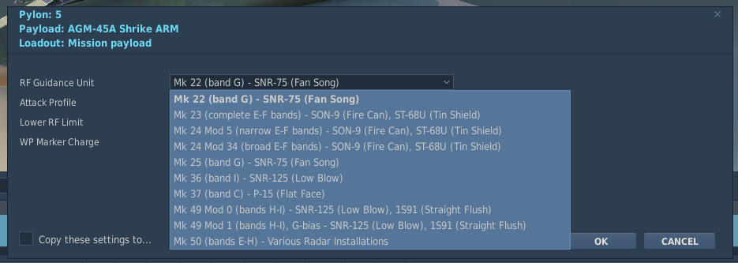
Dive Bypass
In addition to the radio seekers. the Shrike has two guidance modes that affect trajectory of the missile: loft and dive bypass (direct attack). These settings can also be found in the same menu as the Guidance Seeker options.
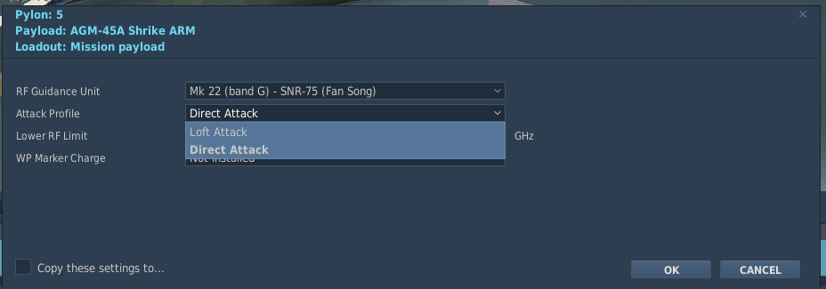
Loft—Dive Bypass (disabled)
When launched, guidance is initially disabled. If the missile climbs above 18,000 feet (barometric), and then descends below 18,000 feet will the seeker and guidance then be activated. At this point, the missile tracks anything in its field of vision and within the seeker band.
This mode is intended for stand-off, but without additional computer assistance (for example, what was added later in the F-4D), this mode is difficult to attain accuracy.
Dive Bypass—Dive Bypass (enabled)
Due to the aforementioned difficulty, a solution was developed to improve the Shrike accuracy in the field. The dive bypass modification enables radio seeker and guidance at launch, sacrificing range for improved accuracy.
Shrikes fired with this setting will guide immediately. For best results, use the course and glideslope needles to point the missile as close to target elevation and azimuth as possible.
Marker Smoke
Marker smoke can be added to the Shrike to assist with locating surface radars in the event of a near miss. Upon impact, the shrike burns a white phosphorous charge, producing a column of smoke at the impact point. This setting can be found in same menu where Guidance and attack modes are found labeled "WP Marker Charge".
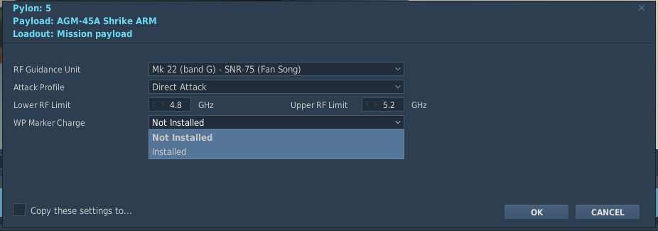
Controls and Indications
Audio
The audio of the shrike is generated from incoming pulses of radiation. similar to how the Radar Homing and Warning Receiver generates audio.
Any audio indicates incoming signals detected by the radio seeker. These signals are used by the guidance system to home the missile on the source of the signal.
Course and Glideslope Needles
When a Shrike is powered and selected, the course and glideslope needles will indicate the error in pitch and yaw between the seeker boresight and the detected incoming radiation. This allows the pilot to steer the aircraft onto the source of the radiation and by keeping the vertical and horizontal deviations bars centered you is pointed at the detected signal.
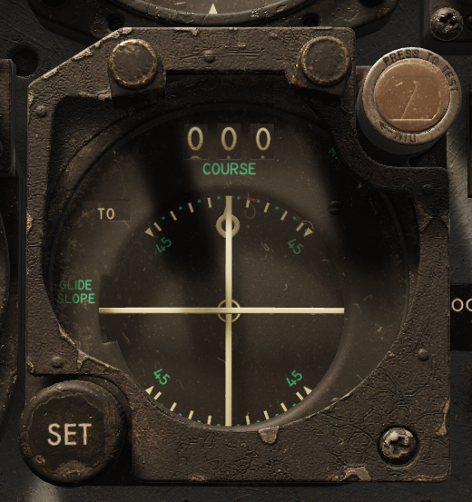
Sidewinder Volume Knob
The sidewinder volume knob on the missile control panel adjusts Shrike audio in the headset.
Operation
Setup & Firing
- Sight Mode—Manual
- Armament Mode—Shrike
- Pylon Arm—Armed for each pylon
Once the Shrike is set up, point the aircraft at a radiation source to hear the radiation through the Shrike, indicating a good track. The needles will activate and provide additional guidance toward the source.
To fire, depress the weapon release button on the flight stick until the missile completes its launch sequence.
AN/AJB-1 Low Altitude Bombing System (LABS)
Introduction
The Low Altitude Bombing System (LABS) was introduced to assist with nuclear weapons delivery, providing a pre-determined trajectory with delivery profiles to assist with escaping blast effects.
Controls and Indicators
Pitch and Roll Indicator
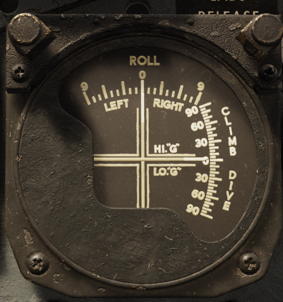
The vertical needle indicates the current desired roll from 9 degress to wings level left and right. The horizontal needle indicates both the desired G load in pullup mode and desired pitch angle(straight and level) in pre-pullup mode. You will need to keep the wings level and thus roll at 0 and be on "G" during pull up for a correct auto release for the given LABS or LADD release mode. Maintain correct G by keeping the horizontal bar centered between the lines.
Pullup Light
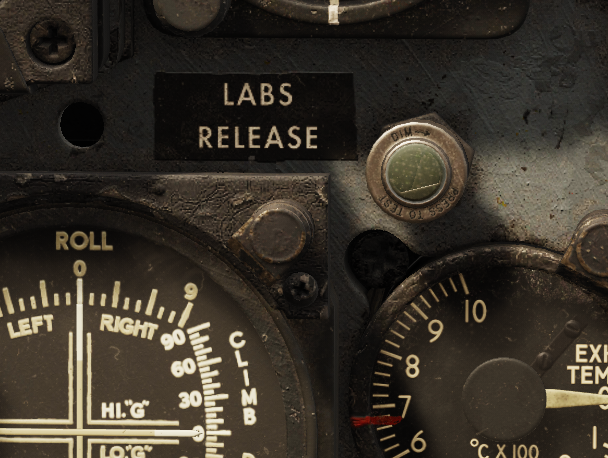
The LABS release light indicates when pull up should begin once extinguished. The time the light is on for is set on either the LABS and LABS ALT(left) or LADD(right) dials pictured below.
LABS and LADD Timer Dials
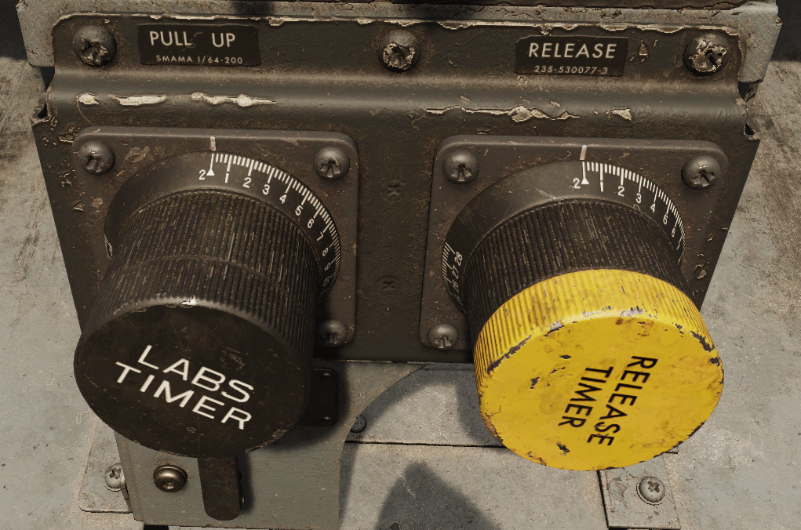
The dials for setting the pull up time for LABS and LABS ALT (Left) and LADD (Right) are shown above. They have a range from 0–28 seconds.Operation
All LABS delivery modes share the pullup timer. The pullup timer is the time set by the pilot to indicate the time taken for the aircraft to fly from a know identification point (IP) to the pullup point.
There are two variables which determine what the pullup timer should be set to:
- Ground speed
- Bomb travel distance
- Distance from IP to target
pullup timer = (distance from IP to target—bomb travel distance) / ground speed
Both ground speed and distance from IP to target are determined during mission planning. A good identification point (IP) is something near the target area the pilot can easily locate and navigate to.
Bomb travel distance is determined by the bomb's release parameters, including:
- Release angle
- True airspeed
- Target altitude
- Aircraft altitude
- Bomb type
- Wind
Using all this information we can begin using LABS and LADD delivery as they function similarly. Pluging in all the correct data we want to be pointed at the target and press the weapon release at the indentification point (IP), the LABS release light will then illuminate. Once it is extinguished after our LABS timer setting has ended begin pulling and maintain wings level and be on "G" using the LABS gauge. Release will then automatically occur depending on the release mode chosen. 50 degress for LABS and 120 for LABS ALT.
LABS (Loft)
The LABS mode is the normal mode, lofting the bomb towards the target over long distances, at a release angle of 50°.
LABS ALT (Over the Shoulder)
The LABS ALT mode is the alternate method lofts the bomb vertically over the target, at a release angle of 120°.

Low Altitude Drogue Delivery (LADD)
Low Altitude Drogue Delivery (LADD) is for delivery drogue assisted nuclear weapons. At the pullup point, the pilot is commanded into a 40° climb. The release timer determines the release. The release timer begins at the pullup point. When the timer runs out, the bomb is released.
Bomb and Rockets
The following tables provide baseline release parameters for different weapon types.
MK-82 Low Drag
| Altitude | Speed | Angle | Depression |
|---|---|---|---|
| 2,000 AGL | 400 KIAS | 20° | 145 mils |
| 2,000 AGL | 400 KIAS | 30° | 120 mils |
| 3,000 AGL | 400 KIAS | 20° | 175 mils |
| 3,000 AGL | 400 KIAS | 30° | 125 mils |
MK-82 High Drag
| Altitude | Speed | Angle | Depression |
|---|---|---|---|
| 250 AGL | 500 KIAS | 0° | 140 mils |
| 500 AGL | 500 KIAS | 0° | 150 mils |
| 250 AGL | 500 KIAS | 10° | 70 mils |
| 500 AGL | 500 KIAS | 10° | 105 mils |
Folding Fin Aerial Rockets (FFAR)
| Altitude | Speed | Angle | Depression |
|---|---|---|---|
| 3,000 AGL | 350 KIAS | 20° | 45 mils |
| 3,000 AGL | 350 KIAS | 25° | 50 mils |
| 3,000 AGL | 350 KIAS | 30° | 45 mils |
Ended: Weapon Systems
Normal Procedures ↵
Preflight Check
Once in the takeoff area:
- Hydraulic Pressure Gauge Selector Switch—UTILITY
- Speed Brake Switch—IN—Check speed brake is up, then move the switch to the OFF position.
- Wing Flaps—INTERMEDIATE
- Takeoff trim—CHECK
- Pitot heat—ON
-
Canopy—CLOSED AND LOCKED
Note
Ensure a tight seal by holding the canopy control switch in the CLOSE position for a few seconds after the CANOPY NOT LOCKED warning light extinguishes.
-
Anti-Collision Lights—AS REQUIRED
Startup
Pneumatic Start
- Starter and Ignition Button—PRESS momentarily
-
Ground air supply—APPLY
Caution
The starter is limited to one minute of continuous operation during any 5-minute period.
Caution
If the tachometer doesn't indicate engine rotation, or the oil pressure doesn't indicate a rise in oil pressure within 10 seconds after air is applied, stop the starter cycle by pressing the stop button momentarily.
-
Throttle—IDLE at 12–16% RPM. Check ignition indicator light is on, fuel flow is indicated, and confirm the fuel BOOST PUMP INOP light is extinguished.
Caution
If the fuel BOOST PUMP INOP light remains on, the boost pump has failed. Abort the flight. If ignition does not occur within 20 seconds after throttle is moved to IDLE, return throttle to OFF and continue to motor the engine for 30 seconds, then press the stop button momentarily to abort the start. If an exhaust overtemperature didn't occur, subsequent starts can be attempted.
-
Exhaust temperature—CHECK—Light-up should occur within 20 seconds after the throttle is moved to IDLE, indicated by rising exhaust gas temperature.
Caution
If exhaust temperature exceeds start limits, return throttle to the OFF position, and monitor the engine for 30 seconds. Then, press the stop button momentarily to abort the start.
-
40-45% RPM—DISCONNECT AIR SUPPLY AND GROUND POWER
Caution
If the engine doesn't accelerate to 55–60% (idle) RPM within 1 minute (80 seconds is permissible on the first start of the day) after light-up, return throttle to the OFF position and continue to motor the engine for 30 seconds; then press the starter and ignition STOP button momentarily to abort the start. Unless an exhaust overtemperature occurred, subsequent starts can be attempted.
-
Engine Idle—CHECK ENGINE INSTRUMENTS—confirm:
- Engine RPM is 55–60%
- Oil pressure is 40 psi
- Other engine instruments indicate properly
Caution
If the ignition-on light fails to extinguish at idle, the starter centrifugal cutout switch has failed. Press the stop button momentarily to shut down the starter and de-energize the ignition circuit.
Cartridge Start
Note
The minimum interval between cartridge starts is 5 minutes, to a maximum of two such attempts per hour. Perform one pneumatic start for every four cartridge starts to ensure removal of cartridge residue from the starter.
Caution
If external DC power isn't available, set the UHF radio switch mode selector in the OFF position until startup is complete.
-
Starter and ignition button—PRESS MOMENTARILY
Caution
If the tachometer doesn't indicate engine rotation, or the oil pressure doesn't indicate a rise in oil pressure within 10 seconds after air is applied, stop the starter cycle by pressing the stop button momentarily.
-
Throttle—IDLE at 2–4% RPM. Check ignition indicator light-on, fuel flow is indicated, and confirm the fuel BOOST PUMP INOP light is extinguished.
Warning
If the fuel BOOST PUMP INOP light remains on, the DC boost pump has failed. Abort the flight.
-
Exhaust Gas Temperature—CHECK—Light-up should occur (as indicated by rising exhaust temperature) within 8–10 seconds after the starter and ignition button is pressed.
Note
Cartridge burnout time is approximately 20 seconds.
Caution
If the engine doesn't accelerate to 55–60% (idle) RPM within 1 minute (80 seconds is permissible on the first start of the day) after light-up, return throttle to the OFF position and continue to motor the engine for 30 seconds; then press the starter and ignition STOP button momentarily to abort the start. Unless an exhaust overtemperature occurred, subsequent starts can be attempted.
Caution
If the ignition-on light fails to extinguish at idle, the starter centrifugal cutout switch has failed. Press the stop button momentarily to shut down the starter and de-energize the ignition circuit.
-
Engine Idle—CHECK ENGINE INSTRUMENTS—confirm:
- Engine RPM is 55–60%
- Oil pressure is 40 psi
- Other engine instruments indicate properly
Taxiing
- Wheel Brakes—CHECK
- Flight Instruments—CHECK
- Anti-Skid Switch—ON—Test brake operation again.
Takeoff
Normal Takeoff
- Wheel Brakes—RELEASE
-
Throttle—AFTERBURNER
Caution
Takeoff at military thrust is not recommended.
-
Engine Pressure Ratio Gauge—CHECK—When the afterburner lights, if the pointer isn't within the arc of the takeoff index marker, abort the flight.
Caution
Disengage nose wheel steering at 100 KIAS, and point the nose with the rudder.
-
Acceleration—CHECK
-
Nose rotation—At the proper takeoff speed for weight and configuration, slowly apply back stick pressure so the aircraft assume takeoff pitch attitude.
Warning
Early nose wheel lift off can result in excessive ground roll.
-
Takeoff—Prevent settling by maintaining proper takeoff pitch attitude after lift off until proper airspeed is achieved.
Note
The F-100D becomes much more maneuverable by 300 KIAS.
Crosswind Takeoff
Execute a normal takeoff with the following additional guidance:
- Keep the aircraft aligned with the runway by applying rudder pressure after rotation.
- Counter drift at lift off by lowering the upwind wing.
- Increase takeoff speed to overcome crosswinds or gusty conditions.
Cruise
- Altimeter—CHECK RESET vs. STBY.
Afterburner Operation During Flight
Note
At low altitudes while using afterburner, the fuel transfer rate from the drop tanks may be too low to maintain a constant level in the internal tanks and use of internal fuel may occur before drop tank fuel is depleted.
The afterburner can be operated at any throttle setting between 89%±2 RPM and full military thrust by moving the throttle to the outboard position. The pressure ratio will momentarily drop, indicating that the exhaust nozzle has opened. Under normal operation, the afterburner should light between 2–5 seconds. If afterburner light-up has not occurred, return the throttle to the inboard position.
-
Throttle—Outboard into AFTERBURNER position. Retard the throttle after light-up to minimize the possibility of engine overtemp.
Caution
If the exhaust nozzle fails to open when afterburner is selected, a loud explosion and surge may occur followed by RPM reduction and increase in exhaust temperature.
-
Throttle—Inboard, to shut down afterburner.
Descent
In order to decrease the possibility of canopy fogging, the canopy and windshield defrosting systems should be operated at the highest flow possible throughout the flight. Sufficient flow will preheat the canopy to keep the glass temperature above the cockpit dew point.
Preheating is necessary as there is not enough time during rapid descents to heat the canopy. Maintain engine speed above 83% RPM.
- Pitot Heat—ON
- Canopy and Windshield Defrost Lever—AS REQUIRED
- IFF/SIF/AIMS—AS REQUIRED
- Altimeter—SET AND CHECK RESET vs STBY
- Damper Switches—STANDBY (OFF)
- Oxygen—AS REQUIRED
- Fuel Quantity—CHECK
Landing
Before Landing
On approach:
- Hydraulic pressures—CHECK. Monitor utility system during approach and landing.
- Safety belt and should harness—TIGHTENED
- Anti-Skid Switch—ON
- Speed Brake—AS REQUIRED
- Landing Gear—DOWN—Check for down and locked indications.
- Wing Flaps—DOWN—Flaps alone will provide sufficient drag. However, speed brake may be also be used.
Normal Landing
- Throttle—IDLE—During flare or at touchdown.
- Touchdown
- Wing Flaps—UP
-
Nose Wheel Steering—ENGAGE
Caution
In the event of a nose wheel steering system malfunction, disengage and maintain directional control with rudder and differential braking.
Warning
If the rudder pedals are not neutral when the nose wheel steering button is pressed, the steering may not engage. If the steering does not engage, move the rudder pedals in the direction of the nose wheel setting. To prevent nose wheel steering disengaging because of pitching, hold forward stick pressure on landing roll out.
-
Drag chute—DEPLOY
- Employ normal braking
- Speed brake—UP
Normal Landing Technique
Gear should be lowered below 230 KIAS to avoid damage.
As an example, with a 24,000-pound aircraft:
- The pattern should be flown 20 KIAS above the final approach speed.
- An RPM of 83–87% is required. Arrive on final at 165 KIAS, 300 feet AGL, and one nautical mile from the runway. This results in a glide path between 2.5–3°, with an impact point just short of the runway.
Small adjustments of airspeed can be corrected with pitch and small adjustments in descent rate can be corrected with throttle. However, larger adjustments must be made with coordinated use of both throttle and speed brake. To achieve a precise touchdown point in the flare, maintain a stable descent rate and airspeed. Reduce thrust the thrust as necessary prior to touchdown.
Note
10 knots fast equates to approximately an additional 1000 feet of ground roll.
Speed Brake Operation
Speed brake operation in addition to flaps, or alone, the aircraft buffet will increase. Flaps provide sufficient drag resulting in an appropriate flat approach with high power settings. Thus, use of speed brake is not necessary unless required.
Flap Technique
Raising the flaps immediately after touchdown will increase the normal load on the nose and main landing gear, allowing the brakes to produce a higher braking moment. This will provide higher deceleration.
Drag Chute Operation
The drag chute (in real life) has been tested up to 180 KIAS without failure. Thus, reliability is greatly increased at lower speeds if the aircraft is allowed to slow below 150 KIAS before deploying the drag chute.
Tail Skid
The tail skid is installed only for the purpose of protecting the aircraft from serious damage in the tail area during landing. Occasional contact of the tail skid is normal operation. However, the tail skid may not protect the aircraft under high sink rates.
Landing Pattern

- Initial—300 KIAS
- Speed Brake—AS REQUIRED—Position throttle to maintain pattern speed and altitude
- Landing Gear—DOWN—Checked for down-and-locked indications.
- Wing Flaps—DOWN
- Throttle—IDLE—Touchdown at recommended speed.
- Wheel Brakes—CHECK
- Wing Flaps—UP
- Nose Wheel Steering—ENGAGE
- Drag Chute—DEPLOY
- Speed Brake—UP
Landing Without a Drag Chute
Sufficient braking is available without the drag chute on a dry runway. Aerodynamic braking can also be used to dissipate energy down to a speed where mechanical braking is much more effective with less energy absorption.
Minimum-run Landing
Minimum-run landings should be preformed in the following manner: touch down at the recommended speed for weight and configuration, lower the nose wheel as soon as the main gear make contact with the runway, engage nose wheel steering, retract the flaps, and deploy the drag chute. Apply a steady but light force to use brakes as required and increase as the aircraft slows. Once the flaps are fully retracted or the aircraft is slower than 110 KIAS, heavier braking may be used. If the anti-skid system cycles or skids, release brake pressure.
Note
No damage is being done if the anti-skid system cycles, however every cycle or skid increases stopping distance by 10%.
Note
With anti-skid on, if full brakes are used until a complete stop, abrupt pitching may results. If this is the case, decrease pedal pressure.
Slippery Runway Landing
On a slippery runway, braking action will vary immensely. Use anti-skid and aerodynamic braking to the max extent possible. The drag chute should be deployed while aerodynamically braking. Rudder is the primary means of directional control as nose wheel steering and braking may be ineffective. Rudder control is available down to 60 KIAS.
Landing In Crosswinds
When landing in crosswinds, approach and touchdown speeds should be increased. Increase speeds by ½ the crosswind velocity component plus ½ the gust factor. For example, a 45° off runway crosswind of 10 knots gusting 20 knots, approach speed should be increased by 10 knots.
On final, crab into the wind or forward slip to align the fuselage with the runway. If crabbing, perform a forward slip before touchdown. If the crosswind component exceeds 25 knots, perform a no-flap landing. At touchdown, lower the nose wheel and engage nose wheel steering. A higher tendency of weather vaning into the wind exists when the drag chute is deployed. Thus, careful consideration that the nose wheel steering is operating before deploying the drag chute is essential. If directional control is lost, the drag chute must be jettisoned.
Caution
If the rudder pedals are not neutral when the nose wheel steering button is pressed, the steering may not engage. If the steering does not engage, move the rudder pedals in the direction of the nose wheel setting.
Touch and Go Landing
- Normal touchdown.
- Throttle—MIL
- Speed brake—UP
- Wing Flaps—INTERMEDIATE
Caution
Exercise care when moving the flaps to INTERMEDIATE. Moving the flaps to UP will necessitate increased rotation speed.
- Trim the aircraft for takeoff.
- Nose rotation—At rotation speed, begin to slowly rotate the aircraft so that the aircraft will assume the pitch angle required for takeoff at the takeoff speed.
Warning
Ensure proper airspeed has been obtained before rotation. Do not rotate the aircraft excessively nose high. If over rotated, reduce the angle of attack back to the proper takeoff pitch attitude.
- Takeoff—Maintain proper takeoff pitch attitude after lift off until proper airspeed is obtained as to prevent settling.
- Landing Gear—UP
- Wing Flaps—UP—Increase pitch angle during flap retraction, to prevent settling.
Other
Airplane response is sluggish at landing speeds and more stabilizer deflection is required for similar responses. High instantaneous demand above available rate will stick may stiffen or lock up. This only means the stabilizer is moving at the maximum available rate and does not mean the stabilizer has stopped moving, but the pilot is demanding a higher rate. This can be avoided by flying a smooth power-on approach and reducing over control. It is possible to over control to the point where the hydraulic system will meet the criteria to illuminate the FLIGHT SYS FAIL caution light. The illumination of the caution light and stick stiffening can occur independently. Refer to the hydraulic system section for more information on the conditions of the FLIGHT SYS FAIL caution light. Stick force lightning occurs 5 KIAS below the touchdown speed of the 1G condition. If encountered, stick force lightning is not dangerous and normal flying should be continued. Over controlling or "jamming" can cause porpoising. Excessive sink rate, airspeed, descent rate, or a combination of all three can also cause porpoising. Excessive touchdown speed may cause the nose wheel to touchdown first, which may induce an excessively nose high response. Pushing forward will cause the cycle to be repeated. If porpoising is encountered, hold the stick slightly aft of neutral while advancing the throttle to execute a proper go around procedure. Attempting to counteract the porpoising will only aggravate the aircraft response.
Caution
If using aerodynamic braking in crosswind conditions, rudder authority may be insufficient to prevent weather vaning. The crosswind landing procedure should be used.
Go-Around
- Throttle—MILITARY
- Speed Brake—UP
- Landing Gear—UP—Only after adequate airspeed has been obtained.
- Wing Flaps—UP—At final approach speed for weight and configuration.
- Clear traffic.
- Throttle—AS REQUIRED
Note
During a go-around in military thrust, approximately 250 pounds of fuel is required. If the afterburner is required, this amount increases to 300 pounds.
Caution
If using the emergency fuel control system, advance the throttle cautiously to prevent engine over-speed or compressor stall.
Warning
If the afterburner fails to ignite, considerably less than military thrust is output. Return the throttle inboard immediately to regain military thrust.
Engine Shutdown
- Brakes—HOLD
- Standby Instrument Inverter Switch—ON
- Throttle—72%—at least 30 seconds.
- Speed Brake Switch—AS DESIRED
- Nose gear ground safety pin—INSTALLED
- Throttle—OFF
- Engine Master Switch—OFF
- Standby Inverter—OFF
- Battery Switch—OFF
- Control stick—ROTATE—Bleed flight control hydraulic system pressure.
- Landing gear doors—OPEN—Pull the landing gear emergency lowering handle to open landing gear wheel well doors.
Ended: Normal Procedures
Weapons Employment ↵
Manual Delivery
For specific delivery profiles see the weapon release tables
Rockets
The procedure below will setup the weapons so that the bomb-button will fire a salvo of rockets.
Note
Rockets are most effective in ripple fire modes.
1. Rocket Arming
- Armament Control Panel: Stores Selector—RKTS
- Armament Control Panel: Mode Selector—MANUAL
- Set All Armament Control Panel: Station Release Selection Switches—NORM
2. Aircraft Weapons Release System (AWRS) Setup
- Set AWRS Quantity Selector—AS DESIRED
- Set AWRS Release Interval—AS DESIRED—(50 ms recommended)
- Set AWRS Mode Selector—RIPPLE SALVO
3. Sight Setup
- Set Sight Selector Switch—ROCKET
- Set Sight Depression—AS DESIRED—(10-20 mils recommended)
- Set Mechanical Cage Lever—UNCAGE
Bombs
The procedure below will setup the weapons so that the bomb-button will drop a series of bombs.
Note
Bombs are most effective in ripple fire modes.
1. Bomb Arming
- Armament Control Panel: Stores Selector—BOMBS
- Armament Control Panel: Mode Selector—MANUAL
-
Set All Armament Control Panel: Station Release Selection Switches—NORM
-
Set All Armament Control Panel: Bomb Arm Switch—NOSE & TAIL
Note
If dropping high-drag in low drag mode, set the Bomb Arm Switch to NOSE instead.
2. Aircraft Weapons Release System (AWRS) Setup
- Set AWRS Quantity Selector—AS DESIRED
- Set AWRS Release Interval—AS DESIRED—(150 ms recommended)
- Set AWRS Mode Selector—RIPPLE SINGLE
3. Sight Setup
- Set Sight Selector Switch—BOMB
- Set Sight Depression—AS REQUIRED—(See the weapon release tables)
- Set Mechanical Cage Lever—UNCAGE
Sidewinder
- Missile Master—READY
- Gun Missile Switch—MISSILES
- Check Missile Status Light is Green (if not use Station Bypass to step until a working missile can be found, trigger can also be used to step but runs the risk of inadvertantly firing a sidewinder). Tone should be heard.
- Listen for higher pitched tone indicating a valid heat source and depress second stage trigger to fire the missile.
Ended: Weapons Employment
Emergency Procedures ↵
Takeoff Emergencies ↵
Afterburner Failure During Takeoff
-
Throttle—INBOARD—Immediately move throttle inboard out of AFTERBURNER range to MILITARY to ensure exhaust nozzle closing.
Warning
If afterburner is used and light up is not achieved, considerably less than military thrust is output. Return the throttle inboard to regain military thrust.
-
External load—JETTISON (if necessary)—If the aircraft starts to decelerate or altitude cannot be maintained, assume either the exhaust nozzle failed to close, or gross weight is too great to continue. In either case, jettison external loads to lighten aircraft gross weight.
Note
In most cases, if external loads are jettisoned at the time of afterburner failure, the takeoff can be successfully completed at military thrust.
Engine Failure During Takeoff
- ABORT—If engine failure occurs on takeoff before the landing gear handle is raised and a barrier engagement/ arrestment is feasible, abort.
If barrier engagement/arrestment is not feasible or the landing gear handle has been raised, proceed as follows:
- External Load—JETTISON
- ZOOM—If possible, then—EJECT
Warning
Any upward vector with wings level increases chance of survival.
Illumination of the Fuel Valve Fail Light
Steady or flickering illumination of the fuel valve fail light indicates a failure or impending failure of the fuel system shutoff valve, the light system circuitry, or a component of the system.
If this light illuminates during takeoff, action is required. The exact procedure to follow varies with each set of circumstances and depends on variables like ground speed, length of runway, and remaining overrun.
If the fuel valve fail light illuminates steadily, or flickers during ground roll, and sufficient runway or overrun is available, abort the takeoff.
If it is not feasible to abort, continue takeoff and land as soon as possible.
Warning
Do not cycle the fuel system shutoff switch. Cycling the switch can cause the fuel system shutoff valve to close, and if a failure has occurred, it might not reopen, causing a flame-out and preventing a restart.
Ended: Takeoff Emergencies
In-flight Emergencies ↵
Air Start
Immediate Restart
Warning
If a flame-out occurs when the aircraft is in landing configuration at less than 2,000 feet AGL, EJECT if landing is not assured. Never attempt an air start below 2,000 feet.
- Throttle—INBOARD
- Air Start Switch—ON
- Fuel Regulator Selector Switch—Emergency. Adjust throttle setting to match actual engine RPM as closely as possible.
Air Start Procedures
- Throttle—OFF.
-
Air Start Switch—ON. Move air start switch to ON.
Note
Ignition is not available until the throttle is moved outboard and forward from the OFF position.
Note
If during an air start the ignition-on and DC generator caution lights do not come on, the air start switch can be defective. Start attempt should then be made using the starter and ignition button to provide engine ignition. However, if this button is used, the DC generator switch should be turned OFF during ignition to prevent possible premature discharge of the battery.
Note
Nonessential electrical equipment should be turned off to conserve battery power after the flame-out occurs. DC generator power (which controls the secondary and tertiary bus output) is not available at engine speeds below 40% RPM. When the air start switch is ON, the DC generator is cut out of the electrical system. This prevents the battery from powering the generator at low engine RPM if the reverse-current relay operation is faulty. DC generator output is restored when the air start switch is returned to OFF.
Note
AN/ARC-34 communication equipment is powered by the primary bus and is operative when the DC generator or battery is on.
-
Throttle—IDLE. As soon as possible after these conditions are met, move throttle to IDLE, if start attempt is made on the normal fuel control system. Fuel flow should be 640–850 pounds per hour. Slowly advance throttle to until positive thrust is indicated by a pronounced increase in fuel flow and a corresponding increase in exhaust temperature. Then, adjust throttle to desired RPM. If start attempt is made on emergency fuel control system, move the fuel regulator selector switch to the EMER position and advance throttle to IDLE. When engine RPM reaches 60%, advance throttle slowly. This procedure is recommended at altitudes above 30,000 feet to prevent compressor stalls and engine overtemperature.
- Air Start Switch—OFF. Return the switch to the OFF position to de-energize ignition system and restore normal generator operation as soon as air start is completed (engine at idle).
- Flight control emergency hydraulic pump lever (RAT)—OFF.
If Engine Fails To Start
- Ignition circuit breaker—CHECK IN.
- Start attempt—REPEAT AS REQUIRED—If first attempt was made on the normal fuel system, use the emergency system. Retard throttle to the OFF position if there is no indication of light-up within 20 seconds after throttle has been moved to the IDLE position.
- If air start unsuccessful—EJECT.
Afterburner Failure
If loss of afterburner occurs during flight, proceed as follows:
-
Throttle—INBOARD. Move throttle inboard and out of the AFTERBURNER range.
Note
This closes the electrically operated afterburner shuttle valve in the engine-driven fuel pump unit, so fuel flow to the afterburner spray bars is shut off, and the exhaust nozzle closes.
-
Overheat Warning Light—CHECK. If the engine burner compartment overheat-warning light is extinguished, attempt to relight the afterburner watching for any indications of abnormal operation.
-
Relight afterburner—CHECK AFTERBURNER OPERATION. If all cockpit indications of afterburner operation are normal after relight, continue afterburner operation.
Note
If afterburner fails to light 5 seconds after the throttle is moved outboard to the AFTERBURNER range, move the throttle inboard and wait 3–5 seconds before attempting to light the afterburner again.
Ejection
The following information should be observed, when ejection must be accomplished:
- Under level flight conditions, eject at least 2,000 feet above the terrain whenever possible.
- Under spin or dive conditions, eject at least 10,000 feet above the terrain whenever possible.
- Attempt to slow the aircraft as much as practical before ejection by trading airspeed for altitude.
- If the aircraft is not controllable, ejection must be accomplished at whatever speed exists, as this offers the only opportunity of survival. At sea level, wind blast will exert medium forces on the body up to 450 KIAS, severe forces causing flailing and skin injuries between 450–600 KIAS, and excessive forces above 600 KIAS. As altitude is increased, these speed ranges is proportionately lower.
- The automatic-opening safety belt must not be opened manually before ejection, regardless of altitude. The belt will open within 1 second after the seat ejects. If the belt is opened manually, seat separation is too rapid at high speeds and the automatic-opening feature of the parachute is eliminated. This would require the parachute to be opened by use of the parachute arming lanyard © or the ripcord handle.
Low Altitude Ejection
During any low-altitude ejection, the chances for successful ejection can be greatly increased by zooming the aircraft (if airspeed permits). Ejection should be accomplished while the aircraft is in a positive climb. This will result in a more vertical trajectory for the seat and crew member, thus providing more altitude and time for seat separation and parachute deployment.
Ejection – Mouse Interaction
- Right-click and hold the handgrip lock lever to disengage the safety lock.
- While holding the lock lever (right-click), left-click either handgrip to initiate the ejection sequence.
- Releasing the lock lever without pulling a handgrip will cancel the ejection action.
The standard DCS emergency ejection command LCtrl + E (pressed three times) will initiate the ejection sequence provided the seat ground safety pin has been removed.
Canopy
Canopy Jettison
During an emergency when the canopy must be jettisoned, but ejection is not contemplated, the canopy alternate emergency jettison handle must be used.
- Canopy Alternate Jettison Emergency Handle Lockspring—REMOVE
- Canopy alternate emergency handle—PULL
Engine Failure
Failures of jet engines can be the result of improper fuel scheduling, caused by a malfunction of the fuel control system or incorrect operating techniques. An air start can usually be made to restore engine operation, provided time and altitude permit. If the fuel system shutoff valve fail light comes on in flight simultaneously with loss of power, it indicates the shutoff valve is partially closed. Do not cycle the fuel system shutoff switch.
A landing should be made as soon as possible. If the light comes on in flight and a flame-out occurs, the throttle setting should be reduced and as a last resort cycle the fuel system shutoff switch in an attempt to open the valve and extinguish the light. Regardless of light indication, attempt an air start.
In the event of obvious mechanical failure within the engine, air starts should not be attempted. When a frozen engine is suspected because of 0% RPM indication but no obvious mechanical failure has occurred, normal utility hydraulic pressure and engine oil pressure will indicate the engine is rotating and the accessory drive is operating, and an air start should be attempted. If there is no indication of utility pressure or oil pressure, a successful air start is unlikely.
In the event of obvious mechanical failure within the engine, air starts should not be attempted. When a frozen engine is suspected because of 0% RPM indication but no obvious mechanical failure has occurred, normal utility hydraulic pressure and engine oil pressure will indicate the engine is rotating and the accessory drive is operating, and an air start should be attempted. If there is no indication of utility pressure or oil pressure, a successful air start is unlikely.
-
Throttle—OFF.
Note
The AC generator is taken "off the line" automatically when the throttle is moved to OFF, Power can be restored to the 3-phase AC instrument bus by moving the standby instrument inverter switch to ON.
-
Flight control emergency hydraulic pump lever (RAT)—ON. The emergency pump must be started to power flight control system No. 2 if the engine is frozen. If the engine is windmilling, the engine-driven pump output is sufficient for control during air start procedures, Because of the reduced total output, control movement must be kept to a minimum, whether the engine is windmilling or frozen, during operation on the emergency pump.
- Damper emergency disconnect lever—PRESS
- Glide—220 KIAS
-
Nonessential electrical equipment—OFF—Turn off all nonessential electrical equipment to reduce battery load.
Caution
At engine speeds below 40% RPM, DC generator output is not available, and the battery becomes the only source of electrical power. Battery power is available for 6–22 minutes.
-
Attempt air start. If air start is not successful—EJECT
AC Generator
Any actual generator failure or generator over-voltage causes the generator to be removed from the AC system until the condition is corrected. Failure of the AC generator, shown by the AC generator-off caution light coming on, causes loss of all AC power.
Note
If a flame-out occurs under these conditions, attempt an air start if remaining altitude and fuel permit.
The instrument AC power-off caution light also comes on to show loss of the 3-phase instrument bus. generator failure, the standby instrument inverter switch should be moved to ON, to restore power to the 3-phase instrument bus (and to the single-phase instrument AC bus which is powered by the 3-phase instrument bus). Once power is restored to these busses, the instrument AC power-off caution light extinguishes. There is no alternate means of powering the main 3-phase bus.
AC Generator Reset
If the AC generator fails, try to return the generator to service as follows:
- Standby Instrument Inverter Switch—ON
- AC Generator Switch—RESET momentarily, then ON
- If AC generator caution light extinguishes, Standby Instrument Inverter Switch—OFF
-
If caution light remains on, repeat reset procedure up to twice.
Caution
If the AC generator drive unit fails in such a manner as to break the case, oil in the unit is pumped overboard or into the engine intake duct, resulting in smoke or fumes in the cockpit.
If the generator light remains on after three reset attempts, assume that AC generator drive unit has failed. Proceed as follows:
- AC Generator Switch—OFF
- Stabilize engine RPM
- Land as soon as practical.
Flight Controls
Flight Control Artificial-feel System Failure
The aztificial-feel system failure can be indicated by a lightening of stick forces (resulting in over-control), lack of trim response, and poor stick-centering characteristics. If failure of flight control artificial-feel is encountered, proceed as follows:
- Airspeed—REDUCE—Until severe oscillation abates.
- If adequate control cannot be maintained—EJECT
Warning
Ejection is recommended whenever failure of the artificial-feel system is evident by loss of adequate control.
Flight Control Hydraulic System Failure
Failure of one flight control hydraulic system does not affect the operation of the other system, which assumes the entire load of flight control operation. (Refer to Flight Control Hydraulic Systems in section I.) The mission should be aborted and a landing made as soon as possible; however, under such a condition, flight control operation can be somewhat slower because of reduction of hydraulic flow. If either system fails, the flight system failure warning light will come on.
Proceed as follows:
- Determine which system has failed. Check each system hydraulic pressure to determine the nature of the failure. Low pressure indicates a pump or line failure with resultant loss of pressure. Normal pressure but with no fluctuation in response to fore-and-aft control movement indicates a blocked or run-around condition. The emergency hydraulic pump will not supplement the No. | system in case of a No. 2 system block.
- Land as soon as possible.
During landing approach:
- Monitor the good system.
- Fly long final approach. A long, straight-in, final approach should be used, and rate of descent should be between 1000 and 1500 feet per minute (remaining above safe ejection altitude as long as practical). Reduce rate of descent to below 1000 feet per minute just before flare.
- Emergency hydraulic pump lever (RAT)—ON—The emergency pump will automatically come on when engine RPM drops below 40% RPM. Otherwise, it must be turned on manually. Place emergency hydraulic pump lever in ON position to supplement output of the engine-driven hydraulic pump during landing. Keep control movements to a minimum during entry onto final approach and on final.
- Use minimum throttle movements.
- Use minimum control movements.
In the event of engine failure, the ram-air, turbine-driven flight control emergency pump must be started during the landing approach to supplement the output of the enginedriven hydraulic pumps, to ensure effective control action while landing.
If the engine freezes, preventing operation of the engine-driven pumps, or if failure of both engine-driven pumps occurs, power in flight control system No. 2 can be supplied by the emergency hydraulic pump. When the emergency hydraulic pump lever is moved forward to ON, utility hydraulic pressure (or pressure from an emergency accumulator) opens the air turbine inlet-outlet doors so that ram-air drives the turbine for emergency pump operation. (The pump lever must be returned to OFF manually, to shut down the pump, if it is no longer needed.)
Warning
Because of the reduced total output, unnecessary control movement should be kept to a minimum when the emergency pump is the only source of flight control power. This is an emergency system which will not provide normal maneuvering capability, but is considered adequate for a proficient pilot flying under normal conditions of visibility and turbulence, with adequate runways to permit a well planned approach. Under other circumstances, the pilot’s judgment must prevail.
Warning
If complete flight control hydraulic system failure occurs (that is, pressure cannot be maintained by the emergency pump upon loss of the engine-driven pumps, or because of malfunctions in the systems), stick forces become extremely high. As a result, control of the aircraft in cruising flight is very difficult, and control at high speeds or during maneuvers is impossible. Therefore, if such a failure is encountered, try to reduce airspeed to approximately 200 knots, and try to maintain control by steady push or pull force on the stick and by varying thrust settings. If control cannot be maintained, eject. If some control is available, however, and altitude and other conditions permit, attempt to return to a suitable area. Then eject, because extended flight and a landing with such high stick forces should not be attempted under any circumstances.
Fuel System
Fuel System Failure
This fuel system transfers fuel so that no single pump failure above 25,000 feet will affect Military Thrust operation, as long as the forward tank gauge indicates fuel. A pump failure is indicated when the forward tank/total quantity gauge relationship shows an abnormal decrease in the forward tank gauge reading at fuel flow rates less than 4,000 pounds per hour.
Inflight Operation
If the BOOST PUMP INOP light comes on, fuel pressure to the engine has dropped below 5 psi, probably as a result of failure of one or more boost pumps. The following actions should be taken to prevent flameout:
-
Terminate afterburner operation.
Note
Afterburner should not be used when fuel in forward tank is less than 250 pounds.
-
Descend to below 25,000 feet.
- All aircraft maneuvers should be as gentle as possible keeping the aircraft loading as near as possible to 1 G. Avoid nose-down attitudes in excess of 20°.
-
Land as soon as practical.
Note
With fuel flows below 4,000 pounds per hour, Military Thrust operation can be maintained above 25,000 feet with the most critical single pump failure, even though the forward tank gauge approaches or indicates zero, provided the total quantity gauge indicates 1,700 pounds or more. Below 25,000 feet with the most critical pump failure, Military Thrust operation can be maintained as long as 600 pounds is indicated on the total quantity gauge.
Note
T ransfer of fuel by gravity from the wing tank can be increased by decelerations, yaws, and slips.
Caution
Above 25,000 feet a failure of the intermediate tank transfer pump is considered the most critical. Below 25,000 feet, the most critical failure is a wing tank scavenge pump.
Caution
With a failure of the intermediate tank transfer pump, afterburner operation can be maintained above 25,000 feet when the total fuel remaining is above 3,100 pounds.
Caution
With a failure of a wing tank scavenge pump, afterburner operation can be maintained below 25,000 feet when total fuel remaining is above 1,700 pounds.
Warning
If a flame-out occurs due to depletion of the fuel from the forward tank, move the throttle to the IDLE position to allow fuel transfer to the forward tank and descend to 25,000 feet before attempting an air start.
Heat and Vent Emergency
Emergency Depressurization (Intentional)
- Oxygen—100%.
- Descend to 25,000 feet or below, if circumstances permit.
- Emergency ram-air lever—Between CLOSED and OPEN*.
- Cockpit pressure selector switch—RAM AIR ON
-
Emergency Ram-Air lever—OPEN—if temperature is too cold or too hot.
Note
The cockpit is decompressed rapidly when the cockpit pressure selector switch is moved to RAM AIR ON or the emergency ram-air lever is moved from the CLOSED* position.
-
Cockpit pressure selector switch—OFF
-
Emergency Ram-Air Lever—CLOSED—If no airflow or pressurization is necessary.
Warning
During this no-ventilation condition, use 100 percent oxygen to offset the effects of possible cockpit contamination.
-
Land as soon as practical.
Caution
After the cockpit has been depressurized, resume normal operation of the pressurization system by moving cockpit pressure selector switch of the RAM AIR ON position, which closes the ram-air lever.
Emergency Depressurization (Unintentional)
If sudden depressurization occurs because of a sudden stoppage of airflow to the cockpit, proceed as follows:
- Oxygen—100%.
- Altitude—25,000 feet*—Or lower, if circumstances permit.
- Canopy and windshield defrost lever—INCREASE MOMENTARILIY—Then determine if normal defrost airflow is available and indicates an identifiable malfunction.
-
Normal defrost air available. If normal defrost air is available, the malfunction has probably occurred downstream of the main system shutoff valve. To minimize possible damage to equipment:
a. Cockpit pressure selector switch—OFF (RAM AIR ON) or emergency ram-air lever—OPEN OR RAM PRESS—Either of these actions will close the main system shutoff valve. b. Canopy and windshield defrost lever—AS REQUIRED—Maintain desired cockpit pressurization. c. Defrosting, anti-icing, pressurization (except cockpit), and equipment cooling—Use as necessary.
-
Normal defrost air not available. If normal defrost air is not available, the malfunction has probably taken place upstream of the main system shutoff valve. To minimize fire hazard due to possible leakage of hot air:
a. Bleed-Air Emergency Switch—EMER OFF
Warning
Moving the bleed-air emergency switch to the EMER OFF position shuts off engine compressor air shuts off fuel transfer from the drop tanks, canopy seal, cockpit air conditioning and pressurization, ventilated suit, canopy and windshield defrost, anti-G suit, pitot boom anti-ice windshield ice and rain removal, and cooling of the aft electronic equipment.
b. Emergency Ram-Air Lever—OPEN OR RAM PRESS.—Allows ram air to enter the cockpit.
-
Land as soon as practical.
Jettison of External Load
External Load Jettison (Retaining Special Store)
All external loads, except the special weapon, can be jettisoned electrically by use of the external load emergency jettison button. If electrical power is not available or the external load emergency jettison handle is used, only low-blow stores and 275/335-gallon drop tanks can be jettisoned. External loads (non-nuclear weapons) are jettisoned in a safe condition.
- External Load Emergency Jettison Button—PRESS
- External Load Emergency Jettison Handle—PULL—Only jettisons low-blow stores, and 275- or 335-gallon drop tanks.
- Station Selector Switches—JETT
- Armament Selector Switch—JETTISON ALL (PYLON JETT)—Press bomb button.
-
External Load Auxiliary Release Buttons—PRESS—Press each button one at a time at at least a 1 second interval.
Caution
Don't press more than one auxiliary release button at a time. Combined recoil of ejector cartridges for stores that require the full force of the ejector cartridges can damage the wing structure. Low-blow stores are exempt from this, as they don't require the full force of the ejector cartridge for release.
Note
When using auxiliary release buttons, external loads (conventional weapons) are released armed or safe, depending on the position of the bomb arming switch. Hi-blow and low-blow stores are force ejected for clean separation. 275- and 335-gallon drop tanks are gravity released. Pylons are not released by the auxiliary release buttons.
External Load Jettison (Releasing Special Store)
All external loads, including the special store, can be jettisoned electrically using the special store jettison and the external load jettison systems. If electrical power is not available, the special store and external loads requiring forced ejection cannot be jettisoned.
External loads (conventional weapons) are jettisoned in a safe condition, but the arming of the special store is determined by the special store control panel.
- Special Store Unlock Handle—UNLOCKED—Rotate the special store unlock handle approximately 30° clockwise to break the safety wire, and pull handle aft to the full stop position to ensure that the special store unlock system is unlocked. Then rotate the handle counterclockwise to lock the handle in the extended position.
- Special Store Emergency Jettison Button—LIFT GUARD AND PRESS
- External Load Emergency Jettison Button—PRESS
- External Load Emergency Jettison Handle—PULL—Only jettisons low-blow stores, and 275- or 335-gallon drop tanks.
- Station Selector Switches—JETT
- Armament Selector Switch—JETTISON ALL (PYLON JETT)—Press bomb button.
- External Load Auxiliary Release Buttons—PRESS—Press each button one at a time at at least a 1 second interval.
Caution
Don't press more than one auxiliary release button at a time. Combined recoil of ejector cartridges for stores that require the full force of the ejector cartridges can damage the wing structure. Low-blow stores are exempt from this, as they don't require the full force of the ejector cartridge for release.
External Load Jettison (No Special Store)
Certain conventional stores or pylons require actuation of the special store unlock handle. However, in extreme emergencies which require jettisoning of all external loads, there would not be time to analyze if the special store unlock handle need be pulled. Therefore, in order to standardize the procedure, the special store unlock handle must be UNLOCKED (if a special store is not carried) before use of the external load emergency jettison button. If electrical power is not available or the external load emergency jettison handle is used, only loads not requiring forced ejection can be jettisoned. External loads (conventional weapons) are jettisoned safe.
- Special store unlock handle—Unlock. Rotate the special store handle approximately 30° clockwise to break safety wire, and pull handle aft to the full stop position to ensure that the special store unlock system is unlocked. Then rotate the handle counterclockwise to lock the handle in the extended position.
- External Load Emergency Jettison Button—PRESS
- External Load Emergency Jettison Handle—PULL—Only jettisons low-blow stores, and 275- or 335-gallon drop tanks.
- Station Selector Switches—JETT
- Armament Selector Switch—JETTISON ALL (PYLON JETT)—Press bomb button.
- External Load Auxiliary Release Buttons—PRESS—Press each button one at a time at at least a 1 second interval.
Caution
Don't press more than one auxiliary release button at a time. Combined recoil of ejector cartridges for stores that require the full force of the ejector cartridges can damage the wing structure. Low-blow stores are exempt from this, as they don't require the full force of the ejector cartridge for release.
Jettison of External Load With Landing Gear Extended
Conditions encountered when external stores are jettisoned with the landing gear extended have been studied, but did not consider yaw or pitching which introduced by turbulence or erratic aircraft operation:
| Station | Description |
|---|---|
| Outboard Station | All stores and pylons can be jettisoned without hitting the gear. |
| Intermediate Station | Stores loaded low-blow, unfinned stores, and pylons can be jettisoned without hitting the gear. Stores loaded high-blow may graze the gear. |
| Inboard Station (no TER) | Stores loaded high-blow, finned stores, and pylons can be jettisoned without hitting the gear. Stores loaded low-blow and unfinned stores (full or empty) will hit the gear. |
| Inboard Station (with TER) | Jettisoning the outboard shoulder store from a TER or a TER with stores on the inboard and centerline stations will hit the gear. All other TER configurations will jettison without hitting the gear. |
Ram-Air Turbine Doors Open
If the ram-air turbine (RAT) inlet and exhaust outlet doors open in flight (indicated by an audible warning in the headset and illumination of the warning light in the landing gear handle if below 10,000 feet AGL), close the doors to stop the turbine and shut down the emergency hydraulic pump as follows:
- Emergency Hydraulic Pump Lever—OFF (aft)
- If unable to move RAT lever aft: a. Airspeed—REDUCE TO 250 KIAS— b. RAT Circuit Breaker—PULL c. Emergency Hydraulic Pump Lever—OFF (aft)
- If there's no other malfunction indication, leave RAT circuit breaker out and continue the mission.
- If you are still unable to close RAT doors, burn fuel and land as soon as practical.
Note
During RAT operation, monitor hydraulic flight control system No. 2 for pressure in exceess of allowablw maximum.
Spin Recovery
If a spin is inadvertently entered, proceed as follows:
- THROTTLE—IDLE—Retard throttle to IDLE to prevent compressor stalls.
- Flight Stick—RELEASE—Release all controls and determine spin direction.
-
External Load—JETTISON
Warning
If only pylons are installed, jettison the pylons.
-
Landing Gear—UP—Wing Flaps—UP—Speed Brake—UP—Retracting these surfaces prevents structural damage from excess airspeed during recover.
- Rudder—FULL OPPOSITE—Ailerons—FULL WITH SPIN—Flight Stick—FULL AFT
- When rotation stops—STALL RECOVERY—When rotation stops, recover the aircraft from its stall attitude.
Warning
Do not hold recovery controls after rotation stops; otherwise, the aircraft will spin in the opposite direction.
Warning
While recovering, holding ailerons against the spin can rsult in a flat spin. In a flat spind, hold normal recovery controls until rotation stops.
Warning
If entering spin at less than 10,000 feet AGL, or spin recovery is not accomplished at 10,000 AGL, there will not be enough terrain clearance. Eject.
Utility Hydraulic System Failure
There is no emergency utility hydraulic system. If the utility hydraulic system fails, the speed brake, and nose wheel steering are inoperative. However, emergency accumulators provide pressure for nose gear lowering, wheel braking, and wing flap lowering. An accumulator also supplies pressure, if the utility system fails, to open the air inlet-outlet doors for operation of the ram-air turbine-driven flight control emergency hydraulic pump.
Note
The rudder is normally actuated by hydraulic power from the utility hydraulic system. If this system fails or pressure drops below 2900 psi, the summing valve in the rudder system admits enough flight control system No. 2 pressure to the rudder actuating cylinder to build the total pressure back to 3000 psi.
In the event ofa utility hydraulic system failure, proceed as follows:
Note
Nose wheel steering and speed brake will be inoperative; however, wheel brakes may be available for directional control.
Note
If battle or structural damage is suspected, and arrestment gear permits, an approach end arrestment should be made.
- Speed brake switch—Check OFF (center).
- Landing gross weight—Reduce. Hf conditions permit, remain airborne in immediate vicinity of base to burn fuel down to normal landing weight.
- Land as soon as practical.
- Landing gear handle—DOWN.
- Landing gear emergency lowering handle—Pull.
- Wing flap handle—DOWN.
- Wing flap emergency switch—EMERGENCY DOWN. If wing flap actuation is not obvious, immediately place wing flap emergency switch to EMERGENCY DOWN.
-
Throttle—OFF (if necessary). Move throttle to OFF in case of a drag chute failure.
Caution
No attempt should be made to taxi or park the aircraft. Clear runway if possible, install nose gear safety pin and shut down.
Yaw and Pitch Damper Emergency
In an emergency, the dampers can be disengaged by pressing the damper emergency disconnect switch lever on the flight stick, or by moving the yaw-pitch damper switch to OFF. (If the utility hydraulic system fails, the yaw and pitch dampers is inoperative.)
After momentary electrical or hydraulic failure, the yaw and pitch dampers can be restored by resetting the yaw-pitch damper switch to ENGAGE 1–1½ minutes after electrical power has been restored or immediately after utility hydraulic pressure returns to approximately 1,900 psi. If complete electrical or hydraulic failure occurs in the yaw and pitch dampers, the yaw and pitch damper servos recenter automatically and lock mechanically.
Ended: In-flight Emergencies
Landing Emergencies ↵
Precautionary Landing Pattern (PLP)
The prime objective of the precautionary landing pattern (PLP) is to get the aircraft on the runway on the first attempt. The PLP is designed to keep the pilot in a safe ejection envelope while providing checkpoints with required energy states to land on the runway.
Basic consideration when executing a PLP are:
- Do not descend below minimum safe ejection altitude until required for approach and landing.
- Fly as near the normal 2–3° approach to landing as possible.
- Eject whenever the situation begins to deteriorate to a point where the desired safe approach cannot be made.

Note
The PLP is slightly larger than the normal landing pattern and can be entered on downwind, base or final approach.
- External Load—JETTISION.
- Engine Master and Generator Switches—OFF.
- Fuel System Shutoff—OFF.
- Emergency Hydraulic Pump Lever (RAT)—ON.
- Shoulder Harness—LOCK.
- Landing Gear—DOWN.
-
Airspeed—220 KIAS—Hold a constant speed of 220 KIAS in the pattern until on final. Fly a pattern. Varying flight path to make key points. Aim for one third point of runway.
Warning
Avoid excess use of controls, especially ailerons: control is marginal due to reduced hydraulic flow.
-
Airspeed—200 KIAS—Hold pattern speed through final turn, playing the turn "long" or "short", for accurate touchdown. Reduce airspeed to 200 KIAS when straight in on final and maintain into flare.
-
Wing Flaps—AS REQUIRED.
Caution
With a dead engine, speed brake is inoperative.
-
Drag Chute—DEPLOY.
-
Nose Wheel Steering—ENGAGE.
Warning
Nose wheel steering is unreliable due to reduced hydraulic flow at low windmill RPM during landing.
-
Battery Switch—OFF.
Ultimately, pilot evaluation of variables determines pattern and entry point requirements. Here are some generally applicable procedures for a final approach:
- The landing gear should be down, the flaps down, and the RAT extended (if applicable).
- Maintain a normal glide path of 2–3° and recommended computed final approach speed.
- Avoiding excessive rate of descent.
- Use power as necessary to transition to a normal flared landing.
Recommended Glide
For glide distances with a windmilling or frozen engine, the recommended glide speed is 220 KIAS for a clean aircraft, with landing gear and flaps up and speed brake in. At 220 KIAS the glide ratio is 11:1. For example, every 10,000 feet of altitude loss the aircraft glides 18 NM.
The glide ratio and glide distances of the aircraft without drop tanks but with landing gear down are approximately half those obtainable with the gear up.

-
External Load—JETTISON
Note
If landing on a prepared surface, retain empty drop tanks to cushion landing shock. If time and conditions permit, fire all ammunition and expend excess fuel to lighten aircraft and minimize fire hazard.
-
Landing Gear—DOWN
- Shoulder harness—LOCK
- Speed brake—UP
- Wing Flaps—DOWN
- Throttle—OFF—When landing is ensured.
- Engine master switch—OFF
- Touch down on extended gear. Hold opposite wing, or nose, off ground as long as possible, but lower while control is available.
- Drag chute—DEPLOY
Note
Glide distance with gear and flaps up, speed brake in, approximately 18 nautical miles per 10,000 feet descent.
Note
Glide distance with gear down approximately one-half glide distance of clean aircraft.
Note
Distances shown are for a wings-level glide from altitude to touchdown.
Landing Gear Emergency Operation
Landing Gear Unsafe Indications
If an unsafe gear indication exists after moving the gear handle down, recycle the gear. If an unsafe condition still exists, use the landing gear emergency lowering procedures. Attempt to obtain a positive confirmation of the gear condition from the tower or chase plane. If gear appears to be down and locked, make normal landing and stop straight ahead. Do not taxi until gear ground safety pins have been installed.
Landing Gear Emergency Lowering
- Airspeed—230-180 KIAS—Otherwise, air loads hold gear doors closed. Below 180 KIAS, gear might not lock down.
- Landing gear handle—DOWN.
- Landing gear emergency handle—PULL.
- Landing gear position indicator—CHECK SAFE. The red warning light in the landing gear control handle should extinguish when the gear is down and locked, and landing gear position indicators should show safe indication. If these conditions are not present, proceed to step 5.
- Gear position control circuit breaker—PULL. Pull gear position control circuit breaker on left circuit-breaker panel and repeat steps 1 through 4.
Note
Yaw aircraft to lock main gear if gear down-and-locked indication does not appear after 15 seconds.
Caution
Nose gear cannot be retracted in flight after being lowered by means of the landing gear emergency lowering handle.
Warning
Do not pull G in attempt to aid in locking gear down. Excessive G increases landing gear lowering time and can damage gear mechanisms.
Landing With Any One Gear Up or Unlocked
Note
If either or both main landing gear cannot be locked down, an approach end arrestment should be considered if suitable barrier facilities are available.
If nose gear does not extend or lock down, or if one main gear does not extend and lock down (and the other cannot be retracted), proceed as follows:
-
External load—JETTISON
Note
If landing on a prepared surface, retain empty drop tanks to cushion landing shock, If time and conditions permit, fire all ammunition and expend excess fuel to lighten aircraft and minimize fire hazard.
-
Landing Gear—DOWN
- Shoulder harness—LOCK
- Speed brake—UP
- Wing Flaps—DOWN
- Throttle—OFF—Once landing is ensured.
- Engine master switch—OFF
- Fuel system shutoff switch—OFF
- Touch down on extended gear. Hold opposite wing, or nose, off ground as long as possible, but lower while control is available.
- Drag chute—DEPLOY
- Battery switch—OFF
Note
Turn fuel system shutoff switch in the OFF position before battery switch is turned to the OFF position, ensuring battery power is available to close the fuel shutoff valve.
Caution
The battery switch must be in the ON position for nose wheel steering or antiskid systems to function.
Main Gear Up or Belly Landing (Prepared Surface Only)
Note
If either or both main landing gear cannot be locked down, an approach end arrestment should be considered if suitable barrier facilities are available.
If an unsafe condition is confirmed for the main gear after the emergency lowering procedure is used or a belly landing is unavoidable, the following procedure should be used:
- Landing gear position control circuit breaker—CHECK IN
- Landing Gear—UP—Retract main gear so that landing can be made on nose gear and aft fuselage (or empty drop tanks).
-
External load—JETTISON—If necessary.
Note
Retain empty drop tanks to cushion landing shock and minimize aircraft damage.
-
Shoulder harness—LOCK
- Drag chute—DEPLOY—Deploy drag chute while airborne, just before touchdown.
- Normal touchdown.
- Throttle—OFF—When landing is assured, move throttle to OFF.
- Nose wheel steering—ENGAGE—Engage nose wheel steering if nose gear is extended.
- Engine master switch—OFF
- Fuel system shutoff switch—OFF
- Battery switch—OFF
Note
Turn fuel system shutoff switch in the OFF position before battery switch is turned to the OFF position, ensuring battery power is available to close the fuel shutoff valve.
Caution
The battery switch must be in the ON position for nose wheel steering or antiskid systems to function.
Landing on Unprepared Surfaces
Landings on unprepared surfaces are not recommended. If an emergency landing on an unprepared surface is unavoidable, it should be made with as many landing gear down as possible. Investigations have shown landings made on unprepared surfaces with the landing gear down result in fewer pilot injuries, and less damage to the aircraft when compared with those made with gear up.
Note
Empty drop tanks should be retained to cushion impact loads and minimize aircraft damage.
Landing With Arresting Hook Extended
If the arresting hook is inadvertently released in flight, it won't introduce any problem while airborne, and a safe landing can be made with the hook extended. However, the following conditions must be considered:
- With a normal 3° final approach in normal landing attitude, the tail hook extends approximately 13 feet below the aircraft's center of gravity, and will contact the runway approximately 76 feet before landing gear touchdown.
- Location and type of barriers on the approach end of the runway.
- Condition of the approach end overrun and the lip of the prepared runway.
During final approach, fly a normal approach, maintaining a minimum height of 25 feet above any obstructions (runway barrier or runway lip) that could engage the tail hook.
Caution
If a landing must be made with an extended tail hook, and time is available, the barriers on the approach end should be removed to eliminate any possibility of an approach end engagement.
Tire Failure
Note
Avoid extreme rudder pedal deflections when nose wheel steering is engaged, since this may cause nose wheels to skid or skip sideways, and steering effectiveness is lost.
Landing with Main Gear Tire Failure, or Failure During Landing
When landing with a flat main gear tire, lower gear in the normal manner and proceed as follows: 1. ANTISKID SWITCH—OFF. 2. Normal approach. (If airborne.) Land on side of runway that is away from flat tire. This will reduce the need for differential braking if the aircraft pulls toward the low tire. 3. Normal touchdown. (If airborne.) 4. Nose wheel steering—Engage. 5. Drag chute—Deploy. 6. Wheel brakes—Maintain directional control. Use maximum brake away from swerve. Deliberately blowing the good tire may, or may not, be helpful in keeping the aircraft on the runway. The aircraft will tend to roll straighter with both main gear tires blown, but it is very difficult to turn under this condition. Braking efficiency is greatly reduced with both main gear tires blown.
Landing with Nose Gear Tire Failure
When landing is to be made with flat nose gear tire, lower gear in the normal manner and proceed as follows: 1. Normal touchdown. 2. Nose wheels—Hold off. Hold the nose wheels off as long as practical. 3. Drag chute—Deploy. The drag chute should be deployed while the nose wheels are still in the air. 4. Nose wheel steering -- Engage. As soon as the nose wheels touch down, engage nose wheel steering. 5. Wheel brakes—Maintain directional control.
Wheel Brakes Overheated
At the first indication of brake malfunction, or if brakes are suspected to be overheated after excessive use, the aircraft should be maneuvered off the active runway and stopped. The aircraft should not be taxied into a crowded parking area. Overheated wheels and brakes must be cooled before the aircraft is subsequently towed or taxied.
Peak temperatures in the wheel and brake assembly are not attained until 5 to 15 minutes after a maximum braking operation is completed. In extreme cases, heat build-up can cause the wheel and tire to fail with explosive force or be destroyed by fire if proper cooling is not effected.
Taxiing at low speeds to obtain air cooling of overheated brakes will not reduce temperatures adequately and can actually cause additional heat build-up.
Ended: Landing Emergencies
Ended: Emergency Procedures
Extras ↵
DCS: F-100D Super Sabre
F-100 Research Series
Episode 1 | Fuel System Failure & Inspection
Episode 2 | Tail Section Removal (Time Lapse)
Episode 3 | J57-23 Engine Removal (Time Lapse)
Episode 4 | Fuel System Repair
Episode 5 | J57-23 Engine Installation (Time Lapse)
Episode 6 | J57-23 Engine Test & Sound Recording
Episode 7 | Tail Section Installation (Time Lapse)
Episode 8 | Backseat Ground Tests
Episode 9 | F-100F & Onboard Kiowa Flight
Episode 10 | Repacking the Drag Chute
Episode 11 | Installing the Drag Chute
Episode 12 | F-100F Onboard Flight
DCS: F-100D Super Sabre
Official Soundtrack: Death or Glory


Death or Glory is the Official DCS: F-100D Super Sabre Soundtrack by Grinnelli Designs.
Featuring ten original metal tracks, the album captures the raw energy and danger of the Super Sabre, a fighter born from an era where speed was survival and war was hell. Together with Dark Twin Productions, we shaped that vision into a full metal assault.
Note
Music from Death or Glory is free to use in community videos and cinematics.